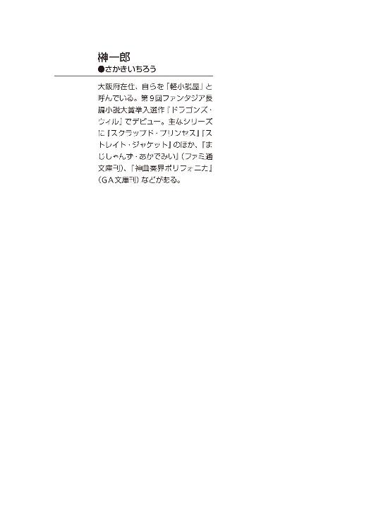
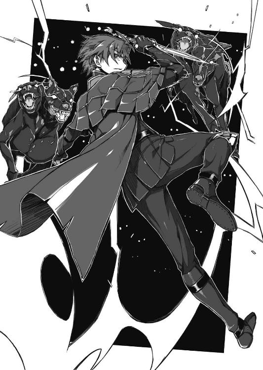

| 棺姫のチャイカII: 2 (富士見ファンタジア文庫) | |
| 榊 一郎 & なまにくATK | |
| 富士見書房 (2011) | |


棺姫のチャイカⅡ
 一郎
一郎

富士見ファンタジア文庫
本作品の全部または一部を無断で複製、転載、配信、送信したり、ホームページ上に転載することを禁止します。また、本作品の内容を無断で改変、改ざん等を行うことも禁止します。
本作品購入時にご承諾いただいた規約により、有償・無償にかかわらず本作品を第三者に譲渡することはできません。
本作品を示すサムネイルなどのイメージ画像は、再ダウンロード時に予告なく変更される場合があります。
本作品は縦書きでレイアウトされています。
また、ご覧になるリーディングシステムにより、表示の差が認められることがあります。
口絵・本文イラスト なまにくＡＴＫ（ニトロプラス）
口絵・本文デザイン Lightning
序章 竜騎士の帰還 RETURN OF THE DRAGOON CAVALIER
最初はそれが何なのか判らなかった。
彼女の膝程の高さまでしかない小さな石柱は......墓碑と呼ぶには、あまりに粗末に見えたからである。
石柱といっても、ただ路傍の石を積んだだけの代物だ。他に手を掛けた様子は全くなかった。碑銘も無い。子供の積み木と同じだ。ひどくおざなりで──死者への弔意も畏敬も一切感じられない。それと知らされねば、気付かずに通り過ぎていただろう。
「こ......これが......？」
ドミニカ・スコダは喘ぐ様に言った。
のしかかる様な灰色の雲の下──辺りの風景は、昼とは思えぬ陰鬱な色彩に塗り込められている。目の前の墓碑も、殊更にみすぼらしく見えた。
「へ......へぇ......ルツィエ様の」
彼女を此処まで案内してきた村の老人が頷いた。
皺深い顔を伏せがちにして......声にも怯えの色が濃い。
勿論それは、長く激しい戦争を終えて凱旋した領主を前にしている、という事も理由としてあったろうが──何よりも年老いた村人を恐れさせているのは、ドミニカの背後に立つ巨大な異形であったろう。
白銀と漆黒──相反する色彩を帯びた巨体。
大きな闇色の翼を畳み、長い首を項垂れる様に曲げていてさえ、牛よりも馬よりも遥かに大きい──むしろそれらを獲物として掠っていきそうな巨体である。
獣というよりも──四肢や頭部の配置は、人間のそれに近い。
だが単に『人型』と呼ぶにはあまりに首が長すぎる。また腕や脚の長さも人間の配分とは異なる。馬の様に面長の頭部には、一対の角が備わり──そして何よりも全長の半分近くをしめる長い尻尾は、人間には決して備わらない筈の器官だった。
人に似ながら人でなく。
翼があっても鳥でなく。
尾を備えても獣でなく。
これを異形と呼ばずして何と呼ぶのか。
だが......何よりもその姿を特異たらしめているのは、輪郭ではなかった。
その表面を覆うのは毛皮ではない。滑らかな皮膚でもない。時にこれを『鱗』と称する者も居るが、蛇や蜥蜴のそれとは明らかに異なり──大きな幾つもの平面が組み合わさって形成されるそれは、むしろ騎士達が帯びる板金鎧を連想させる。
故に、この怪物は人々からこう呼ばれる。
鎧を帯びる竜、即ち『装鎧竜』──と。
いかに『大丈夫だ』と明言されても、こんな威圧的な姿の怪物が間近に居れば、誰しも怯えて当然だ。むしろ悲鳴を上げて逃げ出さないだけ、ドミニカを案内してきた老人は根性があると言えた。ドミニカさえ、初めてこの装鎧竜と引き合わされた際には腰を抜かしたものである。
「ルツィエ......」
ドミニカは呆然と──譫言の様に石碑の下に埋葬された者の名を呼ぶ。
妹のルツィエは、彼女にとって唯一残された家族だった。
『お姉様。お姉様──』
最愛の妹。自分と血を分けた、ただ一人の肉親。
眼を閉じると、今も瞼の裏に彼女の笑顔を見る事が出来る。
静寂の中に身を置けば、彼女の声を脳裏に聞く事も出来る。
『見て。このお花。お姉様の髪に似合うと思うの』
『そうだ。御父様と御母様のお墓にもお供えしないと──』
スコダ家は没落した騎士の家系だった。
具体的には、申し訳程度の所領しか──騎士の家として、最低限度の体面を保ちつつ、慎ましやかに暮らしていくのが精一杯、そんな小さな所領しか持たない田舎貴族だ。
本来そのスコダ家を盛り立てるべき父は......ルツィエが物心つく前に、戦場に行って戻らなかった。騎士の家系と言っても、生まれてくる人間にはそれぞれ向き不向きがある。恐らく父は戦う事に向いていなかったのではないか、とドミニカは思う。
母も......父が戦場へ去って数年後に、病で亡くなった。
父と同じく、愚かな程に真面目な人だった。娘二人を育て、少ない税収でスコダ家の体面を維持して行くには、並々ならぬ苦労があったのだろう。本来ならば治る病気も、致命的なものになってしまう位に。
『お姉様。今日は、鴨のお肉を分けていただいたのよ』
『待ってて。お姉様の大好きな芥子のソース──作るから』
以後、ドミニカは妹のルツィエと共に身を寄せ合い、姉妹二人で生きてきた。
無論、小さいと言っても所領は所領、税収は少女二人が慎ましく生きていく分には充分だった──本来ならば。だがスコダ家の所領である村落では、次第に税の滞納や脱税が目立ち始めた。貴族といえど末端、本来の家長は戦死、しかも遺されたのは二十歳にもならぬ少女が二人、使用人も居ない、となれば──領民も、領主を侮る。
そして既にスコダ家には、領民達の不遜を咎める力は無かった。
このままではいけない......ドミニカはそう思った。
戦争は長期にわたり、未だ終わる様子を見せない。
それどころか、戦線は常に揺れ動いており──いつドミニカ達の郷里が戦場になるかも判らなかった。むしろ末端貴族の所領なぞ、いつ本国から見捨てられるか判ったものではなく──それ故に常に、戦火にまみれる危険性はあったのだ。
『お姉様。お姉様はどうして......？』
戦争に行くと告げた姉に、ルツィエは哀しげな表情を見せた。
後ろ髪を引かれる思いだったが──それでもドミニカは戦場に出るという決心を翻しはしなかった。
戦場において武勲を立てれば、所領を増やしたり、あるいはもっと戦線から離れた内地の方と所領を入れ替えて貰う事も可能な筈だ。領民達も領主たるスコダ家への畏敬を想い出す事だろう。
この戦乱の世の中で......何の後ろ盾も無いドミニカには、他に妹を守る方法など思いつかなかったのである。
『お姉様。いつお帰りになるの......？』
勿論......騎士の家の出といっても、ドミニカにはろくに武術の心得が無かった。
武術を教わるべき相手、即ち父は既に亡く、改めて高名な師について学ぶには、少なくない金銭と長い時間が必要で......勿論それを用意出来る余裕は、ドミニカには無かった。
だからドミニカが軍に入っても武勲を立てる方法は限られていた。
いや。唯一無二と言っても良かっただろう。
選択肢など彼女には最初から無かった。
求められるままに彼女は自分の身体を差し出したのだ。
即ち......
「ルツィエ......」
小さな墓碑の前でドミニカは膝をついた。
「折角──戦争が終わったというのに」
折角、武勲を立てて、報賞に新たな領土を貰って、故郷に凱旋したというのに。
「どうして......こんな」
「へぇ......」
村人は俯きながらぼそぼそとルツィエの死の経緯を教えてくれていた様だが──殆どそれはドミニカの耳に入っていなかった。目の前に横たわる妹の死を受け入れるだけで、彼女は精一杯だった。今は他の事など考える余裕も無かった。
全ては妹の為だった。
他にドミニカに守るべきものなど無かった。
他の何と引き替えにしてでも、妹だけは守りたいと思ったからこそ──ドミニカは、自らの身体を差し出し、屈強な戦士や生粋の騎士すらも尻込みする様な、恐ろしい方法を選んで戦場に立った。
そして必死に戦って戦って、莫大な報賞を勝ち取ったのだ。
しかし......
「私は......」
それが間違いだったのか。
妹の側を離れなければ──たとえ死の運命を避けられなかったとしても、死に際を看取るなり、共に死んでやるなりできたものを。
きっとルツィエは一日千秋の想いで、姉の帰りを待ちわびていた事だろう。
きっとルツィエは深い孤独と絶望を抱えて逝った事だろう。
そう思うと──もう堪えきれなかった。
「お......おお......おおおおおお............！」
墓碑の前で泣き崩れるドミニカ。
白銀の鎧が土にまみれるのも構わず、彼女は両手の拳を何度も何度も地面に打ち付けて嗚咽をこぼす。自分の中で際限なく膨れ上がっていく悲嘆を、一体どう扱えば良いのか判らない。ただ居ても立ってもいられない気持ちを拳に込めて、彼女はそれを振り下ろし続けた。
そして──
おおおおお......おおおおおおおおおおおおおおおおおお............！
ドミニカ達の上にのしかかる曇天に、咆哮が響き渡る。
まるで彼女と悲しみを共有するかの如く......白銀の鎧を帯びた竜は、天を振り仰ぎ、巨体を震わせ、慟哭の叫びを暗く濁った空へと放った。
第一章 彷徨の始まり BIGINING OF WANDERING
青白い月光の下にその異形は佇んでいた。
いや......ただ『居た』と、あるいはもっと端的に『あった』と表する方が良いのかもしれない。それには腕も無ければ脚も無いのだ。胴体と頭部の区別すら無い。明確な形そのものが無い。その輪郭は定まっておらず、如何様にも変化するからだ。眼の前のそれが、立っているのか転がっているのかすら、見た目からは判別がつかなかった。
トール・アキュラは──ただ呆然と、眼の前の異形を見つめる。
「............」
もぞりと身じろぎする......不定形。
ぐにゃりぐにゃりと間断なく震え揺らぐその表面は、枯葉や泥土に覆われていた。そこには勿論、眼も鼻も口も無い。『これは何か？』と問われれば──見た目からは、ただ『塊』としか答えられないだろう。まるで土や泥が自ら動いているかの様な、常軌を逸した奇怪さがそこにはあった。
「......チャイカ......」
冷え込んだ夜気のせいだろう......呼び掛けるトールの声は闇に白く濁る。
チャイカ。
それは、彼が仕えるべき主として定めた少女の名だ。
銀髪の、小柄で、何処か不思議な──そして儚げな佇まいの、国無き姫君。
名匠の手になる人形の如く、隙無く整った目鼻立ちも。
強く抱き締めれば折れてしまいそうな、華奢な手脚も。
一切の穢れを寄せ付けぬかの様な、白く滑らかな肌も。
その全てが、眼の前の異形には無い。
ただの薄汚れた──人の姿形すら棄てた『塊』だ。
「それが......お前の......」
呆然とした口調で言うトール。
「......お前の」
トールは瞬きを繰り返す。
眼の前の受け入れ難い現実が──そうしていれば、何度目かに瞼を閉じて開いたその瞬間、ぱっと消えてしまうのではないか、そんな馬鹿な事を頭の片隅で期待しながら。
やがて彼は観念したかの様に低い声で──問うた。
「寝間着か」
「うぃ」
ずぼりと『塊』から少女の顔が飛び出した。
何処かに切れ目というか、襟というか──まあ、そういう部分があるのだろう。
長い銀髪も、紫の双眸も、白い柔肌も、勿論、つい先程までと全く変わっていない。
変わったのは要するに──衣装だけだった訳だが。
「保温性。抜群」
と『塊』から首だけ出した少女──チャイカ・トラバントは言った。
「......いやまあ、そうなんだろうけどな」
「偽装性。抜群」
元より大陸共通公用語はあまり得意でない様で、全体的に韻というか、抑揚がおかしな感じの喋り方なのだが──声の調子から、そこはかとなく得意げなのは伝わってくる。
「それもまあ、そうなんだろうけどな」
トールはうんざりした口調で言った。
「どういう趣味をしてんだお前は」
「重視。実用性。最優先」
「............」
トールは改めてチャイカの『寝間着』を眺めた。
まあ実際には服と言うより寝袋の類なのだろう。端的に言えば、人間一人が丸ごと入る布袋だ。通常の筒状をした寝袋と違い、入ったまま動ける様に、かなり大きさには余裕がある様だったが。
その表面は二重三重に目の細かい網が掛けられており、中に入ってチャイカがごろごろとその辺を転がるだけで、勝手に枯葉やら泥土やらが引っかかって偽装が完成するという仕組みである。
元々袋状で人の形をしていない事に加え、この表面である。少し離れて見れば、もうそこに人間が居るなどとは判らなくなるだろう。
「まあ魔法師だから、そういう装備も必要な訳か......」
「自作。自慢の逸品」
と──やはり得意げにチャイカは頷いた。
「見つからない事が一番の防御なんだろうしな」
「肯定」
「けど今はそんなもん着る必要はねえよ。鬱陶しいから脱げ」
「むい？」
「周囲の警戒は俺達でやる」
とトールは言った。
現在──トール達は山林の只中に居る。
周囲は木々に囲まれ、足下は落ち葉と腐葉土に覆われている状態だ。此処で野営するにあたってトールは、周囲に幾重にも『結界』を敷いた。
無論それは、魔法師が使う様な防御結界や警戒領域の類とは、根本的に異なる。もっと単純な代物だ。単に細くて折れやすい──つまりは誰かが体重を掛けて踏めば、容易く音を出してくれる様な、小さな枯れ枝を、腐葉土や落ち葉の下に仕込んだだけである。
更に木々の間にも細い黒糸を幾重かに張り巡らせ、そこに鈴をぶら下げてある。
もし何者かが近付いてくれば──あるいは警戒して地面ではなく、周囲の木々の枝の上を渡ってきたとしても──音が鳴って報せてくれるという寸法だ。
「つか......それな。確かに暖かいだろうし、見た目には判りにくいんだろうけど。むしろいざって時にさっさと動けないと、どうにもならねぇだろ」
「......むぅ」
チャイカは顔をしかめる。
どうやらお気に入りの『寝間着』をけなされて面白くないらしい。
「大丈夫。可能。迅速な行動」
「......ほほう？」
トールは眼を細めて言った。
「ならそこの樹の周りをぐるっと回ってみろよ。駆け足でな」
「うぃ」
簡単だ、と言わんばかりにチャイカはトールが指差した大木の方へと早足で歩き出す。
でもって──
「みぎゃ？」
──べしゃ。
わずか三歩目で、チャイカは見事にすっ転んでいた。
それももろに顔面から地面に突っ込む感じだ。寝間着の表面どころか、白い貌だの銀の髪だのまで泥と落ち葉だらけである。
「言わんこっちゃない」
「うう。不可解」
「服が服の形してるのには意味があるんだよ。お前、それ、常に自分のスカートの裾踏んづけながら歩いている様なもんだぞ」
おまけに、泥やら落ち葉やらを帯びやすい様に掛けられた目の細かい網は、つまりそれだけ周囲の枝やら何やらに引っかかりやすい訳で。
要するに彼女の寝間着は、あくまで『じっとしていれば見つからない』点においては優秀だが、動きやすさ──咄嗟に逃げるという面では、全く役に立たない代物という事だ。
「自信作......」
哀しげに呟くチャイカ。
彼女自慢の寝間着のせいで、地面との境目が判りにくいというか、まるで生首が地面に転がったまま嘆いているかの様にも見えて、非常に不気味である。
「いいから脱げよ」
と言ってトールは転んだままのチャイカに向かって手を差し伸べる。
次の瞬間──
──ぞす。
そんな音を立てて、トールの指先をかすめた刃物が、腐葉土にめり込んだ。
......鉈である。
「ぬわっ!?」
思わず手を引っ込めて身構えるトール。
元々鉈は木々の下生えを払ったり、焚き火用の薪を割ったり、あるいは捕らえた獲物を解体する為のものである訳だが──そうした雑な使い方をする為に、この類の刃物はかなりの重量がある。刃の鋭さではなく、重さで対象を切断するのである。
こんなものをぶん投げた日には......まともに当たれば指の一本や二本は簡単に落ちる。
「兄様......」
木々の間に凝る闇の向こうから、色の無い声が投げ掛けられた。
ひどく淡々としていて、その声音からは喜怒哀楽が殆ど感じられない。
「一体それは何の積もりか」
「それはこっちの台詞だ阿呆！」
トールは喚いた。
「いきなり何て事しやがる!?」
「それこそこっちの台詞だ兄様」
言いながら闇を抜けて近付いてきたのは、長身痩躯の娘だった。
切れ長の眼や、怜悧に整った口元のせいで、その容貌には大人びた雰囲気があるが──実際にはまだ十七である。黒髪を長く伸ばしているが、後頭部で括って束ねる髪型になっている為、まるで少年の様な、活動的な印象になっている。
すらりと長い手脚をしているが、ひ弱な印象は微塵も無く、服の上から──革製の簡易防具の上からさえ、牝鹿の様に引き締まった様子が窺えた。
アカリ・アキュラ。
トールの妹である。ただし血の繋がりは無い。所謂、義理の妹というやつだ。
ちなみに彼女は狩りに出掛けていて──丁度今戻ってきたらしい。
左手には絞めた鳥を一羽ぶら下げている。恐らく捕まえたその場で、内臓処理と血抜きをしたのだろうが......ぽたり、ぽたり、と抜けきらなかった血が滴り落ちているせいで、妙な凄味がその姿には追加されていた。何も知らずに夜道で子供が出会せば、失禁して泣き出しそうだ。
「このような夜半に」
闇色の双眸をひたりとトールに据えてアカリは言った。
「婦女子を捕まえて服を脱げとは」
「......え？」
とトールは間の抜けた声を出す。
まあ確かにチャイカに向けて『脱げ』とは言ったが。
「あ──いや、違う」
トールは慌てて首を振った。
「断じてお前が想っている様な流れじゃなくてな」
「むい？ 脱衣中止？」
寝間着を脱ぎかけていたチャイカはきょとんとした様子で首を傾げる。
当然といえば当然だが──寝間着な訳だから、その下は殆ど裸の様な状態で。しかも気温が低いせいか、元々雪の様に白い肌には、うっすらと朱がさしていたりして、恐ろしく誤解を誘う姿だ。
「お前も今更脱いでんじゃねえよ！」
「トール。理不尽」
と頬を膨らませて言うチャイカ。
「全く兄様にも困ったものだ」
アカリはやれやれといった様子で首を振る。
もっとも......その顔には表情らしい表情も浮かんでいないので、恐ろしく白々しい感じになっているが。ちなみに、アカリは喜怒哀楽に乏しいというより、どうも内面のそれを表情に出すのが著しく下手なのだ。どういう理由からかはトールにもよく判らないのだが。
「ちょっと眼を離すとすぐに婦女子を手込めにしようと」
「人聞きの悪い事言うなっ！」
トールは喚いた。
「誰がそんな──」
「だがそれが兄様の性癖だというのなら仕方がない」
「聞けよ。おい」
「いかに変態だろうと好色だろうと早漏だろうと短小だろうと──私にとっては敬愛する兄様。そんな兄様の全てを受け入れるのは妹たる私の義務と心得る！」
アカリは『さあ私の腕の中に飛び込んで来るが良いわ兄様』とでも言わんばかりに両手を広げる。ちなみに左手には前述の絞めた鳥をぶら下げたままである。何となくそのまま絞め殺されそうな気がした。
「......っていうか、つらっと変な要素加えてんじゃねえ！」
「変な要素？」
「大きいか小さいかとか余計なお世話だ！」
ついでに早いか遅いかとかも。
「大事な事だぞ。大事な処の事だからな」
とアカリは重々しく言った。
「ついては確認しておかねばならない。妹として」
「せんでいい！」
「さあ。脱ぐのだ兄様」
静かな口調でアカリは命じてきた。
「人に脱げと言っておいて、自分は脱ぎたくないなどと、筋の通らぬ事を言う兄様ではないと、私は固く固く信仰している」
「信じんでいい！」
そう怒鳴ってから──トールは地面に突き刺さったままの鉈を拾うと、ひょいと手首を振ってアカリに投げ返す。アカリも片手で危なげもなくこれを受け止めると、指先でこれをくるりと回して、すとんと落とす様に腰の金具へ吊し直した。
「ああくそ......こんな山の中で何やってんだかな。俺は」
「野営の準備だろう」
何を今更といった口調でアカリが言ってくる。
「ああその通りだよ。その通りですね！」
忌々しげに言うと、鉈と交換するかの様にアカリが投げてきた鳥を受け止める。
「さてどうするかな。さすがに生はきついか」
「かといってさすがに火は焚けまい」
とアカリが言ってくる。
その通りだ。こんな山の中で火を焚く程に目立つ事は無い。たとえ火そのものは何かで覆い隠せたとしても、煙や匂いまではどうにもならない。
トール達は追われる身だ。発見される危険は極力減らさねばならなかった。
「塩に漬け込む──には手持ちの塩が足りんし。器もないしな......」
「トール」
ちょいちょいとトールの服の裾をチャイカが引っ張る。いつの間に着替えたのか、既に彼女は半裸ではなく、いつもの白と黒の服を着ていた。
「調理。魔法──応用」
とチャイカは自分を指差しながら言う。
「ああ......その手もあるか。頼めるか？」
「うぃ」
嬉しげに頷いて、チャイカはすぐ側の樹へ立てかけてあった黒い箱に手を伸ばした。
それは縦長の──人間が一人入る位にまで引き延ばされた六角形。
棺である。
だがチャイカがこれを開いて中から取り出したのは、勿論、死体ではなく......鋼や木で出来た機械の部品だった。細長い筒。複雑な機関部。握りらしい部分は木を削って作られたものだろう。チャイカはこれを慣れた手つきで組み立て始めた。
さして待つ程の事も無く......チャイカは完成したその道具を構えて見せた。
長い。恐らく彼女自身の身長よりも長い。
それは──機杖と呼ばれる魔法装置だった。
魔法師と呼ばれる者達はこの杖状の装置を使って魔法を御するのだ。かつては長々と儀式を積み重ねねば行使できなかった魔法という技能が、この装置を使う事によって、簡易に、扱う事が出来る様になった。
「トール。肉。そこ。枝。吊す」
チャイカは接続索と呼ばれる部品を自分の首に巻いてから、トールの側に生えた樹木を指差した。
「こうか？」
「うい」
頷いて、チャイカは機杖を、トールが枝に吊した鳥に向ける。
そして──
「......アイムル・イアイ・デルザ・トルグ・イルグ......」
チャイカは片眼を閉じて機杖の測距器を覗き込みながらぶつぶつと何事かを唱え始めた。
呪文詠唱──精神集中の為の手順であると同時に、それは、普段使わない言語体系を用いる事で、脳の働きを部分的に切り替える為のものなのだとか。詳しい理屈は門外漢のトールには判らないのだが。
「......フィファ・アクソム・エクセプス・レス......」
やがて彼女の周囲に蒼白い燐光が灯った。
炎ではない。雷でもない。
ただ虚空に直接存在するその光は──次の瞬間、四方八方に分岐して伸張し、複雑怪奇な紋様を描き始めた。
それは魔力に一定方向を与えて特定の効果を引き出すための──回路。
当初は断片だったそれらは、機杖を中心に緩やかに回転し、相互に噛み合い、そして一つの大きな魔法陣へと完成する。
「──いざ。顕れよ〈煮え滾るもの〉」
自信たっぷりにそう宣言するチャイカ。
次の瞬間、何かが──眼に見えない何かが、絞り込まれる様にして、吊された鳥に流し込まれていった。
光も無く。音も無く。
だが何かの力が行使された事だけはトールにも判った。
そして............
「おお──凄いな」
間もなくうっすらと肉の焼ける匂いがトールの鼻先に漂ってきた。
火を使わずに、こんな短い時間で調理出来るのは、恐ろしく便利だ。
トールは感心した様子でチャイカを振り向いて──
「──あ」
眼をぱちくりと瞬かせるチャイカ。
次の瞬間......................................................鳥肉は、爆裂した。
「──うわちっ!?」
当然、側に居たトールは横から飛んできた幾つもの肉片を浴びる事になる訳で。体術にはそれなりに自信のあるトールも、さすがにこれを全部避けるのは無理だった。
「熱っ......！ な──なんだ!?」
飛んできた熱い肉片を顔から剥がし、トールは吊られていた鳥を振り返る。
何というか、悲惨な有様だった。既にその肉と内臓の大半は吹っ飛んでしまっていて残っておらず、骨と皮がだらんとぶら下がっているばかりである。
「なんだ、何が起こった!?」
「............」
チャイカは眼を丸くしてしばし佇んでいたが──
「──てへ」
とはにかむ様に笑った。
「誤魔化すなッ！」
怒鳴るトール。
察するに、加熱の加減か何かを間違えたのだろう。
内部に急激に生じた熱で、瞬間沸騰した鳥の中の水分が、気化して爆発的に膨張。結果として破裂したのだ。
そういえばこのチャイカという娘──ここ一番という時の集中力は尋常ではないのだが、その代わりに普段は、魔法に限らず、とにかく不器用というか、失敗が多い。
「忘れてたぜ......」
服にも貼り付いた肉を剥がしながらトールは呻いた。
「あまり意味が無かったな」
と──アカリが評する。
まあこんなに派手に加熱した肉片を飛び散らせてしまっては、煙はともかく、匂いはもう隠しようが無い。
「ああくそ......」
トールは月の佇む夜空を見上げて溜め息をつく。
「やっぱ早まったか......俺？」
乱破師トール・アキュラ。
彼の旅は、始まった早々に自分の選択を後悔したくなる位──激しく多難だった。

長い長い戦国時代が終わった。
実に三世紀以上の長きにわたって続いた戦乱期は、常にその渦中にあったとされる北方の大国──ガズ帝国の滅亡により終息した。
『禁断皇帝』『魔王』『不死王』『大賢者』『超帝』『戦争狂』など......数々の異名を持ち、自身も強大な魔法師として知られたガズ帝国皇帝アルトゥール・ガズ。
だがかの『怪物王』も、連合国軍の圧倒的物量の前には抗しきる術を持たずに討ち取られ、その遺体は爆破焼却されたと言われている。その結果として、アルトゥール・ガズの独裁によって統治されていたガズ帝国は、いとも簡単に瓦解──臣下の半数は死亡、残りの半数はフェルビスト大陸全土へと逃散した。
程無くして各国はガズ帝国の領土や資産の分割や、魔法技術の接収を開始。他にも疲弊した国土や経済の回復に忙殺され、改めて戦争を起こそうという国家は何処にも無かった。
平和な時代の幕開けである。
だが......時代の移り変わりというものには、明確な一線が引かれている訳ではない。
『戦争は終わりました』と告げられたからといって、全てが翌日から切り替わるという訳にはいかなかった。特に長すぎた戦乱は、人々の生活において日常化してしまい、むしろ平和な時代の訪れを──戦国時代の終了を素直に享受出来ない者達が数多く遺されるという、本末転倒な状況を作り出す事になった。
例えばそれは、軍需物資の生産を続けて来た諸々の製造業者であったり。
例えばそれは、駐屯する軍の兵士を相手に商売をしてきた業者であったり。
あるいは、それはトール・アキュラやアカリ・アキュラの様な──戦乱の最中にこそ活躍出来る人材を村ぐるみで『生産』していたアキュラの里の乱破師であったり。
戦争ある事を前提に生活の構造を組み立ててしまった者達。平和な時代にあっては、彼等そのものが無用の長物になりかねない。だがそれが判っても今更、生まれた時から続けてきた生き方を変える訳にはいかない。それはもう身体にも精神にも染みついて、どうにもならないものだった。
彼等は『時代に取り残された』のだ。
そして──
チャイカ・トラバント。
本名──チャイカ・ガズ。
〈魔王〉とも〈賢帝〉とも呼ばれたアルトゥール・ガズ皇帝の遺児たる彼女もまた、新時代に居場所を求める事の出来ない人間の一人であった。
簡単な夕食を終えた後は打ち合わせの時間となった。
「さて......これからどうするかだな」
手近な樹木の幹に背中を預けて座りながらトールは言った。
アカリはトールの左脇に座り、チャイカは二人とは向かい合う形で座っている。火は焚く事は出来ないが、月明かりのお陰でお互いの顔は何とか見る事が出来る状態だ。
実の処──デルソラントの街を出てから五日、まともに話が出来るのは今日が初めてであった。それまでは、とにかく追っ手を引き離す為に昼夜を問わず移動を続けていた為、とても話が出来る状態ではなかったのである。トールとアカリはさておき、チャイカは疲労困憊だったのだ。
「大まかにでも行動方針を決めておかないと」
「むい？」
きょとんとした顔をしているのは事の中心──である筈のチャイカ本人である。
どうも当人としては、今まで通り、さしたる考えも無く『父の形見』を探して歩く積もりだった様だが......
「あの時は勢いでお前につく、なんて言っちまったけどな。『形見』を探すにしても、あの面倒臭い連中から逃げるにしても、自分達の置かれた状況ってのが分かってねえと、どうしようもねえだろうが」
顔をしかめてトールは言った。
チャイカは追われる身だ。
〈禁断皇帝〉アルトゥール・ガズの娘として、騎士やら傭兵やら暗殺者やらの混成部隊が彼女と──そして『形見』を探している。
そしてトール達は、半ば成り行きで彼等と一戦をやらかした上、チャイカに付き従い彼女を守る事になった訳だが......
「......納得」
とこれは素直に、こっくりと頷くチャイカ。
この少女──こうしていると本当に綺麗で人形の様に可愛らしいが、見た限りは本当にただそれだけ、といった感じである。魔法師という肩書きにしても、珍しい事は珍しいが、別に唯一無二というものでもない。
つまり......少なくとも、あの騎士達がわざわざ危険視して追い回さねばならない様な人間には見えないのだ。無論......人間の外見と内面が一致するとは限らないし、善人だろうが悪人だろうが、追われる時は追われる訳だが。
「そもそもお前」
トールは眼を細めて言った。
「本当にあのアルトゥール・ガズの娘なのか？」
「肯定」
とチャイカは頷く。
「実は姫君」
薄い胸を得意げに張ってチャイカが言う。
どうにもこの少女、立場の割には緊張感が無い。
「いや。威張られてもな」
「敬意。必要」
自分の顔を指差して、チャイカはそんな事を言ってくる。
まあ雇い主といっても、自分より明らかに歳下の少女なので、トールはかなりぞんざいな接し方をしている。そもそも、いきなり姫君だ何だと言われても、そんなやんごとなきお方たちとの接し方なんぞトールは皆目見当もつかない訳だが。その辺がチャイカはやや不満なのかもしれない。
「そもそも......お前は、最終的に何をどうしたいんだ？」
「集める。父様の亡骸」
きっぱりとチャイカは即答した。
そう。チャイカは父の遺体を──かつて〈魔王〉とも呼ばれたアルトゥール・ガズ皇帝の、遺体を集めている。
どうやらアルトゥール・ガズはガズ帝国討伐戦の際に討ち取られ、その遺体は幾つかに分断されて討伐戦の『英雄』達が持ち帰ってしまったらしい。
強い思念を長く帯びた物体は、魔法の原動力──魔力源になる。
通常は、ある種の知的生物の化石を加工処理して魔力源に使うが──これを化石念料という──フェルビスト大陸史上最高最強とも言われた大魔導士でもあったアルトゥール・ガズの遺体もまた、強力無比な魔力源になり得る。そしてそれは、魔力の蓄積量や純度によっては同重量の金にも数倍する値が付く事も、少なくないのだ。
つまりガズ皇帝の遺体は戦利品として、直接ガズ皇帝を倒した『英雄』達が分け合ったという事だ。
勿論これは非公式なものだ。
表向きはガズ皇帝は『英雄』達と戦った末に、魔法によって遺体も残らぬ様に爆破焼却されたと言われている。
何もそこまで──と思うのはガズ皇帝の伝説を知らぬ者だ。一説には『人間ではない』とまで言われた〈魔王〉を、それだけ、列強諸国は恐れていたという事である。
いずれにせよ......
「くれっつっても、くれはしないんだろうけどなあ」
トールは面倒臭そうに呟いた。
言うなれば『英雄』達は、連合国軍全体が持ち帰って分割するべき戦利品を、自分達だけでガメてしまったという事になる。恐らく持っている事さえ認めたがらないだろう。
「そもそも誰が持ってるのかとか分かってるのか？」
「............」
ぶんぶんと首を振るチャイカ。
「そこからかよ」
脱力感がトールの上にのしかかる。
そもそも『直接ガズ皇帝を倒した英雄』といっても、氏名が公表されている訳ではないのだ。問題になるのは『直接』という部分で......同じ場所に居たとしても、後方支援していた魔法師は含むのか、皇帝を守ろうと駆け付ける臣下を引き受けていた者はその数に入れるのか、等々──かなり曖昧な部分がある。
しかもガズ帝国を滅ぼしたのは元々連合国軍、つまりは寄せ集めであった為、戦後の領土分割やそれに類する問題で『我が軍の騎士こそ英雄』と牽強付会に『英雄』を拡大解釈して喧伝する国も出てきている。『ガズ皇帝を倒したのは我々なのだから、その分だけ多めに領土や財貨を受け取るのが当然』という主張だ。
一応、直接的に同じ場所でガズ皇帝と戦ったのは、八名の特攻隊だと言われているが、こうした国同士の思惑が絡んだ結果、個人名は公式発表されていない。
先のデルソラントの街の領主の様に、街の噂になる事はあっても、それが本当の事かどうかは一般庶民では確かめようが無い。
「でも。情報。供与」
と──人差し指を立ててチャイカは言った。
「あ？ 教えてくれる奴が居るってのか？ 誰だよ」
「知らない人」
「............」
眉を顰めるトール。
詳しくチャイカの話を聞いていくと......どうやら、たまにチャイカの前にふらりと現れては『遺体』の持ち主の情報を告げて去っていく謎の人物が居るらしい。
だがそれは一体何者なのか。
何の利があってそんな事をするのか。
「あの騎士の言っていた『ガズ帝国復興を企む勢力』って奴か？」
亡き〈禁断皇帝〉の遺児として──つまりは正当後継者としてチャイカを祭り上げ、ガズ帝国復興を目論んでいる人間が居るのだ、とあの騎士は言っていたが。
「......？」
首を傾げるチャイカ。
よく分からないという意味か。あるいはあの騎士の言っていた事を詳しく聞いていなかったのか。いずれにせよ......
「胡乱な話だな」
と腕を組んで評するのはアカリである。
その『誰か』は一般に知られていない事情に通じているだけでなく、チャイカの素性にも恐らく気付いている筈だ。相当な情報収集能力と行動力である。
しかしそんな協力者が居るなら......どうしてチャイカは一人で『遺体』を探し回る様な真似をしていたのか。
たまたまトール達と出会ったから事無きを得たものの......場合によってはチャイカはデルソラントの山中で死んでいた可能性もある。あるいはあの騎士達に追いつかれて捕縛され──危険人物として殺されていたかもしれない。
ガズ帝国復興を目論見、チャイカをその旗頭として担ぎ上げたいと考えているのなら、あまりにも計画が杜撰というか、行き当たりばったりに過ぎる。
「お前は『遺体』を集めてどうしたいんだよ？」
彼女の目的はアルトゥール・ガズ皇帝の遺体を集める事。
それははっきりしている訳だが、その先にあるものが見えない。
ガズ帝国の復興なのか。それとも連合国の人間への復讐なのか。
あるいは──
「──弔う」
チャイカは端的にそう言った。
「あ......ああ。そういう事か」
トールは納得して頷いた。
どうやら『帝国』だの『皇帝』だの『姫君』だの──大仰な言葉に惑わされて、ついつい複雑に考えてしまっていた様だ。遺体を集める事そのものも、その後に控える何かの為の手段や布石なのだと。
だがこの少女は──ただ父の遺体を、きちんとした形で弔いたいだけなのだ。
それは別に不自然でも何でもない考えだろう。
〈魔王〉だとか姫君だとかそんな事とは関係無く、ごく当然の家族の情だ。
しかし......
「それだけつっても──周りが放っておいてくれねえだろ」
「......？」
前述の通り、ガズ皇帝の遺体は単に強大な魔力源になるというだけでなく、かつてのガズ帝国の象徴にも成り得る──つまり遺体を全て集めた場合、その権力の承継者である事を、内外に知らしめる効果を持っている。
少なくともあの騎士達はその事を危惧していた。
滅ぼされたとは言っても、数百年にわたって北の大国であり続けたガズ帝国だ。利害関係者は何十万何百万と残っているであろうし、その中には未だガズ帝国再興を狙っている者達も居るだろう。
「お前さ......」
少々呆れた表情でトールは言った。
「実はとんでもない大事の渦中に居るって自覚あるか？」
「......？」
どうやら本人としては全くその辺りの自覚が無いらしい。
彼女の言葉通り本当に『父親の遺体をきちんと弔いたい』と思っているだけで、だからこそ彼女はその一点について揺らがない訳だが──しかし危うい、ともトールは思う。
純粋な気持ちは他者に利用され易い。
「父様。集める。それだけ。それから。始まる。私の......明日」
チャイカは言った。
そういえば先日も彼女はそんな事を言っていた。
自分の時間は、五年前のガズ帝国滅亡から止まってしまっているのだと。
昨日に対するケジメをつけねば明日に向き合えないのだ──と。
気持ちは分かる。
形は違えど......トールもまた昨日に縛られ続けているからだ。
「そういえば──そもそも、どうしてガズ帝国は滅ぼされたんだかな......」
トールは腕を組んで言った。
実を言えば、トールはずっとアキュラの里で修行の日々を送っていた為、里の外に出たのは終戦後の事である。それまでは、巡回商人だの、帰郷した里の者だのからもたらされる断片的な話を耳にしていただけで......大まかな世界情勢は知っていても、細かな各国の事情というものには疎い。
「兄様。まったく兄様は世間知らずで困るな」
何処か、わざとらしい仕草で首を振りながら言ってきたのはアカリである。
この娘は、元々あまり表情が顔に出ないだけに、身振り手振りを加えるとやたら白々しく見えてしまうというか、見慣れたトールですら、イラっとする事がままあったりする。
「悪かったな」
「でもそこが萌える」
「やかましい。黙れ」
拳を握って力強く主張するアカリに、トールは唸る様に言った。
「大体、世間知らずってんなら、お前も大差ねえだろ」
アカリもトールと同様、アキュラの里が無くなるまではろくに外に出た事が無かった筈である。ならば世情についての知識もトールと同じ筈なのだが......
「私は女だぞ」
とアカリは胸を張って言った。
ちなみに、こちらはチャイカと違ってなかなかよく育った感じである。体の線が割とはっきり出る様な衣装を着ているから、余計にその辺りが強調される訳だが──
「女には女の武器というものがある」
「ああ？」
「兄様がデルソラントで、ごろごろごろごろと雌伏の日々を続けていた際にも、この女の武器を利用して周辺情報の収集に励んでいたのだ」
「女の武器ってお前......」
トール達は戦場における裏働き──つまり破壊工作や情報収集と操作、暗殺、扇動、そういった表にはあまり出ない作業を専門に担当する乱破師だ。実戦に出た事は無かったが、その為の教育を里で施されてきた。
そして当然──女の乱破師となれば、己の身体を使って敵将を誑し込んだり、娼婦を装って敵地に潜入したりという技術を教え込まれたりもする。
もっともアカリは他の女乱破師に比べると、身体能力が高い分、男達に混じって体術訓練に励んでいた印象が強いのだが──
「いつの間に......？」
アカリが男達から寝物語に情報収集している様子を想像して、何やら釈然としないものを覚えるトール。まあ女乱破師としては別に珍しくもない話であるが。
「そう──」
羞じる様子も無く──むしろそこはかとなく得意げにアカリは言った。
「井戸端会議という奴だな」
「それを情報収集と言い張るお前の価値観には、色々危なげなものを感じるな」
「恐悦至極だ」
「褒めてねえ！」
唸る様にトールは言った。
「だが兄様。世の奥方達の情報流通量というのも、これでなかなか馬鹿にはできんのだ。男が混じるわけにもいかんしな」
「確実性も曖昧な噂話なんざ、どれだけ仕入れても役に立たねえだろ」
「いや。曖昧だからこそ数を仕入れると輪郭は見えてくるぞ。そう教わらなかったか？」
まあ確かに......火の無い所に煙は立たない。
どれだけ曖昧でいい加減な噂話でも、必ずその発端となる事実はそこにある。逆に言えば、どんな形に変化していようと、大量の噂話から共通項を見いだし、途中で付いたであろう尾ひれを削ぎ落としていけば、それなりに確度の高い情報が得られる事もあるのだ。
「ともあれ......世間では、フェルビスト大陸の諸悪の根源としてガズ帝国皇帝は討伐された、という見方が基本となっている様だ」
とアカリは言った。
「その程度は知ってるよ。だがなんでまたガズ帝国『だけ』を討伐する事になったんだかな。戦国時代なんて、自分以外は基本的に全部敵、って状況の筈だろう？」
「ガズ帝国の存在が、戦乱の長期化の原因になっていたとする考えがある様だ」
「──は？」
トールは眉を顰めた。
「そもそも魔法技術が発達した事で、戦乱は規模が拡大したからな」
「通信系とか移動系の──大規模魔法の事か？」
魔法といっても規模は様々だ。
個人が機杖を用いて使う様なものもあれば、複数人が参加して大規模な設備を使い、城の様な巨大物を浮かせたり、機車でも何日も掛かる様な距離と連絡をとったりといった、効果範囲の大きな魔法もある。
それらを含め、現在の魔法技術の大半はガズ帝国によってもたらされたものだ。正確にはそれ以前は魔法とは、非常に手間暇が掛かって実用的でなかった技術なのだが......ガズ帝国皇帝アルトゥール・ガズを筆頭に、優れた魔法技術開発陣が、機杖やそれに関連する技術を生み出したのである。
件の皇帝が時に〈魔王〉や〈禁断皇帝〉などという恐ろしげな二つ名で呼ばれるのと同時に、〈賢帝〉あるいは〈大賢者〉などという尊称で呼ばれる事があるのは、この為だ。ガズ帝国の魔法技術の流出が無ければ、恐らく、フェルビスト大陸の文化文明水準はもっと低いものであった事だろう。
しかし......
「通信や移動手段の充実は当然、各国の領土拡張意欲に火を付ける。広すぎて統治する手段が無ければ領土を広げても意味が無い。逆に言えば『眼の届く範囲』『手の届く範囲』が広がったからこそ......という事だ」
「......まあ理屈は分かるがな」
トールは腕を組んで言った。
「少々強引な理屈じゃねえか？ それは」
確かにガズ帝国のもたらした魔法技術が、戦火の拡大に一役買ったのは事実だろう。
だがそれを以てガズ帝国が諸悪の根源と断じてしまうのは、少々勝手に過ぎる。
その技術を用いて実際に戦争を仕掛けたのは列強諸国であるからだ。剣を以て他人を殺めた罪は、あくまでその使い手に対して負わされるべきであって、製作者たる剣鍛冶にまで責を問うのはおかしい。
「確かに強引とは思うが」
アカリは頷いた。
「だが概ね世間的に知られているのはこの様な理屈だ」
「ふむ......」
いずれにせよ──あの騎士達も伊達や酔狂でチャイカを追っている訳ではあるまい。
誰かが何らかの現実的な脅威を感じたからこそ、彼等は派遣されてきたのだ。
「まあ......その辺はおいおい分かるか」
とりあえず滅んだ帝国の事情よりも、今は自分達の身の安全の確保を考えるべきだろう。
「あの厄介な連中をどれだけ引き離せたか──だが」
チャイカを追う連中の事を──特にあのとんでもない技の冴えを見せた青年騎士の事をふと想い出しながら、トールは物憂げに溜め息をついた。
戦後復興推進機関──〈クリーマン〉。
恐らくフェルビスト大陸においては唯一と言っても過言ではない超国家組織であり、複数の国家からの人材派遣と共同出資によって成り立っている、特異な存在だ。
だがその大仰そうな題目とは裏腹に、組織の設備や人員の規模そのものは、決して大きなものではない。
実を言えば〈クリーマン〉はガズ帝国攻略戦における共同戦線の名残に近く、実際には、戦後の体制再編に忙殺されている統治者達が、『とりあえず手に余る案件』を押しつける先として──もっと身も蓋も無い言い方をすれば、領民に対して『手を打っていない訳ではない』という言い訳として使われる事が多い。
人員無し。予算無し。権力無し。
三重苦揃った弱小組織が〈クリーマン〉の実態だ。
当然......人材についても『有能だが癖が強すぎて凡庸な人間では使いこなせない』者達が、厄介払いの様な形で各国から送り込まれて来る。
例えば女性補佐官のカレン・ボンバルディアもその一人だった。
「ジレット隊が、例の人物と接触した際の報告書が届きました」
中庭で煙草の一服を終えて戻ってきた〈クリーマン〉機関長コンラート・シュタインメッツは、執務室に入るや否やカレンからそう報告を受けた。
「例の人物？」
「チャイカ・ガズです」
カレンは、神経質そうな顔の真ん中を横切る眼鏡を指先で弄りつつ、当然と言った口調でそう告げてくる。
見るからに融通が利かないといった感じの中年女性で──実際、杓子定規の典型の様な性格をしている。事務処理能力は高いのだが、自分が出来る事は他人にも出来て当然といった調子で接する為に、上からも下からも煙たがられる類の人物だ。自分に厳しく他人にも厳しい──筋は通っているのだが。
彼女の手元には、数枚の紙束があった。
恐らく件のジレット隊から送られてきた報告書類──正確にはその写しだろう。
「〈魔王〉の娘かね」
コンラートは、カレンのすぐ横を通り過ぎて自分の執務机に向かいながら言った。
「............」
カレンが煙草の匂いに顔をしかめるが、殊更に文句は言ってこない。
執務室を禁煙にしたのは彼女の提案──というより要請だ。空気が悪いと仕事の能率が下がるというのがその主張の内容である。コンラートは渋々これを認めたが──それが彼にとって最大限の譲歩であるという事は彼女も理解しているだろう。コンラート本人に完全な禁煙を強いれば、効率云々どころの話ではなく、むしろ〈クリーマン〉機関そのものが機能停止しかねない。
「思ったよりも早かったな」
執務机に就いて書類の束を開きながらコンラートは言った。
「今度は本物であれば良いが」
コンラートの口調にはうんざりした響きがあった。
〈禁断皇帝〉アルトゥール・ガズの娘──チャイカ・ガズ。
実の処、彼女を探しているのはジレット隊だけではない。〈クリーマン〉機関だけに限ってもあと二つの隊がこれを捜索している。そして彼等からも何度かコンラート達は『〈魔王〉の娘を発見せり』という報告を受けていたのだ。
ただしその殆どはすぐに捕らえられ、偽物と断じられた。
そもそも......アルトゥール・ガズに娘が居たという話は戦後に出てきたものだ。
戦中には、かの〈禁断皇帝〉の血縁者については一切の情報が無かった。
だからそもそもチャイカ・ガズという娘が本当に実在するのかすら、怪しい。
しかし──それでも、いや、だからこそ、戦後のどさくさに紛れて素性を偽り、自分はガズ帝国の姫であると主張する物知らずな馬鹿は、捕まえても捕まえても一定数湧いて出てくる。確かにガズ帝国そのものが滅んでいる為、自分で名乗ってしまえば確かめる術はまず無いのが現状だが──他に騙るべき名は幾つもあろうに、何を好きこのんであの〈禁断皇帝〉の血縁を名乗るのか、コンラートとしては理解に苦しむ。
「何者かが手を貸している様ですが」
「またぞろ詐欺でもやる積もりか？」
書類をめくりながら呆れた口調でコンラートは言った。
ガズ帝国復興を掲げ、これを成し遂げた暁には取り立てる事を確約し──そうやって商人やら領主やらから金銭を借りては踏み倒して逃げる、悪辣な騙りの存在も報告されている。というか、今までに捕らえられた『〈魔王〉の娘』は殆どがこの類だ。勿論、ガズ帝国復興だけでなく、アルトゥール・ガズの隠し財産を掘り出す為の資金を集める、などという眉唾な話もあった。
ともあれ──大抵の場合、その手の詐欺は、信憑性を高める為に組織的な行動を示すものだ。ある日、何処の誰とも分からぬ娘がふらっとやってきて姫君を名乗っても、信じて貰える可能性など皆無に等しい。相手を騙すにはそれなりに演出が必要で......その為には本人以外にも『脇役』が必要になってくる。
「ジレット隊と戦闘になった模様です」
素っ気ない口調でカレンは言った。
「............」
コンラートは書類を捌く手を止める。
眉を顰めて補佐官の方へ眼を向けながら彼は続きを促した。
「それで？」
「チャイカ・ガズはどうやらデルソラント市において人を傭っていた様です。若い男女二人。この二人についての素性は不明ですが──ジレット隊と、チャイカ・ガズ及びこの二人との戦闘になった後、結果として、チャイカ・ガズ及び若い男女二人は、逃亡したと」
「ジレット隊からか？」
「はい」
「......ふむ？」
ジレット隊は隊長である騎士アルベリック・ジレットを含め、寄せ集めではあるものの、個々の能力はかなり高い。特に戦闘技能については極めて高い水準にある。そんな彼等を相手に戦闘に入り、しかも──逃げた。
件の若い男女というのは恐らく普通の人間ではなかろう。
傭兵か。あるいは乱破師の類か。いずれにせよ単なる詐欺の類には必要の無い面子であろうし、そもそもそれなら、非公式とはいえ騎士が出てきた時点で逃げる。少なくとも公的組織という後ろ盾を持った相手と、わざわざ好きこのんで事を構える詐欺師など居ない。
ならば......
「今度こそ本物か？」
「そこまでは分かりませんが」
とカレンは言った。
推測でものを言うのは彼女が最も嫌う事の一つだ。
「ジレット隊からの報告によると、ロベルト侯の所有していたアルトゥール・ガズの遺体を奪って、逃走したとの事」
勿論、チャイカ・ガズを名乗って動く者の中には本物が居る可能性も零ではない。
むしろジレット隊などは、基本的にその場合を──それも最悪の可能性を想定して動いている。
「確認の必要があるな」
「現在、ジレット隊は彼女を追跡中との事です」
カレンは書類をめくりながら言った。
「どうされます？」
カレンの問いは『何か追加指示をジレット隊に与えるか、あるいは、別隊をジレット隊に合流させる等の処理を行うか』という意味だ。
だが......
「どうもこうもない」
コンラートは再び書類に視線を落としながら言った。
「本物か否かは捕まえてみないと分かるまい。だが本物であろうが偽物であろうが『〈魔王〉の娘』は世情不安を煽る存在である事に違いは無い。基本方針に変更は無し。現状のまま追跡を続行。捕縛に成功し本物と確認出来れば──その時点で改めて対処を考える」
「分かりました」
とカレンは大きく頷く。
どうやらコンラートのこの指示は彼女としても至極納得のいくものであったらしい。
「ではそのように伝える様、魔法師に手配します」
これでジレット隊の追う『〈魔王〉の娘』に関する話題は、二人の間で一旦、終了した。
戦後復興推進機関〈クリーマン〉。
半ば統治者達の言い訳の様な形で設立されたこの組織は、常に人手不足であり、その割には仕事は山積みだ。決裁を待っている書類は増える事はあっても減る事は無い。
コンラートとカレンは粛々と次の案件の書類に目を通し始めた。
ごとごとと車輪が地を噛む音が足下から這い上がってくる。
乗合馬車は、昼下がりの街道をゆっくりと進んでいた。
八頭立ての大型馬車なのだが......速度は歩くよりは多少速いといった程度のものでしかない。
牽いている車体が大型で重いという事もあるが──何よりも速度を出せない理由は、この辺りの街道が、あまり整備されていないという事だった。路面には無数の小石が転がっており、一定の速度以上で車輪がその上に乗り上げると、横転の危険がある。
本来は地元の領主がこの手の街道整備は行う筈なのだが......戦後という事もあってそこまで手が回らない場合もあれば、そもそも領主が居なくなってしまった土地もある。
この辺りは明らかに後者だった。
街道の左右には、赤茶けた荒野が延々と広がっている。
他には何も無い。地平線の辺りまでは本当に空と地面以外には何も見えない。
見晴らしが良い──と言えなくもないが、こうも徹底的に何も無いと、むしろ不自然に見える。何しろ雑草すら生えていないのだ。かといって地形的に何か凹凸がある訳でもない。ただざらついた地面があるだけだ。
此処は戦場跡であった。
戦国時代末期に使用された大規模魔法兵器のせいで、この辺り一帯は根刮ぎ──文字通り木の根も残さない程に──薙ぎ払われたのだ。
此処にかつては街が、そして領主の城があったと言っても信じない者も多かろう。街道の要所に位置し交易で栄えた街は......今や地名だけにその痕跡を残して、完全に地上から消し去られていた。
五年を経過しても草一本生えないのは、魔法兵器の効果で、大地が巨大な一枚岩の様に押し固められてしまっているからである。風や鳥の糞に乗って草木の種が辿り着いても、此処ではそもそも根を張れる様な柔らかな土が無い。土壌改良や用水路の整備を行えば元に戻るかも知れないが、それをする余裕のある領主はこの近隣には居ない。
此処は、既に統治者達からは見捨てられた土地だった。
見ているだけで憂鬱になる風景である。
だが──
「......なんなんだ？」
「あれ。やっぱり......だよね」
「嫌だ......気味悪い......」
ひそひそと囁き合う乗客達の声が聞こえてくる。
周囲の風景が眺めるに値しないものだとすると、自然と乗り合わせた乗客達の視線は車内に向く事になる。長い道行きという事もあって、話題も尽きてくれば、当然──当初は敢えて知らん顔をしていた諸々にも、興味が向いてくる。
「............」
こういう時には耳が良いのも考え物だ──とトールは思う。
聞こえなくても良い様な雑音が耳に入ってきて落ち着かない。毅然たる態度で無視してしまえば良いのかもしれないが、怪訝に思う他の乗客達の気持ちは分からないでもないので、後ろめたさの様なものを感じてしまうのだ。
通常......こうした大型の乗合馬車は、一般庶民が使う乗り物だ。
街中で使う辻馬車の類と違って、街から街へ、村から村へと、比較的、長い距離の移動をする際に利用する。ちなみに使用者が一般庶民と限定されるのは、貴族や商人の類ならば自家用の馬車なり機車なりを持っているからである。
だが多くの一般庶民は、そもそも住んでいる街や村から出る機会が、あまり無い。
完全自給自足とまでは言えずとも、日常生活は街や村の中で完結してしまうからだ。生まれた街から一歩も出ずに生涯を終える人間も珍しくない位である。
逆に言えば......乗合馬車の客達は、それなりに何らかの事情を抱えている事が多い。それが冠婚葬祭の儀式に出席する為か、あるいは遠隔地の親戚や知己に会う為か、あるいは宗教的な戒律による巡礼か、あるいは単に観光旅行の為か。
そうした者達の中にあっても......その客はやたらに目立っていた。
もっと端的に言えば車内でその存在は明らかに『浮いて』いた。
「──トール」
問題の客は不思議そうに首を傾げて声を掛けてきた。
出来れば他人の顔をしていたかったのだが、そうもいくまい。
「なんだよ」
トールは不機嫌そうに応じた。
「顔。変」
「............」
眼を細めてトールは窓から自分の向かいへ──対面に座っている少女へと視線を移した。
チャイカである。
改めて見ても思うが──本当に綺麗な少女だ。
それも工芸品の様な、繊細な美しさだ。
先ず目立つのは長い銀の髪だ。肌も白くきめ細かいので、その顔の中央に填った紫の瞳が非常によく映える。双眸は何処か猫を想わせる吊り眼なのだが、不思議ときつい感じはしない。むしろ全体的に華奢な印象が強く、迂闊に抱き締めればそのまま壊れてしまいそうな雰囲気だった。
まるで氷細工か──雪像の様な。
着ているものも白と黒を基調としたドレスで尚更にその印象が強い。襟元と、そして蝶を模した髪飾りに碧い石が填っているが、この少女の容姿の中で、両眼の他に彩りと言える様なものはその程度である。
とにかく愛らしい。とても愛らしい。
だから......こうした乗合馬車の隅っこに座っていても、やたらに目立つ。
「ほほう」
トールは眼を細めてチャイカを睨み据えた。
「誰の、顔が、変、だって？」
一語一語区切る様に──言い訳や言い逃れは許さんと言わんばかりに問うトール。
だがチャイカは全く臆した様子も無く、むしろ、びしりと音がしそうな仕草でトールの鼻先にその細い指を突き付けてきた。
「トール」
「......他人様から『変』だなんて堂々と指差される様な、変わった面相はしてない積もりなんだがな？」
「しかめ面。皆見てる」
「............」
発作的に喉の奥からこみ上げてきた、喚き散らしたい衝動を何とか押し戻し、トールは努めて抑えた口調で──これ以上目立っては色々とまずい──言った。
「チャイカ。まず最初に正しておこう」
「むい？」
「変なのはお前だ」
「......!?」
愕然としてチャイカは己の顔に両手を添える。ぺたぺたと自分の頬やら額やらを触ってから......チャイカは戦慄く様に言った。
「衝撃の事実」
戦慄の表情を浮かべてチャイカは言った。
「つか顔じゃねえよ」
「──身体!?」
今度は、ぺたぺたと自分の胸やら腰やらを掌で叩いていたチャイカだが──やがて何か妙に悟った様な表情になると、頷いて言った。
「将来に期待」
「何の話だよ」
「実は詰め物入り」
と自分の胸元を指差して言うチャイカ。
「え？ 本当かよそれで詰め物入りなら本当はどんだけ──じゃなくて！」
思わずその場で暴れ出したくなるのをぐっと堪えて、トールはぼそぼそと言った。
「身体の話でもねえよ！ つか余計な事はばらさんでいい！」
「むむ？」
「分かれよ！ 荷物だよ！ というか屋根の上に積めよそれ！」
とチャイカの荷物を指差してトールは言った。
乗合馬車の車内は左右の壁に沿って席が設けられている。もっとも席といっても腰の高さの木箱が金具で固定されているだけで、乗客は手荷物を自分の座る木箱の中に放り込んでその上に腰を下ろすという寸法だ。
丁度、トールが座っているのは客室後端の部分で、対面の、互いに手を伸ばせば手の届きそうな距離にチャイカが向かい合って座っている。
座っている......のだろう。他にその姿勢について言いようが無い。
ただし彼女の尻は空中に浮いていた。
でもって座席にあたる木箱の上に乗っかっているのは、彼女の荷物の方だった。
例の──機杖を収納している棺だ。
チャイカはこれを背負っているのである。お陰で棺が席に座っていて、チャイカは棺からぶら下がっているというか、何もない空中に腰掛けている様な状態だ。これで疲れないのかと疑問に思うトールだが......本人は何故か平気な顔である。案外、均衡がとれていて膝や腰に負担が来ないのかも知れないが。
「大事。重要。肌身離さず」
「知ってるよ、そんな事は」
これがチャイカにとって非常に──命と同等か、場合によってはそれ以上にも重要な品だという事は、トールも知っている。常に視線の届く範囲、どころか手の届く範囲に置いていないと、不安でたまらないらしい。
とはいえ、こんないかにも『死体入れです』と言わんばかりの代物を背負って乗合馬車の客室に座っていれば、目立たない筈が無い。チャイカの様に人目を引く容姿をしていれば尚更の事である。
当初、馬車の御者は棺を車内に持ち込む事に難色を示していたが──当たり前だ──頑として譲らぬチャイカに、御者の方が折れたのであった。
当然......そんな彼女に、何事か、何者か、と同乗の客達は怪訝の視線を注ぐ事になる。中には露骨に不愉快そうな表情を浮かべている者も居た。こんな不吉極まりない代物を背負った変人と乗り合わせて、喜ぶ馬鹿は居まい。
「どうしたもんだかな......」
トールは呻く様に言った。
今日、トール達が馬車に乗ったのには勿論、理由がある。
追っ手──アルベリック・ジレット達の事だ。
馬車なり機車なりを調達出来るであろう騎士達に──しかも恐らくは組織力さえ持っているであろう相手に、徒歩での移動では間違い無く追い付かれてしまう。故にトール達は半ば遭難覚悟で山越えをしてみたり、敢えて数日間、山の中にこもって追っ手をやり過ごしてみたりと、あの手この手を使ってきた。
とはいえ......元より体力の無いチャイカを連れていては、いつまでもそんな事をしていられる筈も無い。
故にトール達は目立つのを覚悟で馬車に乗ったのだ。
だが──
『棺を背負った銀髪の少女』
......などという、やたらめったら特殊な存在は、やはりとても人目を引く。チャイカの容姿そのものは誤魔化しようもあるかもしれないが、流石に棺ばかりはどうにもならない。
追われる身でありながら、わざわざ『此処に居ます』と旗を背負って歩いている様なものである。どう考えても賢いやり方とは思えない。
そんな事をトールが考えていると──
「どうしたのだ兄様」
とアカリが声を掛けてきた。
「何か兄様の心を悩ます事があるなら、是非、私に打ち明けてほしい」
「いや、打ち明けるも何も......」
「海よりも深遠で、空よりも崇高な兄様の考えに、私程度では何の助けにもならないかもしれないが、それでも」
「買い被って貰って申し訳ねえんだが」
トールは物憂げに言った。
「俺は元々考え浅いぞ」
チャイカに傭われる──というか彼女の側に付くと決めたのも、多分にその場の勢いが関係していたりする。
「いや。私は騙されない」
アカリは真っ直ぐトールを見て言った。
「お前騙して何が嬉しいんだよ」
「韜晦していても分かる。兄様は粗忽者をわざわざ装っているのだ」
「何でわざわざ、んな事せにゃならんのだ」
「その方が親しみやすいではないか」
アカリは無意味に厳かな口調でそう言った。
元々表情に乏しい感じのこの少女は、何を言うにもあまり顔色を変えたりしないので、『今からお前を殺す』という時も『今から散歩に行ってくる』という時も声だけ消せばまるで区別が付かない。お陰でどうしようもなく下らない話も、何かそれらしく聞こえるので非常に迷惑だった。
「何と言ったか。そう──」
眉を顰めてアカリは人差し指を己の額に当てる。
そのまま懊悩するかの様に黙考する事しばし──
「そう。その方が実に──そそる」
「............」
途方も無く無意味なものを眺める眼でトールは妹を見つめる。
「......ああいや。すまん兄様」
何かを宣誓するかの様に片手を挙げてアカリは言った。
「間違えた。『そそる』ではなかった」
「そうか」
「萌えるだった」
「......いやまあ心底どうでもいいが」
呻く様に言ってトールは溜め息をついた。
「この状況だけはどうにかせんとな......」
「まったくだ」
アカリは頷いた。
「このままでは乗客全員が兄様に萌えてしまう」
「萌えねえよ！」
「馬鹿な。既に私は萌え萌えだぞ？」
「いいから黙れお前は」
唸る様に言ってからトールは改めて告げた。
「俺が言ってるのは、俺達は目立っちゃいけねえって事だろうが。分かれよ」
「............無論、分かっている。冗談だ」
「本当か？」
「きっと──多分」
「なんで曖昧なんだよ」
ひょっとしてこいつは、自分で何を言っているのかもよく分かっていないのではないか、などと思ったりもしたが、それはさておき。
「出来ればあの連中には二度と会いたくないんだが──」
アルベリック・ジレットとその配下の者達。
騎士と傭兵と暗殺者。
本来ならば同じ場所に居る事すら──戦場においてすらもだ──稀な彼等が、一緒に行動しているのもある意味で驚きだが、彼等のその技量は間違い無く一流だった。
その中の一人とやり合って勝ちはしたが......次に出会った時にも勝てるとは限らない。
勝負は──特に遊戯だの試合だのとは異なる本物の戦闘は、諸条件によって結果が大きく変わる。つまりは時の運に左右される所が大きい。そうした運不運も含めて如何に『勝ち』に辿り着けるかが本当に強い兵士だ。闘うならば双方共に万全の状態で、などと甘っちょろい事をほざく阿呆は、戦場に出れば三日と生きていられまい。
だからこそ......本当の戦争職というものは、そもそも『闘わない』事を目指す。闘うのは必要最小限、それが勝利の可能性を上げる秘訣だ。少なくともトールはそう教わった。
『刃を鞘から抜いた時点でもう戦いは終わっていると心得よ』と。
ともあれ──
「次の街についたら、ちと、考えないといけねぇな」
「うむ」
アカリは頷いた。
「やはりチャイカだけは別室で眠るべきだな。男女七歳にして同衾せずだ」
「お前、前から俺と同じ部屋で寝てたじゃねえかよ」
「私は妹だから良いのだ」
「......そうなのか」
「そうなのだ」
何故かそこはかとなく自慢げな妹から、殺風景な荒野に視線を移し──そしてトールはまた溜め息をついた。
「やっぱ『足』は要るな」
周囲の客には聞こえぬ様、やや声の調子を落としてトールは言った。
「馬車か、機車か、あるいはもっと別の何かか。いつも都合良く馬車が捉まえられるとも思えないしな──チャイカ」
「むい？」
トールに手招きされ、きょとんと眼を瞬かせながらチャイカが身を乗り出してきた。
「とりあえず軍資金つーか金はそこそこあるんだよな？」
「そこそこ？」
「例えば中古の機車とか、小型の旅装馬車一台を買う程度の金は持ってるかって事だが」
「あ......肯定」
と頷くチャイカ。
実は彼女はそれなりに金持ちである。さすがは元皇女、帝国滅亡の際にでも持ち出したのか、高額な金貨や宝飾品を所持しており、とりあえず路銀の心配はあまり無い様だった。
とはいえ......どんな大金でも、贅沢で瞬く間に使い果たすのは簡単だ。
ましてや追われる身となれば、尚更に金はあった方が良い。ここぞという時に無茶を押し通せるのは大抵が暴力か──さもなくば金の力だからである。
長期的に見れば、自前の移動手段を手に入れておいた方が、間違い無く路銀の節約にはなるだろう。これから増えるアテが無い以上、好き勝手に使う訳にもいくまい。
「それと──」
馬車の前方──御者台の向こうでゆっくりと歩いている馬達を一瞥してトールは言った。
「馬車はともかく機車となると魔法師にしか動かせない」
機車とはつまり、移動用に特化された巨大な機杖と考える事も出来る。当然──魔法師でないトール達には動かせない。
「移動能力やら何やら考えれば機車が最善だ。もし手に入るなら、馬車よりも機車を優先するが、その場合はチャイカ──お前に動かして貰う事になる。いいか？」
「了解。許可」
チャイカはあっさり頷いた。
イブソム市は、フェルビスト大陸においては平均的とも言える城塞都市の一つだ。
つまりはトール達が逃げ出してきたデルソラント市と、構造的には大差が無い。規模はデルソラントよりもやや小さく、近隣には山岳地帯の代わりに森林が広がっているが──街そのものには、殊更に特徴がある訳でもなかった。
とりあえず乗合馬車でこのイブソム市に辿り着いたトール達は、ここで宿をとる事にした。野宿も良いが、やはり続けるとそれなりに体力を消耗する。幸い交易所の側には大小幾つかの宿屋があったので、適当な部屋を選ぶ事も出来た。
「それじゃ──探してくる」
そう言い置いてトールは宿を出た。
単独行動である。チャイカはとにかく目立つから、人目の多い場所であまりうろうろさせない方が良いと判断したのである。アカリは彼女の護衛だ。チャイカは魔法師だが、それ故に近接戦闘能力は皆無に近い。万が一にもあのジレット達と出会せば、勝ち目どころか逃げる暇さえあるかどうか怪しかった。
（とにかく、あいつらと正面衝突は避けないとな）
万全の態勢でも勝ち目は多分、薄い。
ジレットの仲間があの傭兵と暗殺者だけとは限らないし、下手をすれば魔法師も何人か連れているかもしれない。そうなればやはり、大抵の場合に戦力が──単純な物量が多い方が勝つ。トール達に勝機があるとすれば、奇襲か──さもなくば、奇策や奇計の類を用いるしかあるまい。
「............」
考えておくべき事は山程ある。
この数日──デルソラントの街を出てからは、とにかく移動、移動で、考えるどころか落ち着いて話をする時間もあまりとれなかった。トールとアカリに至っては、野営中ですら、睡眠時間を普段の半分以下に削って、交互に不寝番に立っていた位だ。
だが......機車を手に入れれば、話を詰める余裕も出てくるだろう。
ふと見上げると──『交易所』の看板が見えた。
交易所の近くには大抵、馬車や機車を扱う業者の駐車場がある。
新車を売っている場合もあるし、既存の車両の修理や部品の販売なども行っている。機車は取扱に魔法師が必要になる為、扱っていない業者も多いが......比較的構造が単純な馬車や牛車の類であれば、この手の車業者は豊富に取り扱っている。戦争が終わって比較的各地との交易がし易くなった為、車業者は何処も忙しくしており、商品も充実している所が多いのだ。
どうやら交易所は、手前の角を曲がればすぐの様だ。
トールは何気なく角を曲がって──そして。
「──！」
努めて静かに──自然な動作を心掛けながら、手近な所にあった厩舎の陰に入った。
本当は全力で地を蹴って物陰に飛び込みたい気分だったが......何とか堪える事が出来た。平凡な街の風景の中で、一定以上の素早い動きはむしろ目立つ。相手に気付かれていないのならばむしろ慌てふためいて隠れるよりも、素知らぬ顔をして通り過ぎる方が見つからない可能性は高い。
「......おいおい」
厩舎の壁に背中を預けてトールは呻く様に呟いた。
一つ深呼吸してからゆっくりと気配を抑え込み──急激に気配を消すと、これもまた相手の注意を引いてしまう場合がある──それからそっと厩舎を回り込む。厩舎は通気性を確保する為に扉と窓が全て開かれており、場所や角度によっては建物の向こう側にある通りまで視線が通るが......十数頭繋がれた馬達の姿と気配が、トールの存在を相手から隠してくれる筈だった。
「もう追いつくかよ......」
厩舎越しにトールの見据える先。
そこには大きな倉庫が一軒建っていた。
高さはさほどでもないのだが、とにかく平べったく──広い。それもその筈、開かれたその搬入出口から中を窺うと、大小幾つもの馬車や機車の車体が並べられていた。
車業者の倉庫なのだろう。
勿論、彼が身を隠している厩舎も、この業者の管理する建物である。繋がれている馬はいずれも大型で身も足も太く、騎馬用ではなく、馬車を牽くための品種だった。
「もう一人は......あの暗殺者とは別か」
その倉庫から今丁度二人分の人影が出てきた所であった。
片方──トールから見て左側を歩いている人物には見覚えがある。
金髪の青年騎士アルベリック・ジレット。
見目麗しく仕草も優雅、見るからに育ちの良さそうな正統派貴族──といった印象だが、その剣の技量が尋常でない事をトールは知っている。一対一でまともにやり合って勝てるかどうか、正直言ってトールには自信が無い。
品種改良された馬や犬と同様......貴族の中でも武門として名を馳せてきた一族は、既に普通の人間とは別種の生き物と言って良い。二本足で歩く前に、まず剣の柄を握る様な連中だ。筋肉や骨格どころか、日常生活の全てが武術修練の為に最適化されている。
永い戦乱が生んだ戦士の血脈。
アルベリック・ジレットがその末裔である事は疑いが無かった。
だが──
「......素人か？」
そのアルベリックの隣を歩いているのは、十代と思しき小柄な少女だ。
少しおっとりした雰囲気で、大きな碧眼と、そして鼻先に引っかけた小さな眼鏡が特徴だった。先日会った際にアルベリックが連れていた暗殺者──確かヴィヴィと彼は呼んでいた様だが──とは明らかに別人だ。
容姿は勿論だが、歩き方が違う。
端的に言えば、その足運びは素人臭い。少なくとも体術の心得が無いのだという事は見ただけで判った。
ただし......その格好は平凡な一般市民のものではない。
全体的に、装飾性の乏しい衣装で、太股や腰に巻いた革帯に幾つもの小物入れを吊っている。実用一点張りといったその姿は、ある種の職人──何らかの工芸品の製作を生業とする者に近い印象があった。
「魔法師か......？」
魔法師ならば体術に覚えが無いのが、むしろ普通だ。
この動きの早さからして......やはりアルベリック達が機車で移動しているのは間違いあるまい。そしてそれならば当然、機車の魔法機関を動かす為に魔法師が必要になってくる。恐らくあの少女は機車の御者なのだろう。機杖ではなく、そうした大型の魔法機関を専門に扱う魔法師も居るという話は、トールも聞いた事があった。
「だとすると......まずいな。やっぱ」
厩舎の陰でアルベリック達が通り過ぎるのを待って、トールは溜め息をついた。
此処で彼等の姿を目撃したのは偶然──そう考える程、トールは楽天的ではない。
恐らく、考える事は一緒だったという事だ。
トール達が、徒歩や乗合馬車の類を利用して移動するのには限界がある。
故に、トール達は早々に馬車や機車を手に入れようとする......そう読んだ上で、車業者の所を訪れているのだ。恐らくトールやチャイカの人相風体を伝えた上で、見かけたら連絡を入れる様に頼んだか、さもなくば端的に車を売るなと命じたのかもしれない。騎士が堂々と『公務』という大義名分の下にそう言ったのならば、庶民はただ従うしかない。
「どうしたもんかな」
今のトール達にとって、機車か馬車の入手は必須と言っても良い。
現に徒歩や乗合馬車を利用した移動手段では、この一週間、色々と手を尽くしたのにもかかわらず、こうして追いつかれてしまっている。
「誰かの車を無理矢理奪うか......？」
トール達になら出来ない事ではないが。
しかしそれはそれで、また当然騒ぎになるだろうし──その事実はアルベリック達に追跡の手掛かりを残す事になってしまう。今は未だアルベリック達はチャイカがこの街に居るのを知らない筈だ。上手くやり過ごせば、別の方向に去ってくれる可能性もあった。
「いや。とにかく車は後回しだな」
トールはアルベリック達が歩み去った方向を改めて確認すると、彼等とは別方向に走り出す。大きく迂回せねばなるまいが──走ればすぐに宿に戻れるだろう。
「宿も早々に引き払わせねえと......！」
アルベリック達が、どれだけの人数で動いているのかも分からない。
トールが知る限り、アルベリックの仲間は他に二人居る。傭兵の巨漢と暗殺者の少女。彼等が別働隊として宿を調べに出ている可能性は充分にあったし──ニコライとかいう傭兵はトールとの戦いの傷が未だ治りきっていない筈だが、更にトールの知らない仲間が居るとなると、アカリ一人ではチャイカを守りきれないだろう。
「くそっ......！」
出来るだけ目立たぬ様にと、裏通りをぬって走り抜けていくトール。
彼には焦りがあった。
だから......なのだろう。
その者の存在に気付かなかったのは。
「──やあ」
細い裏路地ですれ違いざま──その少年は気安げに声を掛けてきた。
「そんなに急がなくても、とりあえずチャイカ・ガズは未だ無事だよ」
「──!?」
トールは次の瞬間、地を蹴って反転──着地と同時に靴底で地面を抉りながら疾走の勢いを殺し、いつでも抜き打てる様にと、外套の下に吊った小剣の柄に手を掛けて戦闘態勢を整えていた。
「............」
何者か。いや。何物か。
一瞬前まで少年はそこに居なかった。
少なくとも、トールはその少年の存在を認識していなかったのだ。
気配を操る術に長けた者になると、完全に己の気配を殺して風景に同化する事が──他者の眼がその者の姿を見ても、それと認識出来ない位に、周囲に溶け込んでしまう事が出来るという。ある意味でトールが先程、急激な動きを示さない事で己の目立たぬ様にと心掛けていたのと似ている。
だが──
（こいつは......）
もしそうした気配を操る術の使い手なのだとしたら──とんでもない達人だ。
今目の前にこうして相対していてすら、存在感がひどく希薄で、意識して睨み据えていなければ、何処に居るのか分からなくなってしまいそうだ。
平凡な顔立ち......という訳ではない。
むしろ容姿は端麗だ。
年の頃なら恐らく十代半ば──チャイカと同じ位だろうか。未だ『男』として身体が出来上がる前の、中性めいた華奢さが印象に残る。
髪は亜麻色。瞳は琥珀色。綺麗な顔立ちをしているが、しかし、何処か不自然だった。まるで人形の様に──人間ならばあって当然、備わって当然の何かが欠落している。あまりに清潔すぎて生身の匂いがしないとでも言おうか。
「おや？」
弾かれたかの様なトールの反応に少年も振り返って微笑んだ。
「悪いね。驚かせる積もりは無かったのだよ」
「............」
トールは無言。
この少年が何者なのか──いやそもそも敵か味方かすら測りかねていた。
少なくともこの少年はチャイカの名前と、そして素性を知っている。そしてトールが彼女の側についているという事も。そうでなければ先の台詞は出てこない。
だが一体何処でどうやってそれを知ったのか？
あのアルベリック・ジレット達の仲間か。
しかしそれならば、やはり先の台詞は出てくる筈が無いのだ。黙ってチャイカを捕らえに行けば良いだけの事なのだから。
「──何者だ？」
「それは難しい質問だな」
少年は柔らかな笑顔でそう言った。
「君を納得させられるだけの答えを、用意する自信が私には無い」
「......なに？」
「とはいえ、呼び名が無くては何かと不便だからね。とりあえず私の事は──そうだな。ギイとでも呼んでくれればいい」
そう言って少年は、握手を求める様に片手を差し出してきた。
アルベリック・ジレットは生粋の騎士だ。
元々ジレット家は武門として名を馳せてきた家系であり──当然にアルベリックもまた幼い頃から、貴族としての礼儀作法や基礎教養を教え込まれるのと並行し、武術指南を受けて育ってきた。長じれば自分も戦場に立つのだと、彼は微塵の疑いも無く信じていた。
だが......彼が初陣を経験する前に戦争は終わった。
故に彼は、実戦というものを知らない。
当初は、その事について特に思う所があった訳ではない。平和になるのは良い事なのだと理屈では分かっていたし、戦争徴税が無くなれば、その分だけ領民も豊かになる。喜ぶべき事なのだと理解していた。
国王命令で〈クリーマン〉機関に配置された際にも、彼はむしろ、平和を守る気高く素晴らしい仕事だと思った。少なくとも多くの者が言う様に『厄介払いされた』などとは微塵も思わなかったし、気の合う仲間に恵まれて、やり甲斐も感じていた。
そういう意味では、確かにアルベリックは徹頭徹尾に騎士だった。
良くも悪くも、これと仕える相手を決めれば、後は躊躇せず己の責務に邁進する。疑念を殺し、不満を殺し、それらを矜恃に置き換えて生きる──実に騎士らしい思考だった。
だが......
『戦乱上等だ。もう一度戻して貰おうじゃねえかよ──戦国時代に』
先日出会った、あの乱破師の言葉が、今も脳裏に貼り付いて離れない。
こいつは何を言っているのか──と、あの瞬間は思った。
折角訪れた平和を否定する奴が居るなどとは、信じられなかった。
ただ......
（──乱破師も同じか）
今はふと、そんな事を思ったりもする。
騎士とは立場も性質も異なるが、彼等もまた生まれた時から兵士たるべく鍛えられてきた人間だろう。人生の目的そのものが、戦場の中にあったといっても過言ではあるまい。
だが戦争は終わった。
しかも乱破師は、その後の謀略や謀反を招きかねないという事で、不安を感じた為政者達に里ごと取りつぶされたと聞く。彼等もまたある日、自分が積み上げてきたものの全てを『最早、不要』と否定されたのかもしれない。
いや。騎士や乱破師に限らない。そんな人間は多かろう。
何しろ何百年も続いた戦争だ。誰も彼もが、戦争がある事を前提に自分の将来を見据えていただろうし、戦争がある事を前提に生計を立ててきた筈だ。いきなりそれが終わってしまい、途方に暮れてしまう人間は居て当然である。
アルベリックには、まだ為政者側に立つだけの権力と財力があった。
だがもし、それさえなければ、どうなっていた事か。
そんな事を──考えながらアルベリックは歩いていた。
「──ジレット様」
「うん？ なんだい」
声を掛けられてアルベリックは傍らの連れを振り返る。
今──アルベリック達は車業者の所を訪ね終わり、街路を歩いて自分達の移動拠点たる大型機車〈エイプリル〉号へと戻っている所だった。
改めて見回してみると、通りにはそれなりに人通りがあり、ちらほらと出店の様なものも見受けられる。此処は比較的、活気のある街の様だった。これも平和の賜物だ──とアルベリックは自分に言い聞かせる様に考える。
「どうされました？ 何かお考えの様でしたけれど」
と尋ねてくるのは、小柄な眼鏡の娘だった。
ズィータ・ブルザスコ。
ジレット隊の仲間の一人であり、優秀な魔法師だった。
「いや。大した事じゃないよ」
穏やかな微笑を取り繕ってアルベリックは答える。
「それよりズィータ。とりあえずこれでめぼしい街は一通り回った事になる訳だけれど」
チャイカ・ガズとその協力者らしい乱破師と......彼等が徒歩、あるいは乗合馬車を用いる事で、この一週間内に辿り着ける距離の街は全て回り終えた。
その際に車を扱う業者には、機車、馬車、牛車の区別無く訪れて、情報を募ったが──未だ彼等が機車や馬車の類を手に入れたという様子は無い。とりあえずチャイカや乱破師の人相書きは各所の業者の所に置いてきたので、もし彼等が車を手に入れようと業者の所を訪れれば、即座に〈クリーマン〉機関の方に連絡が入る事だろう。
とりあえず彼等の『足』は封じた。
後は網に掛かるのを待つだけ──の筈なのだが。
「君はどう思う？ 何か見落としが無いかって事だが」
「そうですね......」
ズィータは首を傾げた。
「馬車の事はよく分かりませんけど。機車に関して言えば、部品単位での売り買いまではさすがに調べきれなかったのが、少し引っかかります。でも......さすがに部品から機車一台を組み立ててしまうのは無理でしょうし、出来たとしても相当な時間が掛かるでしょう。工房の様な場所も必要です」
ズィータは言った。
彼女は──前述の通り魔法師だ。
ただし魔法師としての基本能力そのもの──魔力量や、魔法を扱う『感覚』面の鋭敏さは、高くない。同じジレット隊に居るマテウスの方が、魔法師としての力量は上だろう。
ただし、これが機杖やら機車やらといった魔法機器の整備・設計・修理といった事になると話が変わってくる。
彼女は魔法師であると同時に、多種多様な機械の類に通じた機工師でもあるのだ。むしろ魔法師としての能力は、自分が整備し修理した──あるいは設計した機杖や、これに類する魔法機器の動作を確かめる為のものに過ぎない。
更に、ズィータは機剣の類も整備する事が出来る為、戦闘能力こそ殆ど無いが、彼女はジレット隊においては無くてはならない存在だった。
「これで業者が嘘をついたり、お金や人質とかで裏切ったりしない限りは、〈魔王の娘〉の足を奪った事になりますけど......元々あの〈魔王の娘〉に別口の協力者が居た場合は、私達の押さえた範囲外から機車なり馬車なりを調達して、迎えに来る事も可能ですよね」
「今の所、あの乱破師達以外には、協力者らしき者は確認されていない筈だけどね」
「でも──」
ズィータは眉をひそめる。
「根本的な問題として。どうやって彼女、この五年間生き延びてきたんでしょう？」
「............」
それは実の処、アルベリックも疑問に思っていた。
アルトゥール・ガズ皇帝が討たれた当時、ガズ帝国首都は各国の軍隊に包囲され、城に至っては攻め寄る兵士達で、文字通りに猫の子一匹這い出る隙間も無い状態であった筈だ。
そんな中、どうやってあのチャイカ・ガズは逃げだし、そしてこの五年間、生きてくる事が出来たのか。
見た限りチャイカは十代半ばの様に見えるが、だとすれば、城から逃げ出したのは十歳前後だったという事になる。どれだけ逞しかろうが、強かろうが、十歳前後の少女がたった一人で──しかもあの特徴的な容姿で、見つかる事も無く、野垂れ死ぬ事も、人買いの類に捕まって売り飛ばされる事も無いまま、生きて来れたとは考えにくい。
彼女を城から逃がした者が居る筈だ。
だが──では、どうしてその者は現在、彼女に同行していない？
途中で死んだのか。あるいはチャイカを見捨てて逃げたのか。
「まあ彼女が本物のチャイカ・ガズであればという但し書き付きですけど」
とズィータは言う。
チャイカ・ガズを名乗る偽物が居る、という話は勿論アルベリックも知っていた。
そもそも本当にアルトゥール・ガズに娘が居たのか──という疑問についても。
〈禁断皇帝〉の名こそ大陸全土に知れ渡っているが、アルトゥール・ガズ個人の事情については殆ど知られていない。いつ何処で生まれたのか、家族は居たのか──そんな基本的な事すら闇の中だ。公的な記録の上では皇后すら居ない。
「何か違う様な気がするんですよね」
ズィータは言った。
「彼女が偽物だと？」
「というより......なんて言うか......根本的な所で私達、何か勘違いをしてそうで」
「勘違い......か」
アルベリックは腕を組んで呟く。
根本的な勘違い。
正と誤。善と悪。聖と邪。光と影。火と水。
それらは正反対でありながらも、共に突出しているという意味でひどくよく似ている。だからこそよく間違われ──間違った者はつい物事の本質を見失う。
「確かにね」
彼の脳裏を過ぎるのは、あの、チャイカ・ガズという少女の姿だ。
儚げで典雅な銀髪の少女。
自分でもあの乱破師に言っておきながら──しかしアルベリックも実の処、あのチャイカ・ガズが〈魔王の後継者〉になるなどとは考えにくかった。
だがその一方でチャイカ・ガズという少女には謎が多すぎる。
何か表面的な部分とは別に、誰かの思惑がこの一件には絡んでいそうな気がする。
だがそれが一体何なのか──誰の思惑なのかも分からない。
「............」
アルベリックの脳裏をまたあの乱破師の顔が過ぎる。
この時初めて、この生真面目な騎士は、自分の任務というものに疑問を抱いたのだった。
勿論それがはっきりと形を成すまでには、未だ時間が必要であったが。
背中を嫌な汗が伝っていくのをトールは自覚した。
（──なんだ、こいつは？）
トールの前には、ギイと名乗った少年が居る。
彼は握手を求める様に片手を差し出してきていた。
その姿に敵意の類はまるで感じられない。表情も穏やかな笑顔だし──そもそもその体躯は見るからに未熟というか、筋肉も骨格も成長途上の華奢さが目立つ。直接的な脅威を見る者に与える様な厳つさは、微塵も無かった。
なのに──
（......俺は......）
怯えている。
こうして向き合っていても、気配を感じられない。いや。正確には違う──気配はあるのだが、まるで異質というか、人間と向き合っている気がしないのだ。
乱破師として戦闘技術を叩き込まれてきたトールには、ある種の癖がある。
人間と向き合えば、先ず最初に相手の呼吸を測り、隙を探し、どうやれば倒せるかと半ば無意識の内に考える。力量において自分に優る存在であっても、問題では無い。如何に強靭な戦士とて、不意を突かれれば幼児の持つ針の一刺しで絶命する。油断していれば倒せるというのならば、油断させる為の方法を考えれば良い。
要は、最終的に相手を『倒す』という結果に向けて、必要な手順を仮想的に積み上げていくだけの事なのだが──
（......分からん......）
何をどうしたら良いのかまるで見当が付かない。
まるで人の形をした空気や水と相対しているかの様で......どうしてそんな風に自分がこのギイという少年を捉えてしまうのかも、分からない。
だがトールにしてみれば、初めて出会う類の相手だった。
不安感が膨れ上がる。
「私は──」
ギイが握手を求めるかの様に手を前に差し出したまま、一歩近付いてくる。
対してトールは──
「............ッ！」
──気が付けば右手の小機剣を抜き打っていた。
一歩踏み出しながら鞘走りを利用して刃を加速──脇腹から右肩へと抜ける軌道には一切の無駄が無い。自分でも惚れ惚れする程の一撃だった。普通の人間ならばこれで脇腹を大きく切り裂かれて死亡していただろうし、達人の類であろうと、受け止める事は出来ても、避ける事は難しかったろう。
問答無用の──殺人技。
敵か味方かも分からない様な初対面の相手に放つには、あまりに無茶な攻撃だった。気が狂ったのかと問われても、トールは返す言葉が無かっただろう。彼を動かしたのは未知な存在に対する、本能的な恐怖だった。
「──!?」
勢い余ったトールの身体が泳ぐ。
刃は空を薙いでいた。
確かに小機剣を抜き放つまではそこに居た筈の──否、刃が食い込むのすら間違い無く視認した筈のギイの姿が、幻の様に消えていたのだ。
あるいはトールが見た、刃の達する瞬間のギイは残像だったのか。
「......馬鹿な」
トールは異質な気配を背中に感じて振り返った。
そこに──ギイは居た。
最初からそこに立っていたかの様に、息一つ乱す事も無く静かに。
あり得ない。いくら何でも。
残像を残す程の高速移動そのものは、不可能ではない。身体能力を爆発的に上昇させる〈鉄血転化〉を用いればトールにも可能だ。
しかし......それはあくまで直線移動の話である。
相手の背後に回り込むなどという曲線移動となると、加速減速の問題から、とても現実的ではない。速度を落とさずに角を曲がれば、馬車だろうが機車だろうが横転してしまうのと同じ理屈だ。
だがギイはやってのけた。
この、すれ違うのもやっと、という様な細い路地で。
「いやいや」
ギイはあくまでも朗らかに笑う。
「『馬鹿な』はこっちの台詞だよ。何をするかな。いきなり」
彼はさして気分を害した様子も無い。またトールの一撃をかわした事について勝ち誇る様子も無い。改めて身構えるでもなく、むしろ楽しそうに笑いながらトールを見つめているだけだ。
「ひょっとして何か感じるものでもあったのかな？」
「なに？」
「だとしたら彼女も、なかなかの拾い物をしたものだよ」
彼女というのはチャイカの事だろう。
まるでトールが物の様な言い方だが──
「ああ。私が何者かという話だったね」
くすくすと悪戯っ子の様な笑みを見せながらギイは言った。
「そうだな......とことん分かり易く言えば、チャイカ・ガズの協力者か。それで信じられなければ、彼女の活躍に期待している者、とでも思ってくれればいい」
「......ふざけんな」
トールは唸る様に言った。
「協力者だ？ そんな者が居るならチャイカはわざわざ俺達を傭わずとも──」
そこまで言って。
（──ってこいつが、そうなのか？）
トールはその事に思い当たった。
このギイという少年がチャイカが言っていた情報提供者なのか。
「悪いけれど──私は直接、君達に手を貸す事は出来ないのだよ。こっちにも事情があってね、出来るのは情報を提供するだけさ。実際に行動するのはチャイカや彼女の仲間である君達なんだ」
「............」
トールは眼を細めてギイを睨む。
あくまで情報を提供するだけで、実際の行動活動に関しては一切協力しない。
それはむしろ協力者と言うより──
（こっちを良いように操ってるって事じゃねえかよ）
ガズ帝国再興を希望しているとはいえ、必ずしも〈魔王〉の遺児に敬意を払い、チャイカを玉座に据えようと考えている者ばかりとは限らない。
中にはむしろチャイカを良いように操って、最終的に玉座を──あるいは実権だけをよこからかっ攫おうと考えている奴が居ても、おかしくはない。
「そんな奴からの情報を信用しろっていうのか？」
「その判断も君達の権利だよ。私は提供するだけ。受け取るも拒み棄てるも君達の自由。強制してしまえば、それは私が何らかの行動をした事になってしまうからね」
回りくどく謎めいた言い方である。
出来る出来ないというより──まるでそういう『決まり』でもあるかの様な口調だ。
「仮に、お前がその協力者だとして......」
トールは小機剣を鞘に戻しながら言った。
「俺の前に姿を現したのは何故だ？」
「それは単に君が困っている様だったからね」
ギイは人懐っこそうに微笑んでそう言ってきた。
「......なに？」
「移動の為の『足』を手に入れられなくて、困っているんだよね？」
「............」
それはその通りだ。
だが──
「お前が用意してくれるっていうのか？」
「いやいや。私は言った通り、情報を提供するだけだよ」
ギイは何処か気取った様な仕草で首を振った。
次いで正体不明の少年は、明後日の方向を振り返り、わずかに眼を細めて見せた。
「この街から出て、少し南に歩いた辺りに森があるだろう？」
確かにこのイブソムの街の南には森がある。
常に周辺地域の地形を把握しておく──戦場では当然の心得だ。
「その奥に、小さな泉があってね。その畔に何台か機車があるのだよ」
「......なに？」
「この街に来る前に、赤茶けた荒野を見たね？ 三十年ばかり前に、ここで割と規模の大きな合戦があったのだがね。その際に使われた軍用機車が何台か、森の中に放棄されている。撤退戦の最中に調子が悪くなったせいで、乗っていた連中は徒歩で逃げ去ったみたいだけれど。同じ型が残っているから、未だ使える部品を相互に交換してやれば、一台位はきちんと動く様に修理出来るのではないかな？」
「............」
トールは......ギイの真意を測りかねていた。
敵ではないのだろう。少なくとも現状では。
もしトールやアカリ、チャイカに対して何らかの害意を持っているなら、こんな話などせずとも直接襲いかかれば良い。トールが手も足も出ずに背後をとられる様な相手だ。不意をつけば、充分にアカリをも倒せる筈だった。
「チャイカが......言っていた」
トールはギイを睨み据えながら言った。
「時折現れて『形見』についての情報をくれる奴が居ると。それがお前なのか？」
「そうだね」
あっさりとギイは認めた。
「それで思い出した。ついでにもう一つ。ガズ帝国首都攻防戦の際の『英雄』の一人──その名と居場所が分かったよ」
ギイは東の方を指差しながら言った。
「ここから東方に二日程機車で移動した所に、先程のものとは、別の森がある。その森の中に居を構えているそうだ」
「二日......ラティスンの街の側か」
脳裏に周辺地域の地図を想い出しながらトールは言う。
「そうだね。『英雄』の名はドミニカ・スコダ。機車を手に入れたら行ってみるといい」
「御親切にどうも」
しかめ面でトールは応じる。
「では私はこれで」
ギイはそう告げると胸に手を当てて気障な仕草で一礼する。
次の瞬間──彼の姿は消えた。
「どういう仕掛けだ......？」
呆然とトールは呟く。
比喩でも何でも無い。トールは一瞬たりとも眼を離さなかった。なのにまるで最初からそんな人物は居なかったとでも言うかの様に──ギイは何の痕跡も示さずに消えていた。
ひょっとして幻影の類だったのか。
確か魔法の中には幻影を造り出すものもあるし、魔法に頼らずとも、レンズやら何やらを組み合わせて幻像を投影する機械もあると聞くが──あのギイには、確かに異質ながらも気配はあった。
「何なんだあれは......」
だが今は、ギイの正体について考え込んでいる暇は無い。
再びトールは宿に向けて走り出した。
イブソムの街から徒歩でおよそ三時間。
結局一泊すらせず早々に宿を引き払ったトール達は、その脚でギイの告げてきた森の中へと向かった。勿論、ギイの言葉全てを信用した訳ではなかったが、とりあえずジレット隊から身を隠すには適当な場所だと思ったからだ。
「しかし......」
針葉樹の生い茂る大きな森の奥......確かに中央からやや西に寄った辺りに小さな泉があった。予め存在を告げられていなければとても見つけられない様な、本当にささやかな水辺である。地下水が湧き出ているのか、水は澄んでいるが、魚影は特に見当たらない。
「本当にあるとはな」
トールは少々呆れの混じる口調でそう呟いた。
彼の視線の先──泉の側に密集した針葉樹の側に、三台の軍用機車があった。
機車としては中型から小型に属する大きさで見た所、武装の類は付いていない。恐らくは兵站運搬用のものなのだろう。かなり大きな荷台が付属している。
見た目は巨大で角張ったカタツムリ......といった感じだろうか。
「機車！」
声を上げて駆け寄ったのはチャイカである。
彼女はしげしげとその内の一台を眺めていたが、御者席らしき部分の扉を開くと、上半身を突っ込んで中をごそごそとし始めた。
その様子を眺めつつ──
「兄様......」
傍らのアカリが、怪訝そうに声を掛けてきた。
「一体どうやって、こんなものが、此処にあると知ったのだ？」
「それがよく分からないんだがな......」
多少躊躇を覚えはしたが──何しろギイに対して手も足も出なかったのだ──トールは一部始終をアカリに語って聞かせた。
「例の騎士達が街に来てたしな。街から出るついでに、駄目もとでよってみた訳だ」
「呆れた」
とアカリは言った。
「何処の誰とも素性の知れぬ者の助言に従って、こんな森の奥に来たというのか？」
「まあそうなるな」
と肩を竦めるトール。
「罠の可能性は考えなかったのか？」
「その気ならあの場で俺を殺すなり、拷問するなり出来ていたと思うんだよな、あいつ。得体は知れないんだが、直接的な敵意は感じなかったのが一つ」
トールは人差し指を立てて言った。
「そしてもう一つ。なんつうか......」
そこでトールは言葉に詰まる。
慎重に頭の中で言葉を選んで彼は続けた。
「俺達とは見ている所が違うっていうか、利害関係が噛み合ってないっていうか......そんな感じがした。上手く言えないな。くそ」
「感じ......」
アカリは首を傾げる。
「悪い、確固たる話じゃねえな、これも」
決してあのギイという少年に気を許した訳ではない。
むしろ今でも胡散臭いとは思うし......可能であれば倒しておいた方が良いだろうという気すらしている。だがそれはそれとして、今のトール達にとってあのギイという少年は、敵ですらない様な気がした。
まるで──盤面の外側から戦戯盤を眺めているかの様な。
「......いずれにせよ機車はあった。兄様の勘が正しかったという事だな」
アカリがそう言った──瞬間。
鈍い魔法機関の駆動音が、地の底から湧き出る様にして伝わってきた。
「トール！」
機車の一台から顔を出してチャイカが叫ぶ。
「稼働！ 可能！ 収穫!!」
さすがに何年と──ギイの言葉が正しければ三十年か──放置されていたせいか、中は埃だらけになっていたらしい。白い貌も、銀の髪も、灰色の斑模様になっている。
それでも......無邪気にはしゃぐチャイカは、とても愛らしかった。
「そいつは良かった」
とりあえず苦笑してそう応じるトール。
「部品交換！ 手伝い必要！」
「ああ、分かった、指示してくれ」
アカリと頷き合うと、トールはその機車に歩み寄る。
とりあえずはこれで『足』が出来た。
時間的にも行動範囲としても多少の余裕が生じたのは間違い無い。チャイカの周辺事情についてはおいおい尋ねて整理していけば良いだろう。
腕まくりをして機車の中に乗り込みながら──トールはそんな事を考えていた。
第二章 隠棲する英雄 RETIRING PALADIN
基本的に機車という代物は大型の機杖である。
というよりも、全ての魔法機関は機杖の亜種でしかなく──逆に言えば、本来、魔法という異様に手間暇のかかる技術を、簡易化する為の装置が即ち機杖である、と考える事も出来る。それが杖の形をしているのは、余分な機能を削ぎ落としていくと一定の長さが必要だという『基本形状』が剥き出しになってくるだけの事だ。
最も根源的で原初的な道具が『棒』であったのと同じく。
「意外に面倒な代物だよな」
御者席の隣に座って前方を眺めながら、トールは言った。
トール達の機車──〈スヴェトラーナ〉号の御者席は大型の風防が付けられており、場合によっては幌で覆う事も可能だが、基本的には外に向かって剥き出しの状態である。
これは元軍用機車とはいっても、前線に出る戦車の類ではなく、運搬用の車体であるから──つまり乗り降りの利便性や視界の確保を、防御性よりも優先した結果だ。
お陰で御者席やその補助役が座る助手席も、やたら視界が広い。足を組んで上を見上げると、木々の梢の向こうに、満天の星空が見えた。
時刻は深夜。場所は林道。
本来ならば危険過ぎて車を動かす様な時間帯ではない。あまり整備されていない枝道の類は、どこに岩や倒木が転がっているとも限らないので、機車が乗り上げて転倒する可能性があるのだ。一応、道を照らす為のランプは灯しているが、これはかがり火に毛の生えた様なものなので、そうそう視界は広がらない。
それでもなお、夜を徹しての強行軍をトール達が行っているのは、言うまでもなく、あのアルベリック・ジレットとかいう騎士達との距離を少しでも空ける為だ。いくら『足』を手に入れたとはいえ──向こうも恐らくは機車、それも性能の最新型である事を考えれば、通りやすい道を通りやすい時間帯に移動していては間違い無く追いつかれる。
また夜の行動には目撃者を減らすという意味合いもあった。
「魔法つっても万能じゃないっていうか」
「激しく同意」
と応じてくるものの──御者席の上に座る銀髪の魔法師は、割と上機嫌だった。
チャイカである。
「俺達の中じゃ魔法使えるのはお前だけだしな......」
機車も機杖の一種である以上、機関の末端には必ず魔法師を──魔法技能を使う事に特化した人間を、接続する必要がある。
つまり、機車を動かす以上は、必ず魔法師が居なくてはならないという事だ。トール達が『足』を手に入れたのは良いのだが、それはチャイカしか動かせないという事になる。
「そろそろ休むか？」
「......ん」
言われて改めて眠気を想い出したかの様に、欠伸をするチャイカ。
「休憩、休憩」
言いながらチャイカは機車を停止させ、制御していた操桿から手を離すと、そのまま、首筋に巻いていた接続索も外した。
「そういえば魔法師はその刻印使うんだっけか」
とチャイカの首筋を眺めながらトールは言った。
魔法師が機杖と自らを接続する際には、首筋に刻みつけられた紋章を用いる。首筋の紋章をそのまま左右裏返しにしたものが接続索の方にも刻印されており、これを合わせる事で、自分の神経と魔法機関を繋ぐのである。
「ちょっと見せて貰っていいか？」
「......？」
「その刻印だよ」
「あ......しょ、承諾」
と──ちょっと面喰らった様に言葉に詰まってから、しかしチャイカは頷いた。
トールは特に躊躇も無く彼女の髪を手に採ると、ひょいとそれを上に上げて、その項に刻まれた小さな紋章を見つめた。
「............」
チャイカが何故か少し頬を赤らめているのだが、トールは気付いていない。
「結構細かいもんだな。俺達の結印とも似てるが──」
とトールが言うのは、彼の掌に刻印された、機剣との接続用の紋章の事だ。
魔力と気脈の違いがあるとはいえ、考え方は似たようなものなのかもしれない。機工学者でも技師でもないトールには、細かな事は勿論、分からないのだが。
「ちょっと触ってみていいか？」
ふと興味を覚えてトールが尋ねる。
「う......うぃ!?」
びくりと身を竦ませるチャイカ。
「あ、駄目か？」
「......しょ、承諾」
と益々顔を赤くしながらチャイカが言う。
「いや、駄目なら無理強いはしねぇけど」
「......承諾」
と──若干、ムキになったかの様な表情でチャイカが繰り返す。
「ふむ......」
自分達の結印と違ってかなり繊細なものなのかもしれない、と考えたトールは、乱暴に触るのを避けて、そっと指先でそこに触れてみた。
「ひゃう!?」
「うおっ!?」
びくんとチャイカが身を震わせながら素っ頓狂な声を出すので、思わずトールも手を引っ込めて彼女を見つめ直す。
「な、なんだ？」
「だ、大丈夫」
とチャイカは言うが──とてもそうは見えないというか。まるで何かを羞じるかの様に身を縮めて頬を赤らめている。
そこに......
「──兄様」
と背後から声が掛かった。
「ああ。アカリ、交替──」
トールの台詞は途中で途切れた。
アカリの鉄槌が水平に弧を描く軌道ですっ飛んできたからである。
「うおっ!?」
身を沈めてかわしたトールは──全身でアカリに向き直って喚いた。
「何をする!?」
殺気のある様な一撃ではなかったが、逆に言えば、だからこそ余計に危ない。一定以上の殺気にはトールの場合、身体が半ば勝手に反応するが、それがないとむしろ反応が遅れてしまうからである。
「つか──毎度毎度お前は！」
どうしてこうもいきなり襲ってくるのか。トールだから何とかかわせているものの、体術に覚えの無い者なら流血沙汰──どころか即死しかねない。
「何をする？ それはこちらの台詞だ」
とこれもお馴染みの口調でアカリは言った。
「兄様は一体何をしているのか。こんな夜中に──」
とアカリは頭上の夜空を見上げて言った。
「少女と」
と鉄槌がチャイカを指差す。
「そのような破廉恥な」
「ちょっとまて、何が破廉恥──」
「女の髪に触って首筋に触れるなど」
「......あ」
そこまで言われてようやく、トールは客観的に見て自分が何をしていたか──ついでに言えば、どうしてチャイカが頬を赤らめていたのかの理由に気付いた。
「い、いや、これは純粋な」
「分かっている。皆まで言わないでくれ兄様。兄様の純粋さは誰よりも深く理解している。私は兄様の事なら全身のほくろの位置まで理解している積もりだ」
「いつの間に!?」
「左足の太股に一つ大きめのがある」
「なんで知ってんだよお前は!?」
「ふふふ」
「無表情に笑うな、怖いから！ ──じゃなくて、本当に分かってるのかお前」
「無論、兄様の助平心の純粋さには常々私も感服していたところだ」
「何もわかってねえ！」
トールは喚いた。
「純粋な好奇心だっつーんだ！ そりゃちょっと気遣いが足りなかったかも知れないが、ちょっと髪の毛と首筋に触っただけだろう！」
「私ならそれで身籠もる自信があるぞ」
「どんな超人だよお前は!?」
「心頭滅却すれば火もまた涼し。私の兄様への敬愛する心があれば途中の手順など適当にすっ飛ばして既成事実と成す事が出来るのだ」
「威張るな！」
「想像妊娠？」
首を傾げて余計に混乱する事を言ってくるチャイカ。
「そうともいう」
「いわねえよ」
半眼で義妹を睨み付けながらトールは唸る様に言った。
「それを既成事実といえてしまうお前の価値観が謎だな」
「女は謎を多く抱える生き物なのだ兄様」
「お前は謎しかねえだろ」
言ってからトールは溜め息をついた。
相変わらず、懐かれているのか馬鹿にされているのか今一つ分からない反応である。
「まあそれはさておき──だ」
トールは足下の小物入れから一枚の紙を引っ張り出した。折り畳んであるそれを広げると青地の上に大きく描かれた黒い歪な図形が眼に入る。
フェルビスト大陸の地図だ。
「アカリも起きてきたんなら、休憩がてら、ついでにちょっと今後の事を話しておくか」
「......今後？」
チャイカは小鳥の様な、邪気の無い仕草で首を傾げた。
「とりあえず次の──ラティスンの街に着いたら『逃げ』は一旦中断する」
「............」
「............」
トールの言葉に──チャイカとアカリが顔を見合わせる。
「いつまでも逃げてるだけじゃ埒があかんだろ。とりあえず一定の距離は稼げたと信じて本来の目的に戻る。具体的には──」
「............」
「............」
チャイカとアカリがじっとトールを見つめている。
どちらも特に異論があるといった様子ではなく、ただ黙ったままトールの次の言葉を待っている様だが......
「というか、おい」
トールはチャイカを睨み据えて言った。
「本来は雇い主のお前が仕切るべきだろが!?」
「............」
きょとんとした表情でチャイカは何度か瞬きして。
「あ。失念」
「お前な......」
肩の力を落としながら唸る様にトールは言った。
そんな彼の背中に、慰めるかの様に掌を置いて語り掛けてくるのはアカリである。
「兄様......私は今激しく感動している」
と言葉とは裏腹に、やっぱり無表情でアカリは言った。
「感動だ？ 何に？」
「兄様が前向きな事を言っている」
......全く慰めになっていなかった。
まあつい半月ばかり前まで、トールが、何をする気力も持てずに、妹に喰わせて貰うばかりの甲斐性無しだったのは、事実な訳だが。
「......つかな。俺は別に仕切りたくて仕切ってんじゃねえんだよ！」
トールはうんざりした表情を浮かべて言った。
とりあえずトール達の次の目標は、あのギイという少年の伝えてきた『ドミニカ・スコダ』なる人物と会う事だ。ギイ曰く彼女もまた『遺体』を持っているという。
勿論、ギイ本人を信用した訳ではない。
他にあてがある訳ではなかった事と......少なくとも、ギイの提供してきた情報に従って、この機車──〈スヴェトラーナ〉号と命名された──を手に入れる事が出来た事から、こちらの情報もそれなりに確度が高い、と判断したのである。
だが流石に直接、ギイが示した森の中に向かうのは止めた。近くのラティスンの街に先ず寄る事にしたのは、念の為に近くにある街で、情報収集をしておこうと思ったのである。
本当に『英雄』が森の中に住んでいるなら、街で噂になる事もあろうとの判断だ。
「......なあ、チャイカ」
トールはやや口調を改めて言った。
「お前の行動は、場合によっちゃガズ帝国残党の旗頭になる可能性もあるんだよな？」
「............むい？」
首を傾げるチャイカ。
何の話？ とでも言いたげである。
嘘をついている訳でもない限り、彼女自身に帝国再興の意志は特に無い様だった。
彼女は、あくまで父親の遺体を集めてきちんと弔いたいだけなのだそうだ。
では──あのギイという少年は、何を期待して、情報提供してくるのか。
まさか親切心からという訳でもあるまい。何らかの利が無ければおかしい。
「いや待てよ......そうか」
ふと思い至って頷くトール。
「敵じゃないが、味方でもない奴等は、出てくる可能性があるか」
彼女自身を泳がせて......後から漁夫の利を狙うという手もある。
そもそも、ガズ帝国再興といっても、本気で〈禁断皇帝〉への忠義からこれを求めている奴は居ないだろう。そんな忠誠心溢れる臣下なら、帝都攻防戦の時に戦死している筈だし、亡き皇帝の遺児であるチャイカの側に付き従っている筈だ。
という事は──
「お前......」
トールはしみじみとした口調で言った。
「実は結構、酷い扱い受けてるんじゃないのか？」
「むい......？」
やっぱり意味が分からない、といった様子で小さく首を傾げるチャイカ。
そんな彼女を見ながら──アカリは大きく頷いて言った。
「確かに兄様にあれ程、辱めを受けているというのに、それに気付かないとはあまりに無防備──」
「頼むからお前は黙ってろ」
とトールは言ってアカリを睨み据えてから、チャイカに視線を戻すが......やはりチャイカに自覚は無いらしい。腕を組んで右に左にと首を傾げ続けている。
「むむむ？」
「いや、自覚無いなら無いでいいけどな」
天真爛漫なのか。単に考えの浅い馬鹿なのか。
まあどちらでもいい──とトールは思う。
中途半端な小賢しさで自分に言い訳をしてしまう奴よりは、純真であれ馬鹿であれ、手の貸し甲斐があるというものだ。絶望的な状況下でも、自分の望みをはっきりと見据えて行動する──そんなチャイカの真っ直ぐさをトールは気に入ったのだから。
「ただ、周りの連中の思惑だけは知っておいた方が良いだろ」
要するに──アルベリック達が言う様な、『ガズ帝国再興を目論む者達』が実際に居たとして。彼等はしかしチャイカ本人を皇帝の血族として玉座に据える積もりは無いという事だろう。
それどころか、むしろチャイカは先のアルベリック達の様な連中を引きつけておく為の餌というか、陽動として好き勝手に泳がされている可能性がある。
もしそうなら、ギイの行動も納得がいく。
チャイカに『次期皇帝』としての期待はしていない。だが簡単にアルベリック達に捕まったり、死なれては、追及の眼を逸らす役割が果たせない。かといってあまり直接的に守ると、そのまま繋がりを手繰られて、陽動の意味が無くなる。
だから接触は最小限に留めて、チャイカが捕まらない様にだけ情報を提供する──という事か。
（だが......もしそうだったとして）
トールはチャイカの脇に置かれた棺を一瞥した。
（チャイカが直接、遺体を集めるって事についてはどう思ってんだ？）
万が一にもチャイカが捕まってしまえば、アルトゥール・ガズの遺体は敵国の......直接的には戦後復興推進機関〈クリーマン〉といったか......ものになってしまう。
強大な魔力を秘めた〈禁断皇帝〉の遺体は、充分に軍資金にも、そして、直接的な戦力としても、使える筈だ。デルソラントの街の領主がそうであった様に、魔法師の手にかかれば強力な魔力源になる。
そんな重要な品を──チャイカという不確実な立場の者が集めるに任せておいて良いのだろうか。それともガズ帝国復興を狙う者達は、遺体など関係無くとも、自分達の目論見を果たせるだけの......何か別の手段を持っているのか。
その辺りの細かい事が、どうにも分からない。
「ああくそ。面倒臭ぇ」
トールは苛立たしげに頭を掻いた。
「どうして俺がこんな事を」
こんな細かな事に気を揉まねばならないのか。
乱破師というのは戦場における忌み働き、汚れ役の別名でもあるが──だからこそ彼等は基本的に、任務の範囲内でしか物事の是非を判断しない。卑怯上等、卑劣尋常の乱破師が自分の判断で──自分の欲求の為に動けば、それは、もうただの無法者と変わらないからだ。いや。なまじ各種技術があるだけに山賊やら夜盗の類よりも性質が悪い。
「......トール」
ふとチャイカがトールの袖を引っ張って言う。
「うん？」
「感謝」
そう言ってチャイカは──少し恥ずかしそうに笑った。
「......お......おう」
何故か気圧された様な気分でトールは頷いた。
チャイカの笑顔が──眩しい。
混じりっけの無い、言葉通りの感謝の表情である。
未だ付き合いは浅いものの、チャイカが手先のみならず、性格的にも不器用だという事は──小器用な演技や、小賢しい表情の使い分けが出来る性格ではない、という事は判っている。
彼女は良くも悪くも真っ直ぐだ。
本当に遺体を集める以外の事は、何も考えていないのだろうし──だからこそ、自分の代わりに頭を悩ませてくれているトールに、感謝の念を覚えてくれているのも、本当の事なのだろう。
「とにかく」
チャイカから眼を逸らす様にしてトールは言った。
「チャイカの言ってた情報提供者──そいつが言った所によると、ラティスンの街の側にある森の中に、『英雄』が住んでるらしい。そいつが本当に遺体の所有者かどうか、まずそれを確かめるべきだろうな」
騎士アルベリック・ジレット率いる〈クリーマン〉機関の復興策執行部隊──実質的には戦後復興に都合の悪い諸々を調査し、対処し、場合によっては抹殺する工作部隊は、総計六名からなる。
隊長は言うまでもなく騎士アルベリック・ジレット。
副官は巨漢の傭兵ニコライ・アフトトル。
更に魔法師としてマテウス・キャラウェイとズィータ・ブルザスコ。
暗殺者ヴィヴィ・ホロパイネン。
そして番外というか──かなり特殊な隊員としてレオナルド・ストーラが居る。
他の者と違って、このレオナルドには肩書きが無い。
騎士でも傭兵でも魔法師でも暗殺者でもない。では何なのかと問われると──恐らくジレット隊の面々は『レオナルドだ』と答えるだろう。
良くも悪くも唯一無二で類例皆無。
それがレオナルド・ストーラである。
「......ジレット様」
日課と化している剣の素振りを終えたその瞬間を見計らったかの様に、声が掛かった。
時刻は既に夜。街道脇にある小さな空き地──そこに大型機車〈エイプリル〉号を停めて、ジレット隊が小休止した際の事である。
他の隊員達は〈エイプリル〉号の中だ。
恐らく、ずっと運転役をしていたズィータは休憩中、ヴィヴィとマテウスは食事の用意、ニコライは自らの傷の手当てといった所だろう。〈エイプリル〉号は最新型の高性能な機車であるが、だからといって走行中に全く揺れないという訳ではない。包帯の取り替えや傷口の抜糸といった治療行為、更には料理など、細かな作業はやはり停車中でなければ難しいのである。
「レオナルドかい」
と──ジレットは剣を鞘に収めながら応じるが、いちいち彼の姿を探そうとする様な愚かな真似はしない。
レオナルドがその気になれば、ジレットは一生掛かっても彼の姿を見る事は出来ないだろう。それが彼の特技であり、彼がジレット隊に居る最大の理由でもあった。
「はいな」
いつの間にか──音も無く、ジレットの脇に一人の小柄な少年が立っていた。
少女だと言われても通りそうな、華奢な体躯である。
その容姿に、骨太さや汗臭さは微塵も無い。短いズボンから伸びている太股も、すらりと細く、しかも少女のそれの様に白く滑らかだ。
ただしこの少年の細さは、病的なものではなく、筋肉も必要最低限に絞り込まれている為、目立たないだけである。お陰で戦闘力は殆ど期待出来ないが、暗殺者であるヴィヴィよりも素早く、そして音も立てずにこの少年は動き回れる。
しかし、彼の外見における最大の特徴は、少女の様な容姿ではない。
それは──頭部に生えている、明らかに人間のそれよりも獣のそれに近い耳であり、あるいは、ぴょこんとそのズボンから生えている尻尾である。
獣人。あるいは亜人。
レオナルドを含め、彼等は時にそう呼ばれる。
勿論──彼等は種族として確立している存在ではない。彼等は本来、人間であった者達である。だが魔法技術によってその身を『改造』されたのだ。
獣の敏捷性。あるいは獣の隠密性。あるいは獣の強靭性。あるいは獣の繁殖性。あるいは......その他諸々、獣の要素を人間に取り込む事によって、様々な能力強化を狙った結果がこの姿である。
この技術の発祥は例によってあの〈禁断皇帝〉の国──魔法技術大国ガズである。
ただしレオナルドはガズ帝国産ではない。
ガズ帝国は、自国で開発した魔法技術の管理について、妙に杜撰な所があった。だからこそ、それらは程無くして流出し──各国でも断片的な情報から、その新しい魔法技術を再現、更には発展させる研究が行われていた。
亜人研究も同様である。
各国の研究が進むにつれて数多くの実験が行われ──その過程で大量の亜人が生み出される事となった。
何しろ『戦争に勝つため』と言えば、大抵の無茶がまかり通った時代である。実験の中には人倫にもとるものも数多く存在したらしい。レオナルドに至っては母親の胎内に居る時から改造を受け、生まれ出た時点ではもう獣の耳と尾を備えていたのだという。
そして──戦後。基本的に『実験兵器』扱いであった彼等の、戦後の身の置き所については、各国で大きな問題となっている。レオナルドも半ば厄介払いの様な形でジレット隊に配属されてきたのだった。
「ようやく追いつけましたよ」
と苦笑するレオナルド。
「すまないね」
アルベリックも苦笑を返して言った。
ジレット隊の中でもレオナルドとマテウスは、本隊と別行動をとる事が多い。本隊に先行して斥候をしたり、あるいは本隊とは別の角度から情報収集をしたり。今回、レオナルドにジレットが命じたのは、〈クリーマン〉機関への報告書提出と、最新資料の取り寄せだった。音声による簡単な連絡は、魔法を用いた通信でも可能なのだが......紙の書類となると、やはり郵便制度に頼らざるを得ない。
レオナルドは、ジレット隊があちこちの街を回って、車業者に話をつけている間、デルソラントの街に残って資料の到着を待っていたのである。
「で──どうだった？」
「どうもこうも。ジレット様達を追いかける途中で、僕も読んだんですけどね」
レオナルドは肩を竦めた。
「びっくりする位に何も書いてないですよ」
「......やはりそうなのか」
アルベリックは溜め息をついた。
当たり前だが──彼がチャイカ・ガズの資料を見るのは今回が初めてではない。チャイカ・ガズ追跡任務に就く際には、手渡された資料に眼を通している。
だが......そこに書かれていたのは、名前の他には銀髪に紫瞳という特徴と、棺桶を背負って歩いているという一点位のものだった。
そもそもガズ帝国首都攻防戦の際にガズ帝国関係の資料は機密情報から住民台帳まで、大量に失われている。実の処、あの〈禁断皇帝〉にチャイカ・ガズという娘が居る、という話すら一般には殆ど知られておらず、母親が誰なのかすら分かっていない。
「正直、背景事情になど興味はなかったのだが──」
先日のズィータとの会話にも出てきた、幾つかの不明瞭な点が、あのチャイカ・ガズに関しては存在する。
一体、何歳なのか。
どうやってこの五年間生きてきたのか。
どうやってあの帝都から逃げ出したのか。
その他諸々......戦後の混乱期だから、では説明のつかない部分が多すぎる。
故にアルベリックは、改めて資料を取り寄せて、周辺事情について考えてみようと思ったのである。チャイカ・ガズを追っているのは自分達だけでなし、〈クリーマン〉機関に新たな情報が何か蓄積されている事を期待したのだが──
「どうにも妙だ。何か我々は重要なものを見落としている様な気がする」
根本的な所で何か勘違いをしているのではないか──といったのはズィータだが。
その意見にはアルベリックも感覚的な所で頷けるものがあった。
「あるいは」
とレオナルド。
「見る場所を間違っているのかもしれませんね」
「......え？」
アルベリックは眼を瞬かせてレオナルドを振り返った。
「亜人の分際で意見する事をお許し下さい」
「何度も言ったよ。気にするな」
アルベリックは強く命じる。
騎士階級の者としては異常かもしれないが、アルベリックは基本的にあまり身分差というものに頓着しない。これが理由で〈クリーマン〉機関などという面倒なだけで栄誉に乏しい役職に送り込まれてしまった彼だが、その事については全く後悔していなかった。
「僕は亜人です」
レオナルドは改めてそう言った。
だが今度は、その口調に自らを卑下する様な響きは無い。
「だから同じ様な眼をしていても......」
と自分の双眸を彼は指差す。
「見ているものが、恐らくジレット様達とは違います。僕にとって夜は闇でも何でもないし──僕にとっての闇っていうのは、瞼を閉じたその状態以外にありませんし」
レオナルドは夜目が利く。
また音の聞こえる範囲も普通の人間より遥かに広い。高すぎて、あるいは低すぎて、アルベリック達には聞こえない音を......しかしレオナルドの耳は感知出来る。
確かにそれは、まるで別の世界を見聞きしているかの様なものだろう。
「同じものを見ていても、例えば見る為の『眼』が違えば違うものに見えますし、見る角度、見る位置、そういったものが違えば、まるで意味が変わってくるかと」
ここまで言って──レオナルドはアルベリックの様子を窺う様に首を傾げる。
アルベリックは大きく頷いて先を促した。
「分かる。続けてくれ」
「例えば──これは単なる思いつきですけど」
とレオナルドは言った。
「あのチャイカ・ガズについての資料が無い、行方不明だった四年余りの事について、納得出来ない事が多いというのも、逆に考えてみればどうでしょう？」
「逆......？」
「最初からそんなものは無かった、とか」
とレオナルドは歌う様に言った。
「なに？」
「本当に、〈禁断皇帝〉に娘なんか居たんでしょうか？」
「............」
確かに──それは〈クリーマン〉機関関係者の間でも、何度も出てきた話だが。
チャイカ・ガズ。戦後初めてその存在を確認された──皇帝の娘。
もし彼女そのものが何らかの意図によって捏造された存在ならば？
「真偽はともかく、三百年を生きたと言われる怪物ですよ？ 子供を成す必要を感じなかった可能性だってあると思いませんか？」
「では──何故？」
元よりチャイカ・ガズなどという娘は居なかった？
だとすると──何の理由から、その偶像は造り上げられたのか。
あの銀髪の少女は何を目的として〈禁断皇帝〉の娘を演じているのか。
あるいは......
「仮説はいくらでも」
とレオナルドは肩を竦めた。
「例えばガズ帝国の残党が、旗頭として担ぎ上げるのに便利な人間をでっち上げただけ、とか？」
あり得ない話ではない。
国を再興すると言っても簡単な事ではない。
特にアルトゥール・ガズの様な『怪物』がまとめていた国だ。その配下の者達も一旦、『怪物』という重しが外れれば、ばらばらに動き出してまとまるものもまとまるまい。
だから──必要だった。〈禁断皇帝〉の権威の承継者が。
もしレオナルドの推測通りなら、〈クリーマン〉機関はそんな彼等のでっち上げに踊らされている事になる。
実は......既に〈クリーマン〉機関は何人かの『チャイカ・ガズ』を捕まえている。
だが元よりでっち上げ、偽物の姫君ならば、いくらでも代わりは立てられる。
例えば残党達の所には、何人もの『チャイカ・ガズ』が居て、その時々によって便利に使われている可能性だって──ある。元より亜人を造り出す技術まで持っていた連中だ、姿形を後から似せるなどという事も可能だろうし、何も知らない戦災孤児を連れてきて、身代わりに仕立てる事位は簡単だろう。
「......まさか」
もしレオナルドやアルベリックの予想通りだとすれば、それは、著しく人間の生命や人格を軽んじた行いである。アルベリックは不快げに眉を寄せた。
「許せん話だ」
「いや。ジレット様。あくまでその場の思いつきですよ。僕の」
レオナルドが慌てた様に釘を刺す。
「何も証拠はありません」
「......それは、そうだが」
しかし......それならばこの状況の説明はつく。
あるいはあの、ジレット達が追っているチャイカ・ガズ自身も、自分が本物だと信じているだけの、哀れな犠牲者なのかもしれない。
「いずれにせよ、彼等をまずは捕まえないと話にならない、か」
「まあ、つまらない結論ですけど、そうなりますよね」
とレオナルドは肩を竦めた。
ラティスン市は、比較的小さな街だった。
都市にはいわゆる領主の御座所──つまりは本邸がある街と、そうでない街がある。
前者は当然ながら戦争時にも最も堅く守られる為、住民も集まり易く、様々な規模も大きくなって、道路や街壁といった各種設備も整備され易い。
後者も領主の別邸が置かれる事が多いが、それでも、規模は前者に比べると小さくなってしまうのが常だ。
「けど......それにしては活気があるんだよな、この街は」
〈スヴェトラーナ〉号の車体側面に背中を預けながらトールは呟く様に言った。
トールが居るのは、大抵の街にある交易所の駐車場だ。他にも大小様々な馬車や牛車、機車が停車しており、その様式を見るに、方々の国から商人がやって来ている様だった。
どうやらこの街は、交易が盛んである様だ。
「というか......なんか、こう、違うな。これ。何だ？」
トールは辺りを見回して言った。
「むい？」
隣のチャイカが首を傾げる。
「いや。全体的にな。雑然としすぎっていうか──でもその割には治安が悪いって感じでもねえし。だから......ああもう面倒臭ぇな。なんて説明すりゃいいんだか......」
トールはしばし迷った後──交易所の方を指差した。
「ほれ。あの建物」
「交易所？」
「そうだよ。あの建物の周り見てみろよ。官吏の類が居ないだろ？ 普通、こういう交易所とか──そもそも街に入る街門の時もそうだったけど、領主直属の官吏が居るもんなんだよ。これ見よがしな感じにな。徴税はいわば領主の飯のタネだから、当然、通行税や関税、交易税の類は厳重に管理するし、それを庶民任せにしたりはしねえもんなんだよ」
実を言えば、このラティスンの街に入る際にも、一応の入市税は払ったものの、金額は低く、徴収しているのも街の交易所から派遣されてきた一般人だった。
通常、この手の税金は誤魔化しやすい──というか商人の側にすれば誤魔化して当然のものなので、逆に領主側としても、極力厳正に取り立てようと、直属の人間を送り込んで監督させるのである。
ところが、この街にはそれが無い。
何というか......領主の放任が過ぎる印象だ。
「納得納得」
「......ってお前、本当に世間知らずっつーか」
「箱入り。御嬢様」
と何故かえっへん、と胸を張って言うチャイカ。
「つかお姫様なんだろ」
「激しく肯定」
「しかし......お前、これまでどうやって生きてきたんだよ？」
「人徳」
自分の胸を指差してチャイカは言う。
「それですみゃあ、誰も苦労しねえよ」
人が善かろうが悪かろうが、山賊や夜盗や詐欺師や──その手の連中にはまるで関係が無い。
「そもそも、どうやって脱出したんだ？ ガズ帝国の首都が戦争やってる最中に」
「脱出。してない」
「あ？ どういう意味だ？」
「国外。最初から」
「......最初から？ ああ、たまたまその時、国外に居たってのか？」
「うぃ」
こっくりと頷くチャイカ。
成る程、それならば今此処に生きて彼女が居る事の説明も付きやすいが。少なくとも十重二十重に連合国軍に包囲されたガズ帝国首都から逃げ延びるより、身分を隠してひっそり生きていく方が、遥かに容易い。
ただ──
「一人でか？」
「......うい」
と──ほんのわずかだが表情を曇らせてチャイカは頷く。
本当に分かり易い少女である。トールは眉を顰めながら更に問うた。
「お付きの奴とかは居なかったのかよ？」
「一人。最初から。気が付いた時」
「............」
気が付けば一人だった？ 最初から一人だった？
それはどういう意味なのか。
「まさかお前......」
トールは改めてチャイカの白い顔を覗き込みながら言った。
「記憶が飛んでるのか？」
「......肯定」
渋々といった様子でチャイカは頷いた。
その後、トールが事細かに尋ねて分かったところによると......チャイカは、おおよそ一年程前からの記憶しか持っていないらしい。
それ以前の記憶というと、未だガズ帝国が普通に栄えていた頃の宮廷の記憶しか無いという事だった。間が数年分、とんでしまっている為に、空白以前の記憶がいつ頃のものなのかは分からない......という事らしい。
「黙秘を──謝罪」
俯いてチャイカは言った。
「好機。逃す。説明」
要するに......『部分的に記憶が無いのだ』などと言えば途端に、話の全てが胡散臭くなって、何を話しても信用度が下がる。その内に言わねばと思いつつも、機会を逃して言い出せずにいたらしい。
「まあ......今更、それに文句を言う積もりもねえけど」
トールは頬を掻きながら言った。
「厄介な話だな。おい」
「うい......」
と頷くチャイカ。
一体何が原因でチャイカは記憶の一部を失う様な事になったのか。
あるいは──
（父親の死を目の当たりにして、むしろそれで？）
確か、デルソラントの領主はチャイカを見て『死んだ筈だ』と言った。
そして彼はアルトゥール・ガズを直接殺し、遺体を手に入れた『英雄』の一人だ。
だとすれば、チャイカを見たのもガズ帝城に乗り込んだ際なのではないか？
その場合──やはりチャイカはガズ帝国首都攻防戦の際に、帝城に居て。
アルトゥール・ガズが殺されるその瞬間を見てしまった為に、その恐怖と悲嘆の衝撃から記憶喪失になった......？
「でも......」
ぽつりとチャイカは呟く様に言った。
「気が付いた。既に終了。父様──死んでた」
「......そうか」
トールは、何となくだがチャイカが父親の死体を集めて弔う事にこだわる意味が分かった様な気がした。
実際に、チャイカがアルトゥール・ガズの死の現場に居たかどうかはさておき、記憶を失った今の彼女にとって、父の死は伝聞情報でしかないのだ。
『父親は死にました』
『国は滅びました』
『戦争は終わりました』
知らない間にそうなったのだと後から聞かされても、納得など出来る筈が無い。自分のあずかり知らぬ所で、自分の未来が勝手に決まってしまう──その腹立たしさはトールにもよく分かる。
父アルトゥール・ガズの亡骸。
その全てを集めて、空白の数年間を埋めて──そこでようやく彼女は、明日の方を向く事が出来るのだろう。
「......トール？」
「いや。何でもないよ」
不思議そうな表情で見上げてくるチャイカにそう告げると──トールは視線を交易所の方に向けた。
丁度、アカリが駐車の為の手続きを終えて戻ってきた所である。とりあえず食料やら何やらを買い込む間、〈スヴェトラーナ〉号はこの駐車場に置いておかねばならないからだ。
「ご苦労さん」
トールはアカリにそう声を掛ける。
「どうだった？」
「手続きは問題無く。駐車代も安い」
「入市税も安かったよな」
「その事についてだが──」
アカリは少し首を傾げて言った。
「少し興味深い話を聞いた」
「興味深い話？」
「領主はこの街に全く興味がないとかで、ほぼ放置されているそうだ」
「......興味がない？」
眉をひそめるトール。
「税金も特に徴収してこないとかで」
「............それは」
一体どういう事か。
「良くも悪くも殆ど干渉が無いという事で、事実上、自治会がこの街を治めているそうだ。お陰で関税の類が殆ど無く、結果的に交易で賑わっている......と」
「楽市って奴か？ しかし......」
楽市というのは税収を減らしてでも交易を活性化し、他所の情報をいち早く得る為の政策の一つだが......実を言えば、これは、間者や密偵も領地内に入り放題となる為、単に、『街への出入り制限を一切取っ払う』というだけの簡単なものではない。
当然、直接的な干渉はしなくとも、間接的に状況をきちんと見極める為の『眼』や『耳』は置かれているのが普通だ。
だがこの交易所の周りには、そういう人員の配置も見られない。
「政策と言うより、興味がないみたいだ、との事だが」
と繰り返しアカリは言った。
「その理由が少々」
「なんだ？」
「元々この辺りは領主が居ない状態が長かった様で、戦後、改めて中央から領主が着任してきたそうなのだが」
だから領主が司政に興味がなくとも、自治会が以前からの通りにきちんと動いて街を管理出来ているらしいのだが。
「その領主......ドミニカ・スコダは、噂では以前の領地で、村人を大量に虐殺したと」
「............」
「............」
顔を見合わせるトールとチャイカ。
ギイの情報が正しければ、そのドミニカ・スコダが『英雄』の一人だ。
報賞に、戦後、新しい街を所領として受け取るというのは別に珍しい話ではない。だが以前の領地で村人を大量に殺したとなると、途端に話は不穏な気配を帯びる。
「兄様」
眼を細めてアカリは言った。
「無意味に見つめ合うのは禁止だ。身籠もってしまってからでは遅い」
「身籠もらねえよ！」
とトールは言ってから改めて腕を組んだ。
「しかしそれは......確かに興味深い話だな」
村人の虐殺云々はさておき。もしその領主が司政に興味がない──とりわけ徴税に興味が無いのが、既に、充分な財宝を持っているからだとしたら？
例えば──強力無比な魔力源たるガズ皇帝の遺体の様な。
「とりあえずその領主の住んでいる場所についてはおおよそ尋ねてきた。兄様がそのギイという輩から聞いてきた通りだ。森の中に屋敷を構えているらしい。機車ならば半日ばかりの距離だな」
アカリは言って──トールとチャイカを交互に眺める。
「どうする？」
「罠......の可能性が無い訳じゃないが......」
ギイの提供してきた情報は今の所、完全に正しい訳だが......その一方で、ドミニカ・スコダの『領民殺し』の噂については一言も言及していなかった。
『領民殺し』そのものが単に実の無い噂であるからか。
それとも──
「いや。ここで迷ってても恐らく埒が明かない」
トールは〈スヴェトラーナ〉号から預けていた背中を離して言った。
「食料だの何だのの買い込みを終えたら──出掛けよう。その『領民殺し』の領主様の顔を拝みに」
ドミニカ・スコダ。
彼女は大戦末期のガズ帝国首都攻防戦における武勲が認められ、ラティスン市や、他の幾つかの街を含む一帯を、国王より下賜された、騎士だそうだ。
位階こそ最下位の騎士であるが、所領の広さだけに限って言えば、男爵や子爵位の貴族とも肩を並べ得る。それだけ大きな武勲を立てたという事だろう。
ただ......
「ドミニカ・スコダについてだが」
移動中の〈スヴェトラーナ〉号の中でアカリは言った。
「騎士は騎士でも──どうやら竜騎士だそうだ」
「竜騎士......」
トールは忌々しげに眉を顰めた。
「厄介な相手だな」
「確かに」
とアカリも首肯する。
「──厄介？」
御者席から振り返りながらチャイカは、きょとんとした表情で尋ねてくる。
「厄介以外の何物でもねえだろ」
とトールは溜め息をついて言った。
あの正騎士アルベリック・ジレットもいい加減、敵として見れば厄介な存在だが、竜騎士の比ではない。およそ考え得る限り最悪と言っても過言ではあるまい。
「............」
眼をぱちくりと瞬かせるチャイカ。
その顔にはやはり恐怖の色も憂鬱の色も無い。
まるで──
「......ってまさかお前」
トールは半眼でチャイカを眺める。
「竜騎士を知らないんじゃないだろうな」
「............」
チャイカはまた、何度か眼を瞬かせてから。
「......てへ」
とはにかむ様に──というか誤魔化す様に笑って舌を出した。
「てへ、じゃねえ！」
呆れ半分でトールは喚いた。
「世間知らずにも程がある──ってか、お前、魔法師だろうが!?」
「肯定」
「棄獣の事は知ってるよな？」
「肯定」
チャイカは頷いた。
「その中でも竜ってのが──......っていうか、危ないから前見て走らせろって！」
「あい」
と素直に頷いてチャイカは視線を前に戻す。
トールは溜め息を一つ挟み、彼女の銀の髪を眺めながら話を続けた。
「棄獣の中でも竜ってのは──装鎧竜ってのは明らかに他とは別格の化け物だ」
俗に棄獣と呼ばれる生物は六種類が確認されている。
双頭犬。
奇眼鳥。
独角馬。
猛禽獣。
大海魔。
そして──装鎧竜だ。
棄獣は総じてそれぞれ独自の魔法を使うが、実際にはその魔法の規模や程度は様々で、その知能程度も、各棄獣毎に大きく異なる。
つまり、あくまで『魔法を使える生き物』を棄獣という言葉で括っているだけで、それ以外の共通点はあまり無い。
故に──例えばトールとチャイカが独角馬を倒せたからといって、同じ様に大海魔や、装鎧竜を倒せるという訳ではないのだ。そして倒せるか否かという点においては、装鎧竜はこのフェルビスト大陸において、最も困難な相手だろう。
殆ど不死身と言っても過言ではない。
「装鎧竜の事は？」
「承知。防御が優秀。身体変化の魔法」
装鎧竜の魔法は己の身体を変化させる。
そもそも『装鎧竜』の名も、元々は竜が己の身に装甲を──己の表皮を変化させた鎧を纏った姿から来ている。生物とは到底思えない強度を誇るその鎧は、刃や矢は勿論、生半可な魔法では傷を付ける事も出来ないという。
また......どうにかして傷を付ける事が出来たとしても、竜の持つ身体変化の魔法は、必要とあれば傷を塞ぐ事も、折れた骨を繋ぎ直す事も自由自在だ。
限りなく傷つけにくく、傷つけてもすぐに治癒してしまう。
それが装鎧竜という生物なのである。
しかも──
「竜騎士ってのは、その竜と『契約』した人間の事を言う」
「契約？」
首を傾げてチャイカはトールと自分を指差す。
「だからお前は前見てろって。そういう契約じゃないんだよ。まあ『契り』といった方が正しいか。儀式をするらしいぜ」
「......契り」
不思議な言葉を聞いたかの様に、チャイカはそれを繰り返した。
「詳しい事は秘中の秘らしいからな。俺もよくは知らないんだが」
「トール。世間知らず」
意趣返しの様に言ってくるチャイカ。
「お前に言われたかねえよ！」
言い返してから、トールは溜め息をついた。
「何にしても、だ。相手が竜騎士となるとな......」
装鎧竜と『契約』によって一心同体の如くなった竜騎士は、はっきり言ってしまえばもう人間ではない。少なくとも人間の範疇に含めて良い様な存在ではなくなる。単騎での戦闘能力という意味では、恐らくこのフェルビスト大陸最強──それが竜騎士である。
もっとも竜騎士は、その強さと裏腹に、正統派の騎士や戦士達からはむしろ嫌われる傾向にあり、『邪道』だの『怪物』だのの誹りを受ける事も多いのだが。
「デルソラントの領主の時みたいに、やり合ってぶん取る訳にもいかんしな......」
「無理？」
「限りなく不可能に近いだろうよ」
とあっさりトールは認めた。
個人的な勝ち負けだの、強い弱いだのにこだわる趣味は、トールには無い。
人間の状態は状況によって大きく変わる以上、『全く同じ条件で』闘う事は不可能に近い。今日勝てた相手に明日勝てるとは限らないし、逆もまたしかり──故にその事に優劣を見いだすのは、乱破師であるトールにとって、幼稚極まり無い思考だった。
乱破師の矜恃は目的を果たす事だ。
それについては手段を問わない。手段に囚われない。戦闘もトール達にとっては数ある手段の一つに過ぎず──もっと簡単な方法があるならば、戦闘はむしろ不確定要素が多い為に避けるべきだ、というのがトールの、そして基本的な乱破師の考えである。
「ふと思ったけどな、チャイカ。何とか平和的に譲って貰う事は出来ねえのか？」
「............？」
きょとんとした表情で振り返るチャイカ。
「前向け前！」
「うぃ」
慌てて視線を正面に戻すチャイカ。
「だから──なんつうか、そもそも闘って奪うとか、盗み出すとか、そういう強行的な手段をとる以前に──さ。とにかくお前は遺体が手に入れば良いんだろ？」
「肯定」
「俺達、乱破師は目的の為には手段を選ばない」
トールは薄い笑みを浮かべて言った。
「つまらない矜恃なんぞ目的達成の為にはいくらでも棄てる。だからこそ、忌み嫌われる事が多い訳だが。まあ──俺達に言わせれば、戦争そのものを『目的』にしちまってる騎士や戦士なんてのの方が訳わかんねえよ」
正々堂々と戦わぬなら、勝っても敗北と同じ──騎士達にはそんな事を言う者も居る。
それはつまり、トールに言わせると、目的よりも手段が大事......というか手段と目的が入れ替わってしまっているという事になる。
「とにかく乱破師の考え方は、騎士や戦士のそれよりも柔軟だ。例えばだな」
トールはかつて師に教わったたとえ話を脳裏に思い起こした。
「何処かにある──そうだな、例えば、領主の館に置かれている、でっかい壺を手に入れようとするよな。ものの喩えだが」
「了解」
チャイカの銀髪がさらりと揺れる。頷いたのだろう。
「でもでかすぎてこっそり運び出せない。絶対に誰かに気付かれるし、そもそも、一人じゃ重すぎて運べない、とする。盗み出すのは恐らく不可能だ」
「うい」
「その場合に、どうする？」
「............」
チャイカは首を傾げた。
後ろ姿なので表情までは分からないが、恐らく眉間に皺でも寄せているだろう。
「──爆破？」
「いきなり極論だな、おい」
「気付かれる。でも大丈夫」
「ああ......陽動って意味な。まあそれも手だけどさ」
トールは苦笑して続けた。
「万が一にも問題の壺まで吹っ飛ばしたら意味ねえだろ」
「むう......」
「その場合、代わりに小さな壺を幾つも盗むって手もあるんだよ」
「......むぃ？」
「だから振り向くなって」
手を伸ばしてチャイカの頭を掴むと、無理矢理正面に向き直らせながらトールは言った。
「でもってだな、盗んだ小さな壺をまとめて売り払って、金を作る。その金で改めて問題の壺を売ってくれ、と言う訳だ」
「............」
チャイカは、もぞもぞと肩を左右に動かした。どうも......首を傾げようとしたら、頭をトールに握られているせいで、そんな仕草になったらしい。
「つまり──盗まなきゃならないって考えに囚われるから、可能性を自分で閉じちまう。最終的に自分が手に入れられれば良いってんなら、別の方法を採ったっていいんだ」
むしろ壺の様に割れ易いものを手に入れたいならば、下手に盗むよりも、正規の手段で買い受けた方が安全確実だろう。
「......納得」
「まあ......」
チャイカの頭から手を離すと──木々の梢の向こうに広がる夜空を見上げながら、トールは物憂げに言った。
「『ください』つってくれる筈もねえんだろうけどなぁ」
既に〈スヴェトラーナ〉号は街道を抜け、件の領主が住むという森の奥深くに入り込んでいる。腐葉土に隠れていた岩か、あるいは太い木の根でも車輪が踏んだのか──大きく車体が揺れた。
勿論、周囲に人の姿は無い。そもそも道が無い。
元々〈スヴェトラーナ〉号は軍用機車であるから、とりあえず森の中でも強引に走破出来ているが......貴族が使う様な、装飾性優先の機車であれば、とっくに身動きが取れなくなっていただろう。
最終的には〈スヴェトラーナ〉号を置いて徒歩になるかもしれない。
そんな事をトールが考えていた──その時。
「──トール」
「前見て走らせろって......」
とまたも振り返ってきたチャイカに言いかけて──そこでトールも気付いた。
もっとも彼は御者台の上のチャイカの様に、眼で見ての事ではなく、ひしひしと伝わってくる異様な気配を感じて......だが。
「──兄様」
アカリがやや堅い声で呼んでくる。
彼女もまたこの気配に気付いた様だった。
「分かってる」
トールは貨物部から身を乗り出すと、チャイカの居る御者席の方へと移動する。硝子製の風防の向こう側──昼なお暗い鬱蒼たる森の中に、幾つもの光芒が揺れていた。
眼だ。獣の。
それも──
「──棄獣」
トールは唸る様に言った。
一頭や二頭ではない。
ざっとトールが見た限り三十頭余りの群れだ。
「双頭犬......！」
蒼白い稲妻がぱちぱちと音を立てて、木々の間に見え隠れしている。
興奮した棄獣が魔法を垂れ流しているのだろう──お陰で闇の奥に潜む眼の主が何なのか、すぐに分かった。
双頭犬。そう呼ばれる──奇怪な獣。
姿の異様さという意味では、六種族中、大海魔と首位を争う怪物だ。何しろ基本的な体躯は大型の犬か狼そっくりなのだが、その頭部が、名前の通り二つあるのだ。
ちなみにこの二つの頭部は、片方が主でもう片方は従──正しくは魔法を扱う為の神経芯が集中した代物で、眼も鼻も口も無い。ただしそのつるりとした頭部の様な部分には、目鼻に見える様な青白い模様が、仮面の如く刻まれているのである。
「一匹一匹はそう怖くもないんだがな......」
腰の後ろに吊った双機剣に手を掛けながらトールは呟いた。
双頭犬は、六種の棄獣の中では比較的、脅威度は低いとも言われるが──それはあくまでも一頭ずつの比較の話だ。
群れを成した双頭犬は、下手をすると装鎧竜並に厄介な相手である。
この棄獣は稲妻を投げて獲物を狩る。集団ともなれば、この稲妻はまるで網の様に相互に絡み合い、獲物を押し包む罠となって閉じるのである。
一度その包囲に捕らわれれば、逃げ出すのは非常に困難だ。
「兄様。先程言い忘れていたのだが」
アカリが厳かな口調で言ってきた。
「この辺りは遭難者が多いので地元の者も滅多に入り込まないとかで」
「先に言えよ！」
とトールは怒鳴るものの──知っていても、問題の領主がこの森の奥に住んでいる以上、通らない訳にはいかなかっただろうが。
「棄獣だとは言われていなかったのだ」
「......要するに生還者が居ないって事かよ」
トールは唸った。
森に潜む脅威の正体を誰も知らなかったという事は──遭遇した者が全員、還らなかったという事だ。正体が分からぬまま行方不明者の数だけが増えていったのだろう。
「チャイカ。強引に突破出来るか？」
トールは御者席の少女に耳打ちする。
「試す。でも──」
「分かってる」
機車は、馬車の類と異なり鋼の部品が多い。
つまりはそれだけ雷を──電気を通し易いという事だ。強行突破の最中にもし電撃を喰らえば、当然、その威力は車内に隠れていてもトール達に達する。いや......それどころか機車の魔法機関に神経の一部を直結しているチャイカは、もっと危険だ。
「五つ数える。その間に出来るだけ加速して──それから機関との接続を解け」
トールは言った。
厚手の布や革を使って雷の伝導を防ぐ事は可能だろう。そしてチャイカが接続を解いても、一定の勢いさえついていれば、機車はその重量故にかなりの距離を走り続ける。
「いけ！」
「う......うい」
急加速する〈スヴェトラーナ〉号。
同時にトールはアカリに、確認する様に視線を向ける。
アカリは頷いて席から立ち、自分の靴を指差した。
トールもアカリも履いている長靴の底は吸音性の高い軟樹脂を貼り付けてあって、これは電気を通さない。とりあえず何処にも手を突かずに立っているだけならば、〈スヴェトラーナ〉号が電撃を喰らっても耐えられる筈だった。
となると後の問題は──
「一つ、二つ、三つ、四つ、五つ──よし、チャイカ、接続を切れ！」
「うい！」
ぎゅっとチャイカが眼を閉じる。
脳内に構築されていた魔法回路の一部を遮断したのだろう。次いでチャイカは首筋に繋いであった接続索を、引きちぎる様にして外した。
「──にゃっ!?」
チャイカが悲鳴とも何ともつかない声を上げる。いきなり背後からトールが彼女を抱きかかえたからだ。だがトールは腕の力を緩めず彼女の耳元に囁いた。
「しっかり掴まってろ」
「──了承」
案外とすぐに落ち着いてチャイカが言ってくる。
怪訝の表情で一瞥するトールに、チャイカはにっこり笑って言った。
「出会った時。一緒」
「──なるほど」
確かに出会った時も、こうやって──彼女を抱えた。
「信頼。強く」
「へっ──」
世辞でも強がりでもなく、本当に不安を含まぬ眼で自分を見上げてくるチャイカに、トールは頬を引き攣らせた。
思わずにやけてしまいそうになったからである。
（......面映ゆいぜ）
そんな事を考えながらもトールはチャイカを抱えて、車内に引っ込んだ──その時。
──ばし！
青白い網が薄闇の中に広がる。
双頭犬達が放った電撃が、絡み合って〈スヴェトラーナ〉号に投げられたのである。
電光があちこちを跳ね回り、御者席やら、車体の各部で火花が散る。
「ちいっ──」
頭部を腕で庇いながら、トールは腰の機剣を抜き放つ瞬間を推し量っていた。
魔法は近接戦闘向きではない。人間の使うそれは重く長い機杖を使うからという事もあるが、機杖を使わない棄獣も、呪文詠唱を要する以上、連撃が出来ないのである。
つまり、一度攻撃を放ってくれば、次の魔法攻撃までは若干の間が生じる。
「アカリ、チャイカを頼む！」
トールはそう言いおいて機車から飛び降りる。彼は落下の衝撃を無理に殺さず、そのまま地面を転がりながら腰から二本の機剣を引き抜いた。
「しゃっ！」
鋭い呼気と共に右手の一本を放つ。
それは狙い違わず、手近な双頭犬の副頭に突き刺さった。
ぎゃん、とこればかりは普通の犬と変わらぬ悲鳴を上げながら双頭犬はのたうつ。あくまで副頭は魔法用の器官なので、ここを割られても双頭犬は死なないが、神経が集中している為に、激痛が走るのだ。
ばたんばたんと陸に打ち上げられた魚の様に跳ねる双頭犬。
トールがあえて副頭を狙ったのは、別に、慈悲や容赦の心からではない。激痛にのたうつ仲間を見て少しでも双頭犬が怯んでくれれば、という狙いから敢えて副頭を狙ったのである。連携が無ければ──一頭ずつならば、双頭犬は必ずしも倒せない相手ではない。
双頭犬達が連携で魔法を放った直後の隙に、どれだけ『俺は怖いぞ』とこの棄獣達に見せつけられるか。それがこの場面を切り抜ける上での肝所だった。
トールは双機剣の残った一本を構えつつ、先に投げた一本を、鋼糸を手繰って引き戻す。
突き刺さっている剣が双頭犬の頭部から抜けるその抵抗を足掛かりにして跳ねる様に身を起こし、身構える。
「トール！」
惰性で、すぐ横を通り抜けていく〈スヴェトラーナ〉号の中から、チャイカが頭を出して声を掛けてくる。アカリに革の外套ごと抱き竦められながらも、何やらわたわたと慌てた動きで棺に手を掛けているのは──ひょっとして、中から機杖を取り出して援護でもしようというのだろうか。
「行け！ 俺に構うな！」

トールは怒鳴った。
彼一人ならばむしろ身軽に動ける分、逃げる事も不可能ではない。
それに──この場で迂闊に機杖など出せば、避雷針の様に双頭犬の雷撃がそちらに集中しかねない。これではチャイカに、わざわざ〈スヴェトラーナ〉号の制御桿から手を離させた意味が無かった。
「魔法も使うな、とにかく、行け、俺なら──」
大丈夫──そう叫び掛けて。
──へるけるん・うんぜるん・こるけるん・ぺいえ・せぶえ！
「......!?」
トールは愕然と身を強張らせた。
双頭犬の呪文詠唱。しかも──その終わりの部分だった。
早過ぎる。双頭犬達が混乱から立ち直り、再詠唱を終了させるまでに、あと十秒はかかる筈と踏んでいたのに──
「──!?」
いや。よく見れば実際に混乱したままの双頭犬も居る。
だがそれには構わず呪文詠唱をしている双頭犬も居て──
「小賢しい真似を！」
呻く様にトールは叫んだ。
双頭犬の群れの方が、実は一枚上手だったという事だ。
群れは二隊に分けられていた。先に攻撃してきたのは一隊目。そして一隊目の攻撃が終わる直前に、二隊目が呪文詠唱を開始していたのである。これならば連撃も可能だ。
「まずい──」
トールは剣を鞘に戻して己の羽織っていた外套の前を閉じ──両腕で頭を庇う。
これでどれだけ絶縁できるか分からないが、無いよりはマシだろう。
そして──
ばし！
次の瞬間、音を立てて電光の網がトールを押し包んだ。
「ぐぉあっ!?」
全身を貫く衝撃にトールは悲鳴を上げていた。
殺すも無音、殺されるも無音を旨とする乱破師としては恥ずべき事だが──とても意志でどうにかなる苦痛ではなかった。
全身の筋肉が勝手に激しく収縮し、トールはその場に倒れて、更に、跳ねる。
意志の力で身体を制御出来ない。痙攣する身体を鎮めようとするが、そもそも思考すらまともに回らない──
「ぐ、が、が、が......」
立場が逆転、先の頭を割られた双頭犬の様に転がり、トールは痙攣する。
「トール！」
「兄様！」
走り行く〈スヴェトラーナ〉号から、二人がこちらを振り返って悲鳴じみた声を上げる。
だが──
「行け......！」
ただそう怒鳴るのでトールの精一杯だった。
だが同時に──痛みに荒れる意識の底でも、トールは勝算を弾いていた。
双頭犬の電撃は強力だが、必ずしも致死的な威力ではない。これは元々、双頭犬のこの魔法が狩りのものであり──つまりは相手の動きさえ止められればそれでいい──そして、何より双頭犬の、『生きたまま獲物を、特に人間を喰らいたがる』傾向からすれば、当然のことだった。
つまり──
（こいつらは直接、牙でとどめを刺しに来る）
その時まで恐らく数秒。
その間に何とか苦痛を御していれば、むしろ接近戦、特に乱戦となればトールにも勝ち目はある。雷を投げてこなければ、双頭犬も普通の犬と大差無い。
（ぐっ......くそ、おさまれ、おさまれ！）
痙攣する自分の身体にそう命じるも、上手くいかない。
鍵詞を唱えて肉体強化の奥義──〈鉄血転化〉を使おうにも、舌や唇さえまともに動かないのだ。意識の集中もやはり無理。あと数秒でどれだけこれを常態に戻す事が出来るかが生死の分かれ目だ。
「............ぐ......が......」
痙攣するトールの周りに、獣の息遣いが近付いてくる。
苦痛で赤く霞む視界の中に、双頭犬の姿が幾つも幾つも揺れて──
（......やばい......）
喰われる。生きたまま。
およそ人間の死に方としては最も恐ろしい部類だろう。まともな死に方は出来ないと言われる乱破師だ、トールとしてもその事についての覚悟は何年も前に済ませているが......それでも獣の牙で内臓を引っかき回される様は、想像しただけで吐き気がした。
戦慄がトールの背中を駆け昇る。
生臭い獣の吐息が彼の頬に触れる。
牙がトールの喉に──
「──去ね。犬共」
それは何の前兆も脈絡も無く。
朗々とただトールと双頭犬の上に響いた。
場にそぐわぬ落ち着き払った──女の声。
「立ち去らねば、残らず屍をさらして横たわる事になろう」
「......!?」
トールは激痛をいなしながら考える。
一体誰か？ 勿論チャイカの声でもアカリの声でもない。
全く別の──
「......！」
トールの頭上が陰る。
（──竜？）
一瞬、そう思った。
まるで──翼を広げた竜が舞い降りるかの様だと。
だがそれは、はためく外套がその影の様に見えただけだったらしい。
何処からか跳躍し、トールのすぐ傍らに降り立ったのは──驚くべき事に殆ど腐葉土も落ち葉も舞い上がらない──すらりとした外見の、一人の女だった。
白銀の鎧を帯びて長剣を携えている所を見ると、騎士か戦士かあるいは剣士か。
後ろ姿しか見えないので、その容姿はトールからは判然としないが──
「............」
それでもトールは『美しい』と思った。
その後ろ姿が──立ち方が。
ひどく自然で作為的なものが無いのだ。
にもかかわらず──威風堂々としたその後ろ姿には、何というか、ある種の『華』がある。艶やかとでも言おうか。闇に紛れて戦場を駆け抜ける乱破師とは対極、堂々と戦陣の最前列を歩む者の......後に続く者達の戦意高揚をも促す、頼もしい背中だった。
長い亜麻色の髪がふわりと揺れる。
その中で小さな銀色の髪飾りが光っていた。
「闘るか？ それとも退くか？ 如何に？」
女はそう問うた。
対して棄獣達は──
（............なんてこった）
双頭犬達の気配が遠ざかっていく。
この女──恫喝だけで、剣も抜かずに、獰猛な怪物達を遁走させたのだ。
（化け物かよ）
実際、その全身からひしひしと伝わってくる気配は尋常のものではない。
恐らくトールも『敵』として先ず相対したならば、『如何に倒すか』ではなく『如何に逃げるか』を先ず考えるだろう──それだけの圧倒的な何かがその女にはあった。
だが......
（......しかし皮肉っつうか）
トールは苦痛の残滓の底で考える。
こんな怪物じみた女戦士が、そうそうあちこちに居る筈が無い。
という事は──
「大丈夫か、君」
女戦士が、ここでようやくトールを振り返ってそう問うてきた。
月を背負って逆光気味だが──その容貌はおおよそ見て取れる。
蒼い切れ長の双眸。尖った顎。引き締まった薄い唇。
怜悧な美貌は、アカリのそれにも通じるものがあるのだが──こちらの方が、より、大人の女性としての艶やかさを備えている。特に鎧をしていてすらはっきりと分かる筋肉と、そして胸や腰の豊満さは、完全に成熟した女性のそれだった。
「ラティスンの街で聞かなかったのか？ この辺りは危険だと」
呆れた様な口調で女は問うてきた。
窮地のトールを助けた事に対して、恩にきせるでもなく、自らの力を誇るでもなく、まるで転んだ子供に手を差し伸べるかの様な──何の気負いも無い口調である。恐らくこの女戦士には、双頭犬を追い払う事など、その程度の行為でしかないのだろう。
際どい所で命を救われた。本来ならば感激すべき所だ。
だが──
（......こんなのから、遺体を奪うのかよ？）
トールは憂鬱な気持ちで差し出された手をぼんやりと眺める。
この土地の領主にして竜騎士──女傑ドミニカ・スコダ。
これが......トール達と、彼女との出会いであった。
第三章 竜騎士の憂鬱 BLUENESS OF DRAGOON CAVALIER
とりあえずトールは驚きの表情と声音を取り繕っておいた。
「こんな所に......？」
演技の類はそう得意ではないのだが、この程度ならば何とかなる。
あくまでトール達は森を抜けようとして棄獣に襲われ、危ういところを助けられた、単なる通りすがり──そう相手に思わせる為だ。
「なに。慣れればむしろ煩わしさも無くて良い所だ」
朗らかな笑顔で振り返りながら、その女性は──ドミニカはそう評した。
どうやらトールのささやかな演技には気付いていない様だ。
「街中はどうも、しがらみが多くてな。面倒に感じてしまうのだ」
トール達の、そしてドミニカの前に見えているのは、一軒の屋敷だった。
領主の館としては比較的こぢんまりしているというか......規模はかなり小さい。
戦国時代が長かった事もあり、領主の館というのは大抵が、城塞としての機能を持っている。それどころか、街そのものが館の一部となっていて、外壁と内塀の間に庶民の家屋が間借りしている様な構造になっている所も多い。
だがドミニカ・スコダの館は違った。
外壁も無ければ外堀も無く、内塀も無い。ぽつんと──無防備とも言える無頓着さで、建物だけが森の奥の空き地に建っているのだった。
だが考えてみれば......この館には防備など必要ないのだ。
森そのものが外壁であり外堀であるとも言える。トール達が双頭犬に襲われた事からも分かる様に、迂闊にこの森に足を踏み入れれば、中途半端な軍隊など全滅しかねない。竜騎士の御座所だからこそ、他の棄獣達が襲ってこないという事を考えれば、見えない防壁がそこにあるのと同じだった。
（入るも出るも難し──か。逃げる時の事も考えておかねえとな）
周囲を囲む深い森を眺めながらトールは考えていると──
「──兄様」
アカリが囁く様に声を掛けてきた。
それで彼女が指差す方向を振り向いて──トールは眼を細めた。
前を行くドミニカの姿が、揺らいでいる。
身に付けた白銀の鎧が、青白い燐光を......魔法のそれを帯びながら緩やかにその形状を崩し、境界が曖昧となり、溶け合う様にして、彼女の身体の上を流れる。やがてそれは色すらも変えて麻色の、簡素な衣装に変化した。
（これが......装鎧竜の魔法か......）
話には聞いていたが実際に見るのは初めてだ。
「下働きも居ないのでな。ろくなもてなしも出来ないのだが、そこは勘弁してくれ」
言いながら手ずから屋敷の玄関を開けてトール達を招き入れるドミニカ。
だが立ち止まって目を丸くしているチャイカや、敢えて驚きの表情を隠さないトールを振り返って──彼女は怪訝そうに眉間に皺を寄せる。
「どうした？」
「ちょっと驚いてしまって」
と一同を代表してトールは答えた。
「場所はともかく、屋敷の造りはそう珍しいものではなかろう？」
「いえ。そうではなくて──」
「驚愕。変身」
チャイカも頷きながらそんな事を言い添える。
それでようやく──ドミニカ本人も気付いたらしい。
「うん？ あ──ああ。そうか」
ドミニカは得心の表情で頷いた。
「そうだな。いかんな。つい──忘れるのだ」
先の『着替え』は、彼女にしてみれば取り立ててどうという事も無い行為であったのだろう。殊更に誇る様子も無いし、家の中に入りながら外套を脱いだだけであるかの様に、自身がその行為を殆ど意識していない様だった。
「驚かせて済まない。普段、一人で暮らしているせいか......私の魔法が他人にどう見られるのか、という事について無頓着でな」
苦笑を浮かべてドミニカは言った。
屋敷の中の空気は冷えて居て、他に人の気配は感じられない。物音も聞こえてこない。何も知らずに踏み込んだら、廃墟と間違ったかもしれない位だ。下働きが居ないというのは──ドミニカ以外に誰も住んでいないというのは、本当らしかった。
「いや、助けていただいた上、宿まで。感謝します」
とトールは殊勝な態度を取り繕って言った。
（ともあれ......どう攻めるか）
内心で戦々恐々とそんな事を考えていたが。
ドミニカは『遺体』を所有している可能性がある。
という事は、トール達は彼女からこれを奪う為に闘う場合もあり得る訳だが──圧倒的防御力を誇る竜騎士が相手となると、本来は、奇襲が最も手堅い方法だ。相手が防御の体勢を採る前に全力の攻撃──これで相手を戦闘不能に追い込む。この場合、出来れば相手がこちらの存在そのものに気付いていない事が望ましい。
だが、こうして顔を合わせてしまった以上、奇襲作戦は大幅に制限を受ける。
（あるいは搦め手を使うか......？）
奇襲といっても色々ある。単純に時間的、角度的な死角から襲う、という意味もあれば、心理的な死角を突く──という考え方もある訳だ。ここでドミニカと親しくなっておいて、寝首を掻く様な方法も、選択手段としてはあり得る。
それを卑怯と蔑む思考は乱破師には無い。
目的達成の為には名声も矜恃も棄てられる──それが乱破師の強さだ。
「トール、トール」
採り得る戦術を幾つか吟味していると──彼の袖を引っ張ってくる手があった。
チャイカである。
「幸運。ぐっすり就寝」
そう言うチャイカは本当に嬉しそうだ。だがトールは若干──ドミニカに気取られない程度に少しだけ顔をしかめて、この無邪気な少女に囁いた。
「............お前な」
「むい？」
「どうしてそう無邪気に喜べるか俺は理解に苦しむよ。チャイカ・トラバント、覚えてるか、お前の目的？」
ドミニカに気付かれぬ様、極力、声量を下げてそう尋ねるトール。
「......むい？」
「あの竜騎士が遺体を持ってる可能性って話だよ！ これで奇襲は出来なくなったっての、分かってるか？ 俺達は敵地の真ん中に居るも同然なんだぞ？」
「............おぅ」
ぽんと右手の拳を左の掌の上に打ち付けてチャイカは頷いた。
「記憶。勿論記憶。不可忘却」
「絶対忘れてただろう、お前」
馬鹿馬鹿しい気分になりつつ言うトール。
ここしばらく強行軍続きというか、きちんとした部屋でじっくり眠る事も出来なかったのだから、今日だけはぐっすり眠れると喜ぶチャイカの気持ちは分からないでもないのだが。先の街で一度はとった宿も、ジレット達の姿を見て早々に引き揚げてきた訳だし。
「でもトール」
「なんだよ」
「交渉。可能性。トールの言った事」
「......あ」
トールは間の抜けた声を漏らした。
そういえばそうだった。彼自身がチャイカに言った事だ──必ずしも闘って奪う必要は無いのではないか、と。
実際に剣を抜く事さえ無く双頭犬共を追い払ったドミニカを見たせいで、トールはトールで、どうも、『どうやってこの強い敵を攻略するか』に意識が捕らわれてしまっていたのだろう。目的の為に手段を選ばないのが──手段に囚われないのが乱破師というのなら、その意味でトールは未だ半人前という事なのかもしれない。
「『絶対忘れてただろう、お前』」
得意げに──そっくりそのまま台詞を返してくるチャイカ。
「こんな時だけ流暢に喋ってんじゃねえよ！」
「痛い、痛い、不許可、虐待！」
ぐりぐりと拳でこめかみを抉られながら悲鳴を上げるチャイカ。
「そうだぞ兄様」
と──口を挟んでくるのはアカリである。
「兄様が虐めて良いのも、兄様を虐めて良いのも、私だけなのだから」
「お前も何言ってんだよ」
「妹を差し置いて、赤の他人と肌の触れ合いなど」
無表情にアカリは言った。
どうも憤慨している様なのだが──やはりこの娘の喜怒哀楽は表に出にくいというか、出てもほんの僅かなので把握しにくいのである。
「屈辱の極みだ。妹としての誇りがいたく傷ついてしまった。謝罪と賠償を要求する」
「お前の矜恃の置き所がわかんねえよ。つか何だ、謝罪と賠償って？」
「具体的には、『馬鹿だなあ、俺の一番大事なのはアカリ、お前だよ』と囁いた後、べたべたいちゃいちゃ、きゃっきゃうふふする様な濃厚な触れ合いを」
本人は大まじめなのかもしれないが、何かの書類を棒読みするかの様な、熱の無い口調で言われると──それはそれでかなり不気味なものがあった。
「それ、謝罪でもなけりゃ賠償でもねえだろ」
半眼で義妹を睨みながら言うトール。
そんな彼等を振り返って──
「ところで君たちは......どういう関係なのかな？」
ドミニカが問うてきた。
「............」
トール達は顔を見合わせる。
「商隊といった様子でもなし──そもそも商人がこの森の奥まで入り込む事は無いし」
そういえば予想外の所でドミニカと出会ってしまった為に、誤魔化す為の『設定』を考えていなかった。いや、トールとしては此処に来るまでの道すがら、幾つか考えてはいたのだが、チャイカとアカリにその『偽装設定』を伝えておく余裕が無かったのである。
（......どうする？）
地元の者が危険だとして敢えて足を踏み入れない様な森に居た──その時点で、普通ではないのである。『いやあ、単に通り掛かりで』とか『道に迷って』などという言い訳は通じまい。武装そのものは、辺境を行く者としては護衛目的で持参するのも珍しくないので、見られても誤魔化せるだろうが──
「──実は」
とドミニカに向けて口を開いたのは、アカリであった。
驚くトールの視線を無表情な横顔で受け止めつつ、彼女は静かな口調で続ける。
「私達は兄妹なのです」
「......まあそれは見れば判るが」
まあ先程から声を潜めるでもなく堂々と、アカリがトールを『兄様』と呼んでいる訳だから、改めて説明するまでもなかろう。
そしてアカリは──
「私達はあろう事か、実の、血の繋がった兄妹でありながら、許されざる禁断の恋に落ちてしまったのです」
──そんな血迷いまくった台詞を、堂々と口にしていた。
「ちょっ......!?」
顔色を変えるトールだがアカリは構わず──やっぱり棒読みで無表情だが──続ける。
「しかしそのような邪恋、家族親族が許す筈もなく、されどそれ故に燃え上がる恋の炎は誰にも消せません。もう燃え上がってしまいます。めらめらぼーぼーと」
立て板に水とばかりに滔々と語るアカリ。やっぱり無表情だが。
唐突に語られる『兄妹の禁じられた恋物語』に、隣のチャイカも眼を丸くしてこれを眺めているが──アカリはそのまま平然と言った。
「いっそ来世で添い遂げようか、とまで思い詰めた私達は、しかし心中よりはマシと、手に手をとって駆け落ちを決意し、親族の追っ手をまく為に、敢えてこの危険な森を通り抜ける方法を採ったのです」
「......ほう」
立ち止まるドミニカ。
肩越しにではなく改めて身体ごとこちらを振り返ってくる。
その双眸が何かを見透かす様に細められていた。
（馬鹿野郎、いきなり何訳のわかんねえ事言ってやがる!?）
殆ど唇の動きだけでそうアカリを問い詰めるトール。
（説得力があるだろう）
とアカリが返してくる。
何故かそこはかとなく自慢げだった。
（禁じられた恋の逃避行ならば、この危険な森を強行軍する事もまるで不自然ではない）
（不自然だよ！ つかよくそんな出鱈目、咄嗟にすらすら出てくるな!?）
（実は常日頃から練っている恋愛草子の草案なのだ）
（いつの間に!?）
というかそんな趣味がアカリにある事も知らなかったトールである。
（既に三十巻に及ぶ構想はほぼ固まっている）
（長いな、おい!? じゃなくて──思いっきり不審がられてるだろうが！）
ただでさえ奇襲しにくい立場だというのに......これで相手を警戒させては無意味に状況が不利になるだけだ。トールは慌てて『いや。こいつ妄想癖があるもんで』とかなんとか言い繕う言葉を脳裏に浮かべ──
「──そうか。そうだったのか」
と──ドミニカは感慨深げに大きく頷いた。
「......え？」
思わず眼を丸くして固まるトール。
対して彼女は何度も繰り返して頷きながら言った。
「それは大変だったろう......」
しみじみとした口調である。
「いや。あの」
「安心するがいい。私は君達の恋のあり方について反対を唱える様な野暮ではない」
予想に反し──どうもドミニカはアカリの妄言をあっさりと信じてしまったらしい。
疑うどころか、むしろ彼女はトール達を勇気づけるかの様に力強い口調で言った。
「追っ手をやり過ごすまで遠慮なく逗留するといい」
「......は.........はあ。ありがとうございます」
とりあえず頭を下げておくトール。
あまり気は進まないが、こうなってはアカリの妄想の設定に乗っかるしかない。
もっとも──
「しかし、そうなると」
ドミニカは視線を今一つ状況が飲み込めず、きょとんとしているチャイカの方に向けた。
「そちらの少女は？」
「あー......その」
トールは曖昧に笑いながら肘でアカリを小突いた。
（チャイカの事はどう説明すんだよ？）
そう。問題はチャイカである。
故郷を棄て、家族を棄て、知己を棄て、兄妹たった二人の愛の逃避行──は百歩譲っていいとしても、それで押し通す積もりならば、当然チャイカの存在が余計というか不自然に見えてしまう。流石に『実はこいつも妹で』などと誤魔化す訳にもいくまい。
（むう。困った）
アカリは顔をしかめる。
（私の物語は基本的に兄と妹がきゃっきゃうふふする場面だけで構成されているので、他の登場人物など入り込む余地が無いのだ）
（それ絶対、駄作だろ）
と唇の動きだけで断じてから......ドミニカを振り返ってトールは言った。
「どうかお察しください。彼女もまた......郷里を追われた者」
とりあえず咄嗟に大嘘を取り繕うより、本当の事を言った方が破綻が無い。
要は肝心要の部分さえぼかしてしまえば良いのだ。
「縁あって行動を共にしているのです」
「......なるほど」
とドミニカはチャイカを──そして彼女が後生大事に背負っている棺桶を見て頷いた。
「事情は人それぞれ......覚悟無くしては無関係の他人に言えぬ事もあるだろうな」
「御理解、痛み入ります」
とトールは頭を下げた。
まあ細かい事は分からずとも、『棺桶を背負って歩く少女』なんぞという姿は、どう見ても普通ではない訳で。ドミニカは勝手に複雑な──公言を憚る様なややこしい事情を想像してくれたようだ。幸か不幸か、先にアカリの妄想小説の設定を聞いている分、想像が走りやすいという事もあったのだろう。
ともあれ......どうもこのまま、しばらくは『禁じられた恋に落ちた駆け落ち兄妹と、そのオマケ』を演じ続けないといけなくなった様だった。
（──兄様）
アカリがそこはかとなく得意げに言ってくる。
（なんだよ）
（これが既成事実というやつだな）
（やかましい！）
声を限りに怒鳴れないのがトールはひどく不満だった。
ラティスン市に向かう〈エイプリル〉号の中にジレット隊の六名は顔を揃えていた。
建前上、騎士アルベリック・ジレットを隊長としてこの部隊は動いており、現場での行動については〈クリーマン〉機関から彼に一任されている。つまりアルベリックは機関本部からの大まかな指示にさえ従っていれば、自分の裁量でどう動いても構わないのだ。他の隊員達は手脚としてただ彼に従うだけ──という形だ。
だがアルベリックは、部隊を独裁的に動かすのを嫌う。
勿論、必要とあれば強引に隊員達に命じる事もあるが──基本的に、何か行動方針や周囲の状況について変化が生じた時には、全員揃って合議を行うのが、彼のやり方だった。自分が世間的に見れば未だ若造である事、まだまだ経験不足である事を認めた上で、雑多な顔ぶれの隊員達から幅広く意見を吸収しよう、という考えなのである。
当初は彼のやり方をむしろ『統率力に欠ける』と否定的に評していた者も居たが──というかヴィヴィなどはその筆頭だったのだが──今では、隊員達全員が、彼のやり方を受け入れている。
「......で」
副官であるニコライは、円卓の上に置かれた書類に視線を落としながら言った。
ちなみに彼は先日、乱破師の青年と戦った際の傷が未だ治っていない。お陰で元々逞しいその腕は厚く巻かれた白い包帯により、尚更、太い丸太の様に見えた。
「どういう心境の変化で？」
円卓の周りには、アルベリックから順に、右回りでヴィヴィ、ズィータ、ニコライ、レオナルドが座っている。マテウスだけは御者席に座って、〈エイプリル〉号の運転をしているが、お互いの声は充分に届く様になっていた。
「どうも不確かな事が多すぎる様な気がしてね」
とアルベリックは言った。
「我々の目的は〈禁断皇帝〉アルトゥール・ガズの忘れ形見、チャイカ・ガズを捕らえ、同時に彼女が集めようとしている〈禁断皇帝〉の遺体を回収する事──だが」
アルベリックは、卓の上に置かれた〈クリーマン〉機関の資料を指す。
「チャイカ・ガズについての資料が少なすぎる」
以前、アルベリック達が任務に就く前に見せられた資料よりは多少、分厚くなっている様だが......その殆どは、チャイカ・ガズを名乗る偽物の逮捕記録で、本物についての情報は当時と大差ない状態だった。
「そもそもどうしてこんなに何人も偽物が出てくるんだ？」
「そりゃ......」
と言いかけて。
「ああ。そういう意味ですか」
ニコライは納得顔で頷いた。
確かにチャイカ・ガズを名乗って帝国復興を謳い、資金集めの形で詐欺を行うというのは一つの手だろう。それそのものは別に不思議でも何でもない。だがその数が多すぎるのだ。実際、アルベリック達も、あのチャイカ・ガズを追い始める前に、二名、『〈禁断皇帝〉の娘』を名乗る不届き者を捕まえている。
単に金儲けというのならば、もっと他にいくらでも詐称すべき名前はある筈だ。
むしろチャイカ・ガズという名前は、実入りに対して危険が大きい。
「まあ情報が余りに少ないのがその原因の一つでしょうね」
と言うのは豪奢に波打つ髪の少女──ヴィヴィである。
何処かの貴族の令嬢か、と思えてしまう様なその外見に反し、彼女の職業は暗殺者である。ジレット隊に組み込まれる以前はどういう人生を送ってきたのか、彼女は語りたがらないが......
「──私、チャイカ・ガズ」
などと言いつつ、何処からか取り出した銀髪のカツラを彼女はひょいと被って見せた。
でもって──何かに祈る様に両手を組み合わせながら言った。
「御父様の遺志を継いでガズ帝国復興の為に頑張ってるの。おじさん、お金貸して」
「わははははは！」
「あははははは！」
指を指して爆笑するのはニコライとズィータである。対してレオナルドとアルベリックは静かに苦笑を浮かべている。
「なんてね」
銀髪のカツラを脱いで、ちろりと悪戯っ子の様に舌を出してヴィヴィは言った。
「元々、本当に居るかどうかも判らない人物だから、それらしく装うのも簡単ですよね。詐欺としてはやりやすい訳で......銀髪、少女、ってだけだし」
演技だの変装だのは暗殺者の必須技能だ。恐らくその気になれば、本当にチャイカ・ガズになりすまして誰かを騙くらかす事も、この少女には可能だろう。
「それはそうだが」
とアルベリック。
「その一方で......我々が追っている、あの、チャイカ・ガズを含め、どう見ても詐欺の類では無さそうな者も居る」
「それは帝国の残党が用意した『旗頭』って事じゃなかったんですか？」
ニコライは爆笑の名残の涙を指先で拭いながら言った。
「確かにそう思えるチャイカ・ガズも居る訳だが」
アルベリックは書類に手を伸ばす。
一番上には現在、確認されている『チャイカ・ガズ』の一覧表があった。
その数──実に三十余り。そしてその七割が既に逮捕済みだ。彼女等の殆どは先の話通り、詐欺が目的の他愛ない存在なのだが......問題は、そうでない三名ばかりの『チャイカ・ガズ』である。
彼女等は全員、逮捕後に自殺している。
マテウスの様な、棄獣を精神支配する術式を得意とする魔法師が居る事からも判る通り......魔法を使えば、強制的に生きている人間から情報を引き出す事も出来る。恐らくその三名の『チャイカ・ガズ』はこれを恐れて自ら命を絶ったのだ。
つまりはそこに、命を賭してでも守るべき秘密があるという事になる。
これを、アルベリック達は、帝国の残党軍の情報だと考えていた。
そしてわざわざジレット隊が『チャイカ・ガズ』を追いかけているのは、帝国の残党による反乱や暴動、無差別殺戮など、世情不安を煽る行為を未然に食い止める為だ。残党と言っても元は北方の大国──全員集まれば、小国を攻略出来る程度の人数になりかねない。
そしてその為に『旗頭』を用意し、『遺体』で権威付けするのは、実にもっともなやり方だとアルベリック達も理解していた。
ただ──
「マテウス」
「──はい？」
急に呼び掛けられて驚いた様に御者席のマテウスが身じろぎする。
「君がしばらく追いかけていて──その間、あのチャイカ・ガズは帝国の残党と思しき相手と接触した形跡はあったかい？」
「いや。ありませんでしたな」
とマテウスは己の禿頭を掌で撫でながら言った。
彼は斥候として件の──あのデルソラント市でアルベリック達が接触したチャイカ・ガズを追いかけていた。実質的にはわずか三日余りの事だが、ジレット隊の中では最も長時間、あの少女の動向を見ていた事になる。
「私が見る限りずっと単独行動でした」
「それにわざわざ乱破師を傭っている」
とニコライが唸る様に言った。
あのチャイカ・ガズがデルソラントの職業派遣組合に依頼して、トールとアカリ、という兄妹を傭い、領主アバルト伯の館を襲った事は調べがついている。恐らくニコライと戦ったあの青年がトールなのだろう。
だが......もし彼女が帝国軍残党によって立てられた『旗頭』だとすれば、あまりにもその扱いがぞんざいというか、放置して好きにうろうろさせていては『旗頭』の意味があるまい。必ず護衛なり、監視なり、何らかの形で側に人を配する筈だ。
「つまり頼るべき仲間が──居ない？ 居なかった？」
「だとすると」
アルベリックは指先で書類を弾きながら言った。
「彼女は一体、何者だ？ 本物のチャイカ・ガズなのか？ それとも」
「詐欺師でも、帝国軍残党でもない、第三の──チャイカ・ガズ？」
首を傾げてズィータが呟く。
「本物かそうでないかよりも、その目的が問題ですね」
とレオナルドが言った。
「まあ......本物で、単に『父親を弔いたい』ってだけという可能性もありますけど」
「可能性としては勿論、それもあるが」
アルベリックはデルソラントの街で見た少女の姿を脳裏に思い浮かべながら言う。
何処か儚げな印象の少女だった。
何か大それた事を企んでいる様にはとても見えなかった。勿論、その全てが演技という可能性もあるのだろうが──
「別の目的が存在する可能性を、忘れる訳にもいかないだろう。あるいは彼女自身が誰かに利用されていて、それに気付いていない可能性も──ある。もしそうなら、その利用している者達を許しておく訳にはいかない。あの様な、可憐な少女を自分達の」
「............」
「目的の為に利用するなど...............ん？ どうしたんだ？ 皆」
アルベリックは、運転中のマテウスを除き、円卓についた一同の視線が自分に集中している事に気付いた。いや──彼が喋っている訳だし、彼が隊長なのだから、隊員達が傾注するのは当たり前の事なのだが。
何というか──彼等の視線がいつもと微妙に温度が違う気がして。
「いや。何というか」
ニコライが頬を掻きながら言った。
「今までの『チャイカ・ガズ』と違って、妙にこう──御執心ですな」
「執心？ そ──そうかな」
アルベリックは首を傾げる。
確かに他の偽物とは何か違うと、あのチャイカ・ガズに感じているのは事実だが。
でもって──更に。
「ヴィヴィ？」
何故か、先程の銀髪のカツラに、懐から取り出した針を憎らしげに刺し始めた部下を見て、アルベリックは困惑する。
「どうしたんだ？」
「別に何でもありません」
とヴィヴィは膨れ面でカツラを放り投げる。狙った訳でもあるまいが、それはマテウスの禿頭に被さり──刺さったままの針で『痛っ!?』と彼が短く悲鳴を上げた。
「いや、ですからジレット様」
「ヴィヴィは単に嫉──」
とニコライとズィータが口を開いた──次の瞬間。
「──黙れ」
いつの間に立ち上がり移動したのか──背後から二人の脳天に針を突き付けた体勢で暗殺者の少女は言った。
「判った。黙る」
「はい。黙ります」
ニコライとズィータは宣誓する様に片手を挙げてそう応じた。
「......よく判らないんだが......」
「いいんじゃないですか。ジレット様らしくて」
困惑するアルベリックに、レオナルドが笑いながらそう言った。
兵法の基本は地の利から──アキュラの里ではそう教わった。
そして困難な状況であればある程に人は初心を忘れがちだ、とも教わった。だが少し引いて全体を見渡せば、意外な所に打開の道は開けているものだ──とも。
トールはそんな教えに従って、まずは屋敷の中を見て歩く事にした。
基本的な造りにそう変わった点は無い。
外に閉じ、内に開く、というのは多くの貴族の屋敷に見られる建築様式だが──ドミニカ・スコダの屋敷も同様に、四角い建物それ自体が壁を成す様にして、中庭を外部から切り取っている形だ。
「......つくづく地味な館だな」
そんな感想をトールは呟いた。
領主である前に武人であるから、身の周りは質素にする、というのは別に驚く様な考え方ではないが......本当に装飾品だの何だのが全くない。武人なら武人で鎧やら武器やらを飾ったりする様なものだと思うのだが、それも無い。
しかも、あまり掃除が行き届いている風でもない。
あちこち埃がつもっていて、トールが歩いて行った通りに足跡がついてしまう様な有様だ。むしろこの空気は廃屋のそれにも近いというか......生活感が感じられないのだ。
「......しかし妙な状況になったな」
廊下を歩きながら、溜め息混じりにトールは呟いた。
チャイカに言った通り──もし強行策で『遺体』を奪う事になれば、あの竜騎士ドミニカ・スコダとやり合わねばならない。だが、たかが乱破師二人と魔法師一人で、竜騎士を相手に戦えるかと言われると甚だ心許ない。
「まさか竜騎士相手に戦う事になるとはな......」
竜騎士は、基本的に他の騎士や戦士とは別種の存在だ。
むしろ考え方としては亜人兵士に近い。
口の悪い者に言わせれば、竜騎士とは『棄獣に魂と尊厳を売り渡した者』あるいは『怪物の一部』だ。既に人間ではないと評する者も少なくない。
竜騎士は肉体の一部を装鎧竜と交換、移植する事で、『竜の一部』になる。
つまり棄獣たる装鎧竜の方が、騎士を『自分の肉体の一部』として扱える様になり、その魔法の効果が装鎧竜と同じく及ぶという事になる。
「装鎧竜......か」
竜と呼ばれる生物はこのフェルビスト大陸にて数種が確認されているが、それらはいわゆる棄獣ではない。飛竜や小竜の類だ。これらは魔法を使える訳でもなく知能が殊更に高い訳でもない。『所詮は大型の蜥蜴』──そう評する者も居る。アキュラの里の近くにも小竜の群棲地があった為、割とトールも馴染み深い生き物だ。
対して......装鎧竜は棄獣である。
魔法を使い、知能も高く、その証拠に──名前の通り鎧を纏う。
正確には自身の肉体の一部を硬化・変形させる事で防御力を桁違いに上げる事が出来るのだ。つまり竜の魔法とは『身体変化』の魔法なのである。
これは単に傷つかないというだけではない。
身体変化の魔法を使えば、たとえ深手を負っても即座に修復する事が出来るという。
そしてその一部である竜騎士も──また同じだ。
『契約』により、竜の魔法は多少離れていても竜騎士に及ぶ。
それ故に、竜騎士は武装解除も出来なければ、『半殺し』にする事も出来ない。その気になれば彼等は竜の魔法を用いて瞬く間に鎧を帯び、あるいはその延長で剣や槍を造り出す事さえ出来る。更に頭部や心臓といった致命の急所を破壊されるのでもない限り、肉体を修復する事も可能なのだ。
これだけでも竜騎士は充分に脅威だ。
だが実際には、これに竜本体の攻撃力までもが加わる。
牛や馬すら軽々と抱えて飛行すると言われるその巨体は、当然、人間のそれとは比べものにならない程の筋力を備えている。殴る。蹴る。尻尾で払う。あるいは翼で叩く。ただそれだけの単純な攻撃ですら、竜のそれは、家屋を一撃で倒壊させ、城壁に穴を穿つ。
攻撃に魔法を使わないからといって、それが即ち『攻撃力が弱い』という事にはならないのである。
「何か弱点でもあればいいんだろうけどな......」
実は装鎧竜の生態については殆ど知られていない。
元々その個体数が少ない事に加え──竜騎士が各国で軍事機密扱いになってからは、益々、その情報が出回る事は無くなった。トールも戦場帰りの先輩乱破師から話を聞いた事があるだけで、本物を見た事は無い。
何でも竜そのものが神出鬼没で......竜騎士と同じ陣営の兵士達ですら、気が付けばそこに居る、どうやって近付いてきたのか誰も判らない、と──その巨体に似合わぬ隠密行動振りに恐れをなしたという。
「でかいっていうんなら、屋敷の中で戦うってのは手か──屋敷ごとぶっ壊されて生き埋めにされたら、元も子も無いが」
もし戦闘になった場合──ドミニカ・スコダを屋敷の中に誘い込めば、少なくとも竜本体の介入は避けられるだろう。
そんな事を考えながらトールが扉を開いて中庭に出ると──
「............!?」
そこに、一人の少女が立っていた。
まるで砂漠に咲く一輪の花の如く──唐突に。
中庭には、小さな花壇が申し訳程度に設置されているが、そこには花は無く、ただ、雑草だけが生えている。そんな荒れ放題の花壇の有様を補うかの様に、その少女は、可憐に、清楚に、そこに佇んでいた。
「誰だ......？」
トールの声には一種の緊張があった。
彼は、その少女の気配をまるで感じなかったからである。
（あのギイって奴の仲間か？）
こうして真っ直ぐ眺めていてさえ、全く気配が感じられない。
年の頃は十代前半、チャイカと同じか、それよりも一つ二つ下、といった所か。
薄紅色のドレスを身に纏い、長い髪を紅い髪飾りで束ねている。可愛らしい容姿だが、押しつけがましい派手さは感じない。何処か儚げで、清らかな印象の乙女だった。
「......あの」
トールは声を掛ける。
だが少女は反応しない。
一体......何者なのか。ドミニカ以外にこの屋敷には気配を感じない。それは今も同じだ。気配を殺して潜む技法もあるにはあるが──眼の前にこうして立っているというのに、トールの側で微塵も気配を感じないというのは、やはり異常だ。
「これは──」
トールは彼女に向かって近付きながら、その様子を仔細に眺めた。
やはり少女は一切、トールの存在に注意を払わない。
ただぼんやりと虚空にその視線を放散しているのみだ。
それはまるで──
「......ふむ」
トールは身を屈めて中庭に転がっていた砂利を摘むと、これを指先で弾いて少女へと飛ばした。砂利が真っ直ぐ少女に向かい──
「やっぱりか」
──通り抜けた。
少女は幻影だ。蜃気楼......いや幻灯の類か。
実体の無い幻を、まるでそこに本物が存在するかの様に見せかける装置があるのだという話は、トールも聞いた事がある。魔法の様に思えるが、実際には純然たる機械で行う事が出来るらしい。もっとも、やはり幻は幻、気温変化や湿度変化、あるいは光の変化によってすぐにぼやけ、幻と分かってしまう繊細なものらしいが。
「誰かの、いわば肖像画の代わりか」
トールは眉を顰めて呟く。
あまりにもくっきりと、まるで触れる事さえ出来そうな密度で描き出された虚像に、トールは興味本位で手を伸ばし──
「──触るな」
静かな声がそう告げた。
「............」
トールは背後を振り返る。
勿論、近付いてくる気配には気付いていたが......
「あ......いや......俺は」
トールは慌てた様子を取り繕う。
中庭の端に──ドミニカが立っていた。
「......すまない」
まるで一瞬前に投げた自分の言葉を羞じるかの様にドミニカは首を振った。
「そもそも触ろうとして触れるものではないのだが」
「......いえ。こちらこそ済みません」
殊勝な素振りでトールは頭を下げた。
「あまりに綺麗なもので......」
「......綺麗、か」
何か考え込む様に眼を伏せてドミニカは呟く。
ややあって──彼女はトールに視線を戻して微笑を浮かべた。
「ありがとう」
「......この方は？ ご親族か何かですか？」
問いながらもトールにはおおよその想像がついていた。
幻像の少女は......何処かドミニカと似通った部分が散見される。ドミニカの子供の頃かとも思ったが、個々の共通点は数あれど、全体的な雰囲気が何か違う。ドミニカにはこの少女の様な、風に揺れる草花の様な儚さは無い。むしろ大地に根を張ってそびえる樹木の如き芯の強さが見て取れた。
「......ルツィエ・スコダ。妹だ」
ドミニカは──何故か一瞬、躊躇するかの様に間を置いてから答えた。
「なるほど」
頷きながらトールは改めてそのルツィエの幻像を眺める。
その容姿には、何処かチャイカにも通じるものがある様にトールは感じた。具体的に何処がかと問われれば答えられないのだが。あるいはドミニカがトール達に好意的なのも、それが原因なのかもしれない。
「............」
「............」
トールとドミニカの間に沈黙が横たわる。
二人は、しばしルツィエの幻を見つめていたが......
「聞かないのか？」
ドミニカが、ふと静寂に飽いたかの様に尋ねてくる。
前述の通り、この館には他に誰も居ない。ドミニカもそう言ったし、気配からもそれは分かる。ならば......ドミニカはこの妹と暮らしていない、という事になる。
わざわざ妹の幻像を、中庭に飾る。
その意味は──そこから推測出来る可能性はそう多くない。ましてや他人がその幻像に触る事にすら、我を忘れる様な拒否感を覚えるとなると......それは、ある種の深く重い執着を意味する。
もう二度と手に入らないものに対するかの様な。
つまり......
「お亡くなりに？」
「............ああ」
ドミニカは自嘲めいた表情を浮かべて言った。
問われてむしろ安堵するかの様に、彼女は溜め息を一つついて続けた。
「戦争に出ている間に、な」
「............」
かつて、トールがハスミンという娘の事をチャイカに語った様に。
あるいはドミニカも、誰かにその話を聞いて欲しかったのかもしれない──それも自分とは利害関係の無い赤の他人に。トール達を助けたのみならず、わざわざ館にまで招いたのはそのせいなのかもしれないし、あるいは、アカリの作った『設定』を聞いてしまったが故の罪悪感というか、他人の秘密と引き替えに自分の秘密も暴露して気持ちの均衡をとろうと思ったのかもしれない。
「大事な妹だった。だが死んだ。守ってやれなかった」
「お気の毒です」
ただトールは端的にそう告げた。
安っぽい慰めの言葉は、むしろ遺された者の気持ちを踏みにじる事もあるのだと、トールは知っている。百万言を連ねても死者は戻ってこない。ならば沈黙を以て報いるのも一つの弔い方である。
「竜騎士になったのも、妹により安全で豊かな生活をさせてやりたいが為だった。両親が早くに逝ったのでな、姉一人、妹一人で、肩を寄せ合って生きてきた......」
ドミニカは自嘲気味な笑みを浮かべる。
「馬鹿な話だ。妹の為に竜騎士になった筈なのに。気が付けば竜騎士であるが故に、妹の側にいて守ってやれなかった」
竜騎士は強大な戦力だ。
特にそのずば抜けた防御力は、戦場において先陣を切るに相応しい。
竜騎士が一騎抜けるだけでも部隊の、そして軍団の損耗率は大きく変わる。恐らくどんな事情を抱えていようと、戦争中は抜けるに抜けられなかったろう。彼女が居るだけで死なずに済む者が何人も居るのだ。どれだけ妹の顔を見たくても、それだけを理由に友軍兵士に対して『死ね』とは言えまい。
（隠遁生活に等しいのも......そのせいか？）
最も大切なものを失ってしまった今、領主としての権勢にも、竜騎士としての名声にも興味は無いのだろう。
「元々......スコダ家は没落した騎士の家系でな」
とつとつと更にドミニカは語る。
「父上は戦場に出向いて戻らず、母上も病死......所領も小さく、人を傭う余裕も無い。いつ無くなってもおかしくない様な家だった。領民も姉妹二人しかおらんとなると、スコダ家を軽く見る。徴税も滞りがちとなり......暮らしは苦しくなっていった」
いかに税収が減ったとはいえ、領主には領主の生活というものがある。
村の庶民と同じ様な生活をする訳にはいかない。それでは益々スコダ家は領民からの畏敬を失う事にも繋がる。畏れ敬われてこその領主だった。
だが......ドミニカが戦地に行った事で、未だ成人もしていない少女一人が残ったスコダ家を『与し易し』と考えた連中が、領民の中に居たらしい。
彼等はスコダ家に押しかけて──その財産の全てを領民の為に差し出せと要求した。
辛うじて保っていた領主の家としての体面を、しかし、彼等は『贅沢』だと考えたらしい。領内の村人達が貧困に喘いでいる間も、スコダ家は何ら手を打つ事無く、贅沢三昧に明け暮れているのだと非難したという。
ルツィエは......仕方なく家財道具の殆どを領民に提供した。
だがスコダ家に代々伝わる幾つかの品、先祖伝来の剣や鎧、国王から下賜された美術品については、差し出すのを拒んだ。それはスコダ家を騎士の家柄たらしめている最後の一線だったからだ。母が守って死んでいったスコダ家、姉に託されたスコダ家、その名誉を、自分もまた守らねばならないのだとルツィエは思っていたに違いない。
だがそんな想いなど、領民に判る筈も無い。
理不尽にも怒り狂った村民の何人かがルツィエに殴りかかり──押し倒された彼女は、打ち所が悪く、そのまま状態を悪化させて死んでしまったという。
「ひょっとしたらラティスンの街で聞いたかもしれないが」
ドミニカは自嘲的に表情を歪めて言った。
「事実を知った私は......妹に手を出した領民達を殺した」
（......なるほど、それが『領民殺し』か）
トールは胸の内で納得する。
ドミニカの行為は、領主の家族を手に掛けた者達へ、領主自らが制裁を下したと見る事も出来るが......いくら領主とはいえ、裁判も開かず一方的に殺したとなれば、やはりそれは乱心と見られてしまう。ましてやドミニカは竜騎士だ。問題の村民達には抗う術など何一つ無かっただろう。
「私自身は懲罰を覚悟していたのだが......皮肉な事に、私はあの戦争の末期、幾つか大きな武勲を立てていたのでな......国王からのお咎めは無しという事になり、こちらの街を所領にいただいて移り住む事になった」
「......なるほど」
ドミニカが領土の統治に関して殆ど興味を持っていない事も、恐らくはそれが理由なのだろう。統治者の義務ばかりを押しつけられ、挙げ句にそれで妹まで失ったとなれば、『勝手にしろ』と突き放したくなるのも当然だ。
「......いや。すまない」
事の顛末を語り終えたドミニカは力無く首を振った。
「君には関係の無い話だった。宿代の代わりと思って許してくれ」
「いえ。お気になさらず」
とトールは答える。
ただ──
（何なんだろうな......この、違和感？）
ふとそんな事を頭の片隅でトールは考えていた。
ドミニカの話に嘘は無かろう。ここでトール達に嘘を語っても彼女には何の得も無い。
だが......
（時間が経っているせいか？）
ドミニカの語り口は何処か淡々としていて──まるで語り部が御伽噺を語っているかの様な雰囲気がある。当事者として悲劇の現場に立ち会い、怒りにまかせて村人達を何人も殺した──そんな激しい喜怒哀楽の滾りの様なものが、感じられないのだ。
絶望という病に最も効く妙薬は時間だという。
ならば彼女はもう数年の歳月を経る事で、自分の妹の死を乗り越えているのだろうか。
それとも......
（竜騎士だから、か？）
竜の魔法は、心の痛みすら、治癒してしまうものなのか。
それとも竜の一部になるという事は、人間らしい感情を喪うという事なのか。
「ところで」
ふと気付いた様子を装いながらトールは言う。
「スコダ様は竜騎士であらせられるのですよね？」
「ああ。それが？」
首を傾げるドミニカ。
トールは中庭を見回しながら、最も気になっていた点について尋ねた。
「装鎧竜の姿が見えないのですが、何処に？」
竜騎士は前述の通り『竜の一部』だ。
『竜騎士の契り』──装鎧竜との『契約』は、一度交わしてしまえばどちらかの死を以てしか解除出来ない。多少は離れていても『契約』は働く為、必ずしも四六時中一緒にいなければならないという訳ではないらしいが......それでも大抵、竜騎士と竜は行動を共にしていると聞く。
なのに、この屋敷には竜が居る様子も、無い。
勿論──竜が死んだという訳でもないだろう。実際にトール達はドミニカが竜の身体変化の魔法を流用して『着替える』のを見ている。
「ああ......その事か」
曖昧な表情でドミニカは頷いた。
彼女は一瞬、考え込む様な表情を示してから──
「少し......故あって此処を離れているのだ」
とだけ言った。
その『故』の中身については語るつもりは無いらしい。
「まあ、むしろその方が都合が良かろう」
「と......いいますと」
「普通の人にとって竜は──棄獣の一種だからな。近くに竜がうろうろしていては、君達も落ち着いて眠る事も出来まい。戦場では兵士達ですら出来るだけ私から離れて野営しようとしていたし」
「装鎧竜は別格と聞きますが......？」
一括りに『棄獣』といっても装鎧竜と大海魔は、他の棄獣よりも桁違いに知能が高く、それ故に魔法では精神支配しきれない部分があるらしい。逆に言えばそんな知性ある怪物だからこそ一方的な支配や隷属とは異なる互助関係──『契約』が可能である訳だが。
「同じさ」
ドミニカは首を振った。
「異形は異形だ。竜の側がどう思っていてもな。だから人間は──ああ、いや」
何かを言いかけて......しかしドミニカは思いとどまったように語尾を濁して首を振った。
「とにかく気にしなくていい」
「......はぁ」
とトールは曖昧に応じる。
気にしなくて良いと言われても、そういう訳にはいかない。
万が一に闘ってドミニカから『遺体』を奪わねばならなくなった場合、装鎧竜が何処に居るのか分からなければ、逆にトール達が奇襲を喰らいかねない。
もっとも......それ以前に本当にドミニカが『遺体』を持っているかどうか、なのだが。
「そういえばスコダ様」
「なんだ」
「先程、戦争中に武勲をお立てになられたと」
「......そうだな。必死に戦った結果だ」
「具体的にはどのような？」
「ガズ帝国の首都攻防戦にも参加したよ」
あっさりとドミニカは言った。
ただし決して自慢げにではなく、むしろ恥を語るかの様な、物憂げな表情である。やはり妹の事があるせいか──自分の武勲を誇る気持ちにはなれないのだろう。
「この領地も、その功績で陛下からいただいたものだ。正直、ルツィエの居ない今となっては、こんな領土など、あっても困るだけなのだが......な」
「世俗の権勢や名声、財貨には最早興味がない、と？」
「......そうだな。興味が持てない」
これもあっさりとドミニカはそう肯定した。
（............ならば）
『遺体』を既に手放している可能性もある。
あるいは手放していないなら──交渉で譲って貰う事も可能かもしれない。
「それがなにか？」
怪訝の表情を浮かべてドミニカが尋ねてくる。
どうやら突っ込んで訊きすぎた様だ。
「いえ......領主様というか、貴族様にしては、あまり......その」
「地味な生活をしている、か？」
微苦笑を浮かべるドミニカ。
「はい。有り体に言えば。なのでどうしてだろう、と」
「正直、もう私には欲しいものなど何も無いのだ」
ドミニカは淡々とした口調で言う。
「それでも尚、何でも良いから何か望みを言えと言われれば──」
そこで、彼女は言葉に詰まった。
何かを追憶するかの様な──遠い眼でドミニカは虚空を見る。
「言われれば？」
トールは促した。
彼女はそれでも束の間、答えるのを迷っていた様だが......
「不謹慎な話とは思うがな」
ドミニカは視線をトールに戻して言った。
「もう一度、戦場に立ちたい」
「............」
長い戦国時代の末に訪れた平和な時代。
それに倦んでいるのは、自分の様なごく一部の人間かとトールは思っていたが──いや実際に多数派ではなかろうが、それでも、自分と同じ様に戦乱期の再来を望む者と出会う事になるとは思ってもみなかった。
それもガズ帝国皇帝を滅ぼした側の人間で、だ。
チャイカですら、戦乱を望んでいる訳ではない──
「そうだ。食事についてなのだが」
ふと表情を切り替えてドミニカは言った。
「あ......はい」
「実を言えば、食材にはろくなものが無いのだ。たまに狩りをしているので鹿や猪の肉は燻製にしてあるが......その程度でな」
「お構いなく、それは自分達で。お気遣い、痛み入ります」
とトールは言って頭を下げた。実際、〈スヴェトラーナ〉号には保存食を含め、三人が一週間程度は食いつなげるだけの食料や食材が積んである。
「そうか。ならば厨房は好きに使ってくれて構わない」
「......はあ」
トールは頷く。
だが──
（なんだ？ やはり何か──変だ）
何がかと問われればやはり言葉に出来ないのだが。
トールの脳裏には幾つかの、形の無い違和感がぼんやりと残っていた。
あてがわれた部屋は二階の奥にあった。
「しかし......本当、何なんだこの屋敷」
ドミニカとの中庭での会話の後──改めてトールは屋敷の中を一回りしてきた。
やはり規模は小さめだが、建物の造りとしてはそう変わったものではない。貴族の屋敷としてはよくある構造だ。トール達乱破師は、暗殺任務を請け負う事もある為、こうした家屋の構造についても一通りの知識を持っている。
ただ──奇妙な点が一つあった。
使い込んだ様子が無いのだ。壁や柱を見る限り新築同様の真新しさなのだが──傷らしい傷も無い──床という床に満遍なく埃が積もっているのである。まるで建てた直後から、そのまま誰も住む事無く、放置されてきたかの様に。
ひょっとしたら──ドミニカは自分の部屋以外に立ち入った事すら無いのかもしれない。
今更、名声も財産も興味がないと言っていた彼女の事だ──それこそ雨風がかからず眠る事が出来る場所さえあれば、後は何でも良いと考えていても不思議ではなかった。
とはいえ──
「......なんか......引っかかるんだよな......」
呟きながらトールはあてがわれた客室の扉を開ける。
さすがに小振りとはいえ貴族の屋敷......客室の中はかなり広かった。トール達がデルソラントで暮らしていた廃屋が、丸ごと入ってしまいそうな大きさである。装飾品の類は皆無だが、ベッドも、燭台や文机も、人が寝泊まりするのに必要なものは一通り揃っている。
ただ──何年も使われていないという点では他と同じだ。
埃は満遍なく溜まっているし、中の空気も澱んだ印象だ。ちょっとやそっと窓を開けた位では抜けきらないのだろう──独特の、廃墟じみた黴臭さが漂っていた。
そんな中で──
「............」
トールは眉を顰める。
壁際に置かれたベッド周辺だけが妙に綺麗になっていた。
そこだけやけに重点的に掃除されている。久し振りに屋根のある建物で眠れるのだ──どうせならと寝具関係に手を入れる気持ちは、トールにもよく分かるが。
「......アカリ」
「何だ兄様」
と寝台の横に立っていたアカリが応じる。
「一つ訊いていいか」
「勿論だ兄様。敬愛する兄様の問いならば、下着の色から生理の日まで、私はどんな恥ずかしい事を尋ねられても答える所存だ」
何故かぐっと拳を握り締めて言うアカリ。
明らかに意気込む所を間違っている感じだった。
「恥ずかしい事を訊くのが前提なのか？」
「わざわざ訊いて良いかと尋ねてくるから、てっきり恥ずかしい事なのかと」
「大体、他人の下着の色なんか知ってどうするよ」
「兄様は興味無いのか？」
「少なくともお前の下着の色に興味はない」
「なるほど。下着よりも中身が重要と」
「誰もんな事言ってねえよ！」
「ちなみに今ははいてない」
「をぅい？」
「冗談だ」
と無表情にアカリは言った。
「俺が訊きたいのはコレの事だよ」
溜め息をつきながらトールはベッドを指差す。
それそのものはごく普通のベッドだった。天蓋が付いているのがいかにも貴族の家具らしい所だが、ベッドそのものについて特筆すべき部分は特に無い。
「なんで枕が二つ並んでんだ」
「二つ並べたからだ」
「誰が」
「私が」
「枕投げでもすんのか？」
「兄様がしたいのなら止めないが、二つでは少々弾数が足りないと思う」
「............」
トールは半眼でアカリを睨み据える。
だがむしろアカリは悪びれるでもなく、堂々とした態度で彼の視線を受け止めた。
「兄様は忘れているかもしれないが。私達は禁断の愛に身を焦がし、故郷を追われ、親族の追っ手からも逃げるいちゃいちゃ兄妹なのだ」
アカリは物わかりの悪い弟や妹に諭す様な口調で言ってきた。
「......いちゃいちゃとか言うな」
「冗談だ」
「勿論そうだろうとも」
「半分だけ」
「全部にしとけ！」
と唸る様にトールは言う。
「とにかく、あの竜騎士に不審に思われてはいかんから、ここは徹底的にそういう背徳的な兄妹を演じておく必要があるのではないかと私は提唱する次第なのだが」
だから同じ部屋で、同じ寝台で寝るのにも必然性があるのだ、とアカリは強弁する。
「こんな密室の中でまで、ンな猿芝居しなくてもいいんだよ！」
と言ってから、トールは辺りを見回した。
「ところで、チャイカは？」
「隣の部屋だが」
とアカリが壁を指差す。
「幾つか相談したい事がある。どっちの部屋で相談する方がいいか、だが」
「恐らくこちらだろう。一応、二人部屋という建前の様だし」
一応、真面目な話題とわかったのか、即座にアカリが答えてくる。
「ちなみに一通り調べたが、こちらの部屋は伝声管や、何らかの仕掛けが隠してある様子も無い。恐らく隣も同様だろう」
とアカリは言った。
初めての場所に寝泊まりするとなれば、先ず最初に何か仕掛けられていないかと疑ってかかる──これは乱破師の癖というか、習い性の様なものである。極論、暗殺者は寝台の下に潜む事だってあるし、盗聴用の伝声管や、監視用の魔法装置も、巧妙に隠してあれば、それと意識して調べなければまず気付かない。
「分かった、呼んでくる」
そう言ってトールは廊下に戻った。
「──いい人」
チャイカはそう言った。
「ドミニカ・スコダ」
「まあ......それはそうなんだろうけどな」
トールは腕を組んで溜め息をついた。
隣の部屋からチャイカを呼んできて──トールが一つ提案をしたその直後の事である。
「すごく親切」
とチャイカはベッドを叩きながら言う。
確かに彼女の言う通り──ドミニカはトール達によくしてくれる。勿論、トール達の本当の素性や目的を知らないからだろうが、それにしても、通りすがりの他人に施すには過剰な程の厚遇だった。普通は素性が自己申告の他人など、自分の家に入れたりはすまい。
「彼女が親切なのは、チャイカが居たからかもな」
とトールは言った。
「むい？」
「彼女は戦争中──いや、直後か、とにかく妹を失ってるんだそうだ。この部屋からでも見えるだろう、中庭のアレ」
とトールは窓を指差す。
言うまでもなく『中庭のアレ』というのはルツィエ・スコダの幻像だ。
「チャイカとその妹を重ねて見てるんじゃないかって話さ。年の頃は同じ位だろ」
「......確かにな」
窓辺で中庭を見下ろしながらアカリが頷く。
「戦争に出掛けてて、妹を守れなかった自分を責めてるらしい。そのせいか......名誉とか財産とか権力とか、そういうのに興味を持てなくなってるみたいだな。あるいはその辺の無頓着さも原因かもしれないが」
もう何もかもがどうでもいい......と開き直っているのならば、確かに自分の家に見知らぬ他人が上がり込もうと、気にはなるまい。その他人の素性についても同じだ。
「しかし兄様。いつの間にそんな話を？」
アカリは窓辺から戻ってきて言った。
「さっき中庭で」
「さすがは兄様だ」
アカリは感心したように腕を組んで頷いた。
「女の油断を誘う手管については天性の才があるな」
「それは褒めてるのか罵ってるのかどっちなんだ？」
「無論褒めているのだ。私が敬愛する兄様を罵るなど」
と大きく首を横に振ってから──アカリは何かに気付いた様子でぽんと手を打った。
「いや。だが待って欲しい兄様。兄様が実は『罵られるのが好き』というのならば、不肖アカリ・アキュラ、全身全霊を以て兄様を罵倒し続ける所存だ」
「いいから黙れお前は」
「勿論、必要とあれば縛ったり叩いたり踏んだり蹴ったりにも対応可能だが」
「黙れ。頼むから黙れ」
唸る様に言うトール。
「しかしあのドミニカ・スコダも妹が好きだったとは」
「黙れっつーに。お前の変なネタと一緒にすんな。普通のやつだ、普通の」
ドミニカのルツィエに対する愛情は純粋な家族間のものだろう。
少なくとも罵ったり縛ったり叩いたり踏んだりするよーな類の愛ではない......とトールは思う。思いたい。まあ細かい部分は彼の知った事ではないが。
「とにかく」
咳払いして、彼は強引に話題を元の流れに引き戻した。
「チャイカの言う通り、ドミニカ・スコダが悪人じゃないのはその通りだろうさ。俺達に利害関係も無いしな。無関係の他人に良くしてくれる程度には善人って事だな。だがな」
トールはチャイカの鼻先に指を突きつける。
「忘れてねえか──チャイカ・ガズ？ あの竜騎士は、多分お前の父親の仇の一人だぞ」
「............」
途端に──チャイカは表情を曇らせた。
そう。実際に今も『遺体』を持っているかどうかはさておき、彼女がガズ帝国首都攻防戦の立役者であり、恐らくは、アルトゥール・ガズを直接その手に掛けた『英雄』の一人である可能性は高い。
「............」
みるみる内にチャイカの表情が暗く沈んでいく。
敢えて考えないようにしていた事実を改めて突き付けられ、今更ながら憂鬱な気分になっているのだろう。彼女は俯いて膝の上に揃えた両手をぎゅっと握り締めた。
「いや、あの、だから」
慌てたのはトールである。まさかこんなにはっきりと落ち込むとは思ってもみなかったのだ。彼女の気を引き締める積もりでの発言だったのだが......これでは何やら彼がチャイカを虐めている様にも思えてしまう。
「べ、別に憎まないといかんとか、そういう話じゃねえけど」
「............」
「ああくそ、なんだよ、俺が悪いのかよ!?」
気まずさから助けを求めるかの様にアカリを振り返るトール。
「なるほど」
アカリは腕を組んで大きく頷いていた。
「こうすれば兄様の動揺を誘えるのか。やるな」
「感心してんじゃねえよ！」
途方に暮れながら喚くトール。
そんな彼に──
「......謝罪。トール」
とチャイカは少々ぎこちない笑顔でそう言った。
「トール。考える。一生懸命。悪い。ない」
相変わらず、チャイカの大陸公用語はぶつ切りの単語を羅列しているだけで、意味が読み取りにくいが──まあ要するに『トールは一所懸命考えてくれたんだから、悪くないよね』という事らしい。彼女なりに慰めるというか、労ってくれている様だ。
「あー......」
トールは頬を掻いた。
とりあえず気恥ずかしさは脇に置いておくとして......
「何にしてもチャイカはこの案に反対な訳だよな」
「むぅ......」
困惑した様子でチャイカが唸る。
「現状じゃ、一番確実な手なんだが......」
トールが提案したのは──『一服盛る』事であった。
端的に言えば毒殺だ。
仮に......ドミニカが『遺体』を持っている事を確認出来たとする。
だがそこから──どうするべきか。それが問題なのだ。
勿論、チャイカの言う様なドミニカの『いい人』部分に期待して素直に、『遺体を譲ってくれ』と交渉するという案もある。
ドミニカが、世俗の財貨や権勢には興味がないというのならば、『遺体』の財貨としての価値はさして問題にはならないだろう。あっさり渡してくれる可能性も無いではない。
だが......そもそも『どうしてガズ皇帝の遺体を欲しがるのか』を問われた場合、何と答えれば良いのか。
世間的には『ガズ皇帝こそ戦乱期の諸悪の根源』という説も根強い。そして事実上の引退の身とはいえ、竜騎士がその〈禁断皇帝〉の娘を前にしても『いい人』で居続けてくれるかどうかは......甚だ心許ない。
そしてもし『遺体』の譲り渡しを拒否された場合。
（その時には、今以上に倒しにくくなる......）
間違い無くドミニカはトール達に対して警戒心を抱く。
そして警戒している竜騎士を倒すのは、恐らく奇襲だろうが何だろうが不可能に近い。
搦め手を使うにしても......『最愛の家族を失った』事で、世捨て人同然になっている彼女に対し、どんな搦め手を使えば動揺を誘えるのか、トールにはまるで想像がつかない。
だから......危険を冒す位ならば、未だ、警戒されていない今の内に、確実な一手を打っておくべきだろうとトールは提案したのである。
ただし毒や薬の類が竜騎士に効くかどうか──はトールにも分からない。
装鎧竜の魔法を応用した自己修復能力が、外皮上の傷だけでなく、内臓にも及ぶのか、あるいは神経にも及ぶのか。実の処、竜騎士の数が少ない上に、その能力の全貌は軍事機密扱いである為、その辺りの情報は真実と虚偽が錯綜してはっきりしないのである。
確実を期すならば『致死量を大幅に上回る毒物を盛る』のが正しいだろう。
それで殺せないとしても、神経系に作用する毒物ならば、しばらくは身動きできなくなる筈だった。首を落とさない限り竜騎士が死なないという事は──逆に言えば、竜騎士とても、脳の様な複雑な部位は復元に時間が掛かるか、さもなければ、復元できないかのどちらかだ。
「まあ俺達はあくまで乱破師だ」
トールは溜め息をついて言った。
「目的の為には手段を選ばないが、その目的そのものは俺達のものじゃない」
「......トール？」
チャイカが紫の目を瞬かせる。
トールは迷いの無いはっきりとした口調でこう告げた。
「強いて言うなら俺の目的は、お前の望みを叶える事だ、我が主」
「トール......私」
驚きと。喜びと。怯えと。焦りと。その他幾つもの感情が複雑に入り交じった顔でチャイカはトールを見つめてくる。トールは敢えて冷たく──彼自身の感情を極力排した声で言った。
「だから、お前が嫌だというのならば──お前が『遺体を集める』という目的を果たす事よりも、ドミニカ・スコダの様な『いい人』でありたいならば、それを止める事は俺達には出来ない」
何かを得るという事は何かを喪うという事だ。
それがたとえ奪還するという行為であったとしても。
時間。金銭。名誉。友情。愛情。信頼。何かを必ず費やす事になる。
「俺は俺のやり方を考えるが、それを採択するか否かは雇い主であるお前の権利だ」
「............」
チャイカは逡巡の表情を浮かべてトールを見、そして次にアカリの方を見つめる。
だが、彼女はただ黙って頷いただけだ。トールと同じ意見という事である。
「ま......今すぐ判断しろって訳じゃないが」
俯くチャイカを前に、トールは明後日の方向を見上げて言った。
どうにも今は彼女の顔を真っ直ぐ見づらい。己の心技体全てを道具として御する事を旨とする乱破師としては、本当に半人前も良い所だ。
「多分、時間はそんなに無いぞ。あの騎士達が追いついてくる可能性もある」
「......了解」
チャイカは眉間に皺を寄せて俯きながらそう答えた。
しかし──
（まあ今ここでの即決は無理か）
とトールは踏んでいた。
チャイカの躊躇いは初陣に前後して戦士が罹る、ある種の『病』と同じものだろう。
戦士にしろ騎士にしろ乱破師にしろ──戦いを生業とする者は、いずれも同じだ。
それまではただ『敵』という抽象的な存在を殺し壊す事だけを考えて、修練を積む訳だが......実際に戦場に出て、生きて、呼吸し、血を流す、そんな『敵』を目の当たりにすると、それまでの覚悟や決心が一瞬で吹き飛んでしまう場合がある。そして血を吐きながら己の身体に刻んだ技さえもが、出せなくなってしまうのだ。
勿論、全員が全員そうとは限らない。だが、初陣の死亡率が高いのは、大なり小なり、そういう衝撃で本来の実力を出せなくなるからだろう。
そう。『敵』は記号でも物体でもない。生きた人間だ。
当たり前の話なのだが、知識として知っている事と、己の五感で実感する事とは異なる。
チャイカは......デルソラントの街における襲撃が恐らく最初の『奪還』だった筈だ。
少なくとも彼女は、そこで初めて『遺体』の一部を手に入れた。
ならば、彼女は自分が誰かから何かを奪うという行為──誰かと敵対するという行為をしている実感は、まだ殆ど無かった筈だ。ましてデルソラントの領主は何の躊躇も無く、トール達を殺しにかかっていた。だからこそ良心の呵責は感じずに済んだのだ。
だが──ドミニカ・スコダの場合は違う。
むしろ『敵』として覚悟を決める前に出会い、しかも救われ、好意すら受けた。
だからチャイカは彼女に対して自ら『敵』の立場に立つという覚悟を固める事が出来ない。あくまで彼女に対して『いい人』で居たいと思ってしまった。
その事そのものは是非も無いとトールは思う。
むしろ人間らしくて良い事だとさえ思う。
だが......
「............」
チャイカは浮かぬ表情で自分の膝頭を見つめていた。
「領主様のお口に合うかどうか分かりませんが」
そう言ってトールはドミニカの前に皿を置いた。
スコダ邸の──食堂での事である。
夕食にトール達はドミニカを誘った。
屋敷の厨房は、どうやら何年も使われていない状態で......調理器具から竃まで、全て埃を被っていた。これをトールとアカリが掃除をして、使える状態にし、〈スヴェトラーナ〉号から食材を持ち込んで簡単な食事を作ったのである。
ちなみに......何かと不器用で失敗の多いチャイカは、むしろ色々ひっくり返して邪魔になるので厨房から追い出しておいた。他の場所と同じく埃が積もっていた食堂を掃除したのは彼女である。
「領主といっても正直、戦場で寝起きし、飲み食いしていた時間の方が長い。そんなに舌はわがままになっていない積もりだよ。いや、むしろ懐かしい位だ」
と──ドミニカは笑う。
彼女の前に出されているのは、干し肉を骨髄のスープで戻して野菜と炒めたものと、炒り卵、それに切ったパン、である。手間はかからず、しかし必要な栄養素を確保する為の種類は一通り──確かに戦場での料理に近いものはあるのかもしれない。
「恐縮です」
とアカリと共に頭を下げるトール。
だが──
（......一体、普段、何処で何を喰ってるんだ？）
それがトールには引っかかった。
前述の通り──厨房にも食堂にもここ数年、全く使った様子が無い。いや、それどころかこの館の埃の溜まり具合は、廃屋のそれだ。単に汚れているというだけの話ではない。何というか──『人間が暮らしている』という空気が此処には無いのだ。
「............」
チャイカは、自分もパンを口に運んで黙々と咀嚼しながら、時折、ドミニカの方を見ては視線を逸らしている。その表情には明らかな不安の色があった。
恐らくドミニカに事情を打ち明けて交渉するか否か、迷っているのだ。
無論、彼女が『遺体』を渡してくれるなら、それで円満解決だ。
だが、もしドミニカが『遺体』の譲渡を拒否すれば、トール達は、非常に不利な条件での戦いを強いられる。場合によってはその判断如何で、トール達を死なせてしまう可能性もあるのだ。確実を期すならば、確かめる前に毒殺という方法が望ましい。
だが──
「............むい？」
チャイカは何かに気付いた様子で首を傾げた。
いつの間にかドミニカが食事の手を止め──慈しむ様な目で彼女を見ていたからだ。
「ああ、済まない」
苦笑を浮かべてドミニカが言った。
「亡くなった妹が、生きていれば君位になっていたかも、と思ってね」
「............妹......」
「死人に似ていると言われても不愉快かもしれないが。許してくれ」
「全然、全然」
慌ててチャイカは首を振る。
「間の抜けた話かもしれないが......私は妹の死に立ち会えなかった。戻ってきた時にはもう彼女は埋葬された後でね。だからつい、明日にもひょっこり私の前に戻ってきてくれるのではないかと馬鹿な夢想をしたりしてしまう」
ドミニカは言った。
「......理解。すごく」
こくこくと頷くチャイカ。
（まずいな......）
傍らでトールはそんな事を考える。
余計にチャイカはドミニカに感情移入をしている様だ。
それで『遺体を諦める』とか『拒否されれば拒否されたときと開き直ってこちらの素性を明かす』とか、はっきりと決めてしまえるならそれで良い──不利なら不利でそれなりの対策を改めて考えるまでだ──のだが、彼女の場合、ひたすら悩むだけで結論が出ない可能性がある。なんだかんだ言ってもチャイカ自身が、自分の都合で他人に無理を強いる事が出来ない──つまりは『いい人』なのである。
（......チャイカも父親の死に目に会ってないんだったな）
妹と父という違いはあれど、気が付けば大事な家族が死んでいた、という状況に彼女が共感を覚えるのも無理は無い。
（......となると）
やはり、このままチャイカは延々と結論を出せない可能性が高い。
その間にジレット達に追いつかれれば、彼女の身の安全すら確保出来ない。
「スコダ卿」
トールは食事の手を止めて言った。
「なにかな」
「一つお伺いしたい事が」
「なんだろう？ 私に答えられる事なら良いのだが」
改まったトールの態度に、怪訝そうな表情を浮かべつつもドミニカはそう言った。
眼を閉じてしばし決意を固めるトール。
そして──
「貴女は、ガズ皇帝の遺体を所持しておられますか？」
「──!?」
愕然とした表情でトールを見たのは、むしろチャイカだった。
アカリはというと、むしろトールの発言を聞いていなかったかの様に黙々と食事を続けている。なんだかんだで、アカリとは物心ついて以来の付き合いだ──あるいはトールがこういう行動に出る事を彼女は見越していたのかもしれない。
「貴女は大戦の『英雄』、直接にガズ皇帝を倒した人の一人と聞いています。そして、ガズ皇帝の遺体は、公式には爆散した事になっておりますが、実際には、分割され、貴重で高価な魔力源として『英雄』が持ち帰ったと......」
「トール──君は」
眉を顰めてドミニカはトールを見据える。
驚いてはいるが、未だその顔に憤怒や敵意の色は無い。
「......それが事実だとして」
わずかな沈黙を間に挟み──ドミニカは言った。
「君がどうしてそんな事を知っている？」
「ガズ帝国の関係者が身近に居たのです」
とトールは答えた。
その際、ドミニカの視線の動きに注意したが──彼女は特にチャイカの方を見ようとはしなかった。少なくとも彼女が『〈禁断皇帝〉の娘』だとは気付いていない様だ。
しかし──
（デルソラントの領主はチャイカを見知っていた様だった。だがドミニカはチャイカの顔を知らないみたいだ。同じ『英雄』なのに......一体これは何の差だ？ やっぱりチャイカは〈禁断皇帝〉が討たれた時に、側に居たんじゃないのか？）
「なるほど」
トールの思考はドミニカの声で中断された。
「で──もし私がその『遺体』を持っていたら、どうだというのかな」
ドミニカは目を細める。
今も尚、彼女からは敵意や殺気の様なものは感じられない。気分を害しているという様子でもない。その視線はひどく静かで冷たく──ただトール達を見定めようとしている様な印象だった。
「それを譲り渡していただく事は出来ないでしょうか？」
「......本当にそれが存在するとしたら、黄金よりも高い代物になるが？」
ただでさえ良質の魔力源は高価だが、それがあの〈禁断皇帝〉の遺体となれば、稀少性の意味からも、金に糸目をつけない者が出てくるだろう。人体を魔力源として売り買いするのは多くの国が禁じているが......それも金次第でどうとでも誤魔化せる。
「無茶な事を言っているのは承知しています」
「どうして、それを君が欲する？」
ドミニカは抉り込む様な視線を放ちながらそう問うてくる。
トールは──束の間、逡巡を覚えた。
勿論もっともらしい嘘を並べる事は出来る。だがドミニカが問うているのは、恐らく細かな周辺事情ではない。先に彼がチャイカに問うたのと同じく根本的な問い──即ち『お前は何を目的にしているのか』という事なのだろう。
「大事な人が居ます」
トールはきっぱりと言った。
「その人の目的を叶える為です」
「......！」
視界の端で──チャイカが目を見開いてトールを振り返るのが見えた。
「君の、ではないのか？」
「その人の目的を叶える事が、俺の目的です」
「............ふむ」
頷いて──次の瞬間。
トールの目の前に剣の切っ先が突き付けられていた。
鋭利な尖端と、トールの眉間と──恐らく布一枚、紙一枚の厚さ程度の、極めて小さな距離のみが残されていた。
「......！」
チャイカが愕然と腰を浮かし、アカリも僅かに身構えているが......剣を突き付けられたトール自身は一切身動きをしていなかった。
ドミニカに殺気が無かったからだ。
もっとも彼女に殺気があったとして、かわせていたかどうかは分からないが。そもそもいつ彼女が剣を『生成』したのかすら分からなかったのだから。
「どうも素人ではないなと思っていたが」
「双頭犬と闘っている所も御覧になってたでしょうしね──つか」
そこでトールは口調を切り替えた。もう猫を被る必要は無い。
「正直、ここまで速いか。驚いた。呪文詠唱も無しかよ」
「身じろぎもせんか」
わずかに剣が前に出て──鋭い切っ先がトールの額に食い込んだ。
切れてはいない。未だ。皮膚の弾力分だけ内に潜り込んでいる状態だ。だが僅かな震えでもドミニカの手が示せば、トールの額の皮膚は切り裂かれて血を噴く事になるだろう。
「そちらの妹もそれなりの覚えがある様だ。暗殺者──いや違うな。騎士や戦士の類でもあるまいし。となると──傭兵か、さもなくば乱破師」
「乱破師だ」
トールは己の額に食い込む剣ではなく、その向こう──鋭く自分を見据えてくるドミニカの双眸を見つめ返して答えた。
「だが乱破師ならば──むしろ私に毒を盛るなり何なりして暗殺してから、ゆっくり探せば良かろうに。卑怯卑劣上等の何でも屋だと聞いたが？」
ドミニカは剣を引きながら言った。
「理由があってね。結構急いでるんだよ、これが」
トールは肩を竦めて見せた。
「勿論、竜騎士と必要も無いのにやり合う趣味はねえよ。だから改めて尋ねる。もし『遺体』を持ってるのなら、譲ってくれないか？ もう世俗の権勢や財貨に興味の無いあんたなら、別に必要の無いものだろう？」
「............」
ドミニカはしばしトールを見つめ、それからチャイカに視線を移した。
透徹した色を湛える紅い瞳が、銀の髪の少女を映す。
「............う？」
チャイカは、びくりと身を竦め......しかしトールだけに負担を強いない、という意思表示でもあるのか、気力を振り絞る感じでドミニカの方を見つめ返す。
そして──
「私は確かに『遺体』を持っている」
ドミニカは言った。
「だが譲ってはやれん。欲しければ私を倒して奪うが良い、戦場の犬共よ」
彼女は静かにそう告げてきた。
第四章 ささやかなる戦争 THE LIMITED WAR
妙に空気が重い。
そう感じてトールは手元に向けていた視線を上げた。
「............」
食堂にてドミニカに自分達の目的を告げた──その後。
トール達は屋敷の前に停めた〈スヴェトラーナ〉号から各種装備を持ち出して、あてがわれた客室に戻った。『欲しければ私を倒して奪うが良い』──そう言われた以上、あの竜騎士と真正面から戦うしかない。そして竜騎士が相手である以上、手段を出し惜しみしていて勝てる筈も無いのだ。装備を万全の状態に整えておく事は勿論、自分達に使える手を互いに開示してから作戦を練る必要があった。
それはさておき......
「......！」
まるで申し合わせたかの様に目が合った。
チャイカである。
彼女は慌てて眼を逸らすと、自分も分解して手元に並べた機杖の手入れを再開するのだが......どうにも気が入っていないというか、心此処にあらず、といった様子である。トールには機杖の構造はよく分からないが、同じ部品を付けたり外したりを無意味に繰り返している様に見えた。
（......まあ無理もねえか）
トールは溜め息をついた。
チャイカの立場から見れば......一度は最終的な決定権を自分に委ねていた筈のトールが、勝手にドミニカと決闘の約束を取り付けてしまった事になる。裏切られた様な気持ちになってもおかしくはない。
勿論、トールはトールで彼女の為──というか、このままではチャイカは踏ん切りがつけられないと判断し、敢えて汚れ役を被った様な形なのだが、そこまで察してくれと言うのも無茶な話だろう。
なんだかんだと言ってもチャイカはまだ少女である。
それもガズ帝国が滅びるまでは正真正銘の姫君だった訳で、細かな他人の考えを察しろと要求する方が無茶だ。他人の思考を読み、場合によってはそれを自分の都合の良い方向に誘導する──そんな訓練を習慣的に受けていた乱破師のトール達とは根本的に異なる。
「──なあ。チャイカ」
「いっ!?」
声を掛けられびくりと身を竦ませるチャイカ。
恐る恐るといった様子で再び顔を上げると──その紫の双眸を上目遣いにしてトールの方を見つめてくる。見るからに神経質というか、警戒心満載の、野生動物の様な眼だ。
これには......ちょっとトールも傷ついた。
そこまで身構えずとも良いだろうに。
勿論──汚れ役をやるのは別に構わない。乱破師の宿命だ。
だが誤解されたまま決闘の現場に臨むのは色々とよろしくない。
相手は竜騎士である。トールやアカリだけで勝てる相手ではないのだ。是が非でも魔法の支援は必要な訳で......その意味では相互理解を深めておくというか、わだかまりは取り除いておかないと何かとまずい。
（......アカリはアカリで問題なんだが）
とトールはちらりと視線を壁際に向ける。
彼女は......壁を向いたまま床に死体の如く転がっている。
「............」
部屋に戻ってきた途端にこれである。
こちらに背中を向けているので表情は判らないが、多分、これはふて腐れているのだろう。表情が出ない反面......たまに見せるアカリのこうした行動はとても分かり易い、というか、とても幼い。
一体何がそんなに気にくわなかったのかトールには判らないが、アカリとも後できちんと話をしておかねばまずいだろう。
ともあれ......
「勝手にああいう事を言ったのは悪かったが」
「............？」
チャイカは、何故か驚いたかの様に、しばしトールの方を見つめて瞬きしていたが。
「ひ......否定」
やがてぷるぷると小刻みに首を振った。
白い貌が、何か興奮しているかの様に朱を帯びていたりする。
そんなにも腹を立てていたのかと──トールは少し気が重くなった。
「だがあれは必要な事だった」
「ひ......必要？」
チャイカは益々身構える様にして、尋ね返してくる。
トールは辛抱強く、諭す口調でゆっくりと言葉を重ねていった。
「ドミニカと戦いたくない、と思ってたろ？」
「............」
きょとんと──何か急に間の抜けた表情になるチャイカ。
「遺体は集めなきゃならない、でもドミニカは善い人だから戦いたくない、勝手に奪って逃げるのも躊躇われる、だから、ドミニカに正直に頼んで譲って貰えないかと思っていたけど、もしドミニカが拒否したら不意打ちは出来なくなるから、遺体を集めるのが難しくなる──そんな風に思ってたろ？」
そこで言葉を切ってトールはチャイカの様子を窺う。
チャイカは──やはり眼を丸くして呆然としている。まるで何かの当てが外れたかの様な態度だった。一体何をどう言われると思っていたのか判らないが──警戒心はこれで解けた様だ。そう判断し、トールは構わず畳み掛ける様に言った。
「多分、このままじゃいつまで経ってもお前は答えを出せない様な気がしてな」
「............」
「別に躊躇するのは人間として当たり前だろうさ。けど、あのジレットって騎士が追いついてくる可能性もある。あまり長く時間はかけられない。だから勝手だが俺が強引に状況を先に進めたんだ。別にお前の判断を蔑ろにした訳じゃない。それは判ってくれ」
「............」
意味が分からない。
尚もそんな風な表情で、何度も眼をぱちくりしていたチャイカだが。
「......ふぅ」
と──何故か急に脱力して溜め息をついた。
何やらトールが予想していた反応と、ずれている。
「なんだよ？ 俺が勝手に話を進めたから怒ってたんじゃないのか？」
眉を顰めてトールは問うた。
「......ひ、否定！」
ぶんぶんと慌てた様に首を振るチャイカ。
「じゃあなんなんだよ。何でそんな──恨めしそうな顔してこっち見てるんだよ」
「恨み、辛み、否定」
やっぱり小刻みに首を振って否定すると、チャイカは俯いてしまう。
その白い頬が妙に赤らんでいる様に見えたが──
「......分からねえな。一体何を」
「兄様」
不意に背後から声を掛けられて──今度はトールがびくりと身を震わせる番だった。
ずっと部屋の隅に、死体の如く転がっていた筈のアカリが、いつの間にか真後ろに立っていた。
「な、なんだよ」
肩越しにアカリを振り返ってトールは言った。
何だかアカリの全身から殺気の様な気迫が陽炎の如く立ち上っている。何をそんなに気合い入れてんだこいつは、と思うトール。
「確認しておきたいのだが」
「うん？ 何だ、戦術に関してはこれから──」
「......違う」
アカリは半眼でトールを見据えながら言った。
突き刺さるどころか、その後、容赦なく抉り込んで中身を掻き出そうとするかの様な視線だった。なんか怖いというか──子供が相手なら怯えて泣き出しそうである。
「じゃあ何だよ」
「大事な事だ。とても大事な......」
と言ってからアカリはぐいと身を乗り出してきた。
気迫負けするかの様に、思わず身を反らすトール。
そんな彼をひたと見据えながら、アカリは、まるで世界の真理を問うかの様な重々しい口調で言った。
「兄様は、胸は小さい方が好きなのか？」
「何を言ってんだお前は!?」
トールはアカリに向き直りながら喚いた。
だがこの無表情な妹は、まるで臆した様子も無く堂々と答えてくる。
「何と言われても。兄様の性的嗜好の事だが？」
「そんなのどうでもいいだろうが!?」
「良く無い」
とアカリは断言した。
表情はいつも通り乏しいのだが、何だか今は妙に気合いが入っている。というかさすがのトールが思わず身を引いちゃう程に、気迫が込められていた。
「とても大事な事なのだ」
「べ......別に胸の大きさにこだわりなんかねえよ」
「すると未だくびれきっていない、やや寸胴気味な腰つきがツボなのか？」
何故かチャイカの方を見ながらアカリは言った。
「......だから一体何の話をしてるんだよお前は」
「だから兄様の性的嗜好の話だと言っている」
「そんな一点突破主義みたいな趣味してねえよ」
どうもきちんと答えてやらないと収まらない様子なので、渋々トールは言った。
「なんつうか何事も程々つーか」
「ふうむ」
腕を組んでアカリは首を傾げる。
何やら真剣そうに考え込んでいるのだが......
「分からん......」
「俺はお前が分からねえよ」
「では兄様には何が大事なのだ？」
「だから──」
とそこまで言いかけて。
ようやくトールはアカリの問うている意味を理解した。
「ちょっと待て」
「うむ。待つぞ。兄様の嗜好について真実が明らかになるというのなら、大地が腐り果てるその時まで私は待てる」
「待ちすぎだ！」
とりあえずそう突っ込んでから──トールは頬を掻きながら言った。
「だから......そうじゃなくてな。その、『大事な人』って言ったのは言葉のアヤだ」
「アヤ？ そんな女が他にも？」
「女の名前じゃねえよ！」
まあ確かに『大事な人』と言えば世間一般では恋人を指すのだろう。
しかし勿論トールのあの言葉は、また意味が違う。
つまり──
「まあ──その」
咳払いを一つ。それから相変わらずきょとんとしているチャイカを一瞥して言った。
「チャイカは──俺に目的をくれた。身に付けた技も活かせないまま、生き腐れていくだけだった筈の、乱破師崩れにな。それに俺が勝手に恩を感じてる。それだけの事だよ」
「トール......」
チャイカが呆然とした表情で彼の名を呟く。
恐らく彼女自身には自覚など無かったのだろう。
むしろ驚いた様子で彼女はトールを見つめた。
そして......
「愛の告白？」
「お前も人の話をきちんと聞けよ！」
首を傾げて今更そんな事を問うてくるチャイカに、トールは喚いた。
どうしてこうも彼の側に居る女共は人の話を曲解したがるのか。それとも年頃──十代の少女というのは皆こんななのか。アキュラの里に居た頃には、勿論、アカリの他にも若い女乱破師や、その見習いは居た筈だが......どうも、いつも側に居たアカリの印象が強すぎて、他の娘達の事が今一つ想い出しにくい。
「──とにかくな」
呼吸を一旦落ち着けてからトールは続けた。
「相手は竜騎士だ。竜の姿は見えないが、その力をドミニカが使えるのは間違いない。竜が側に居なくても、あいつそのものが竜みたいなもんだ──俺達がきちんと打ち合わせした上で士気を高めても多分、まともな方法では勝てない」
「............」
チャイカがごくりと喉を鳴らす。
話が此処に至っては、さすがの彼女も真剣にならざるを得まい。これは既に命懸けの戦いについての会話になっているからだ。意志や認識の不統一はそれだけでも死を招く。その程度の事は彼女にもよく判っている筈だった。
「だから作戦を練ろうって話だよ」
お互いに使える手は全て晒して。お互いに考え得る手も全て晒して。
その上で最善を選択しても──恐らく勝算は五分五分だ。
「──トール」
チャイカがふと首を傾げて言った。
「その事──勘違い。可能性。考慮」
「あ？ 勘違い？」
予想外の言葉をチャイカに投げられて、トールは眉を顰めた。
「俺が勘違いしてるってか？」
「竜。居る──かも」
そう言ってチャイカは部屋の中を見回した。
「......どういう事だ？」
「装鎧竜の魔法、変形の魔法、変身の魔法」
「ああ、そうらしいな」
装鎧竜の魔法は，身体変化の魔法だ。
だがトールもアカリも、その魔法を実際に見た事は無かった──というか、屋敷に入る際にドミニカが使ったのを見たのが初めてだ。装鎧竜そのものに至っては、絵に描かれたものを見た事はあるが、現物を見た事は無い。
他の竜種......大抵はトカゲの親玉みたいな存在で、まとめて亜竜と呼ばれる──は、このフェルビスト大陸に何種か存在する。
だが双頭犬が通常の犬や狼と明らかに別種の存在であるのと同様──装鎧竜は、魔法を使うという点において亜竜とは全く別種と言って良いだろう。装鎧竜こそ本物の竜という意味で『真竜』と呼ぶ者さえ居る。
まして......人間に匹敵する高い知能を備え、更には鎧という『道具』さえ操るという意味では、他の棄獣とさえ一線を画す存在である。
「もし......」
チャイカは人差し指を一本立てて言った。
「大きさ可変。可能性」
「大きさ？ 装鎧竜の魔法は、単純な形だけじゃなくて、大きさまで変えられるかもしれないって意味か？」
「うい。大きい場合。小さい場合」
我が意を得たりといった様子で、大きくチャイカは頷いた。
「............そういう事か」
唸る様にトールは呟いた。
正直言って、そこまでは考えていなかった。
装鎧竜、あるいは竜騎士、という言葉から、トールはついつい竜を、竜騎士を乗せて飛ぶ様な大きさ──いわば馬よりも二回りかそこら大きな体躯だと半ば無意識に想像していた。そして、実際に戦場で竜騎士を目撃し、装鎧竜を目撃したという乱破師の先輩は、その位の大きさだとトール達に教えてくれたのだが......
考えてみれば変身・変形の魔法を使う竜の大きさが、一定を保っているという保証は何処にも無い。むしろその気になれば、掌に載ってしまう様な大きさにまで小さくなってしまう、という事さえ可能かもしれない。
「ひょっとして、竜騎士や装鎧竜の情報が乏しいのはそのせいか......？」
竜騎士は各国の軍隊にとって秘密兵器の様なものであり、機密に属する部分が多いのは間違い無いのだが──遊撃戦に数多く投入された事、そして味方の部隊にまで『神出鬼没』などと評されていたのは、装鎧竜が大きさまで変えられるが故の事なのかもしれない。
例えば、戦場に向かうまでは竜騎士の手荷物や懐に隠れていて、戦場で魔法を使って本来の大きさに戻る──とか。この方法を採れるのならば、装鎧竜は──というか竜騎士はとんでもない機動力と隠密性とを併せ持つ事になる。こんな連中に奇襲を掛けられれば、敵軍としては、たまったものではあるまい。
「この屋敷の何処かに隠れてるってか」
つまりトール達が逆に、ドミニカの装鎧竜に奇襲を掛けられる恐れさえあるという事だ。
「その可能性。他の可能性」
と言って──チャイカは指先でくるりと輪を描く。
周囲の全てを指し示すかの様に。
「屋敷。それ自体」
「......なに？」
怪訝そうに言ってから──
「なるほど」
トールはその意味に気付いて薄気味悪そうに部屋の中を見回した。
そうだ。確かにその通りだ。
小さくなるだけではない。大きくもなれるかもしれない。
また──形を変えるというのならば、それはどの程度なのか。あくまで基本的な骨格構造は残るのか。それとも全く別の形状も可能なのか。
トール達は竜の魔法の『限界』というものを知らない。
ついついトールは装鎧竜という言葉から、表皮を変形させる、という程度のものを想像していたが──大きさを変えられるかもしれないというのなら、そもそも『竜らしい形』をしていない可能性だってあるのだ。
「俺達はひょっとしたら、竜の──」
腹の中に居るのかも。
快適でとても有り難かったベッドが、途端に、何か奇怪な臓物の一部の様に思えてきて、トールは顔をしかめる。
そして──
「むん！」
と次の瞬間、いきなりアカリが鉄槌の尖った尖端を床にたたきつけていた。
どかん、と音を立てて板張りの床が凹む。
「ちょ......!?」
思わず剣に手を掛けて身構えるトール。
さすがに驚いたのか、隣ではチャイカも腰を浮かした様な体勢で固まっている。
「な、何やってんだ、お前は!?」
「いや。この屋敷が竜かもしれないというのなら、屋敷の床や壁を傷つければ何か反応があるかもしれないと思ったのだ」
と全く悪びれた風も無く言うアカリ。
「だが違った様だな」
「......いきなりやるな。心臓に悪い」
トールは床の陥没部を見て言った。
血が滲む訳でもないし、少なくともそれは単なる木製の板にしか見えない。
とりあえず、いきなりあちこちから胃液が染み出してきて、消化されてしまう──などという事は無い様だった。
「心臓に悪い？ 兄様──それはドキドキするという事か？」
「まあそうだが」
「なるほど。そういえば昔、心理術の教えで、『吊り橋の術』なるものがあったが。こうやって兄様をドキドキさせ続ければ、兄様の心を操る事も可能かもしれん」
「本人の目の前で言ってる時点で駄目だろ」
とトール。
前述の通り──乱破師達は、扇動や謀略の仕込みをする事もある為、人間心理を操る術というものを教わる。アカリが言う『吊り橋の術』というのは、吊り橋の様な、不安定でついつい恐怖や興奮から心臓の鼓動が早まってしまう場所に、男女が揃っていると、その鼓動の高まりを恋愛や性的なものと勘違いしてしまう、という現象を応用したものだ。
これはあまり効果は長続きしないそうだが、その間に『既成事実』を作ってしまえば、それを以て相手を縛る事も可能になる。要するに敵陣に情報内通者を作ったりする場合に、『誑し込む』手管の一つとして教えられた術である。
「敵方に内通者を作る為の方法だとばかり思っていたが。これは盲点だった。敵を誑し込むには先ず味方からというしな」
「いわねえよ」
「これからは夜討ち朝駆けで兄様の意表をつく事を心掛けよう」
「心臓発作で死ぬわ！」
壁を殴ってトールは喚く。
拳に伝わってくる感触は──やはり単なる木の板と壁紙のそれだった。
中庭に出ると、月光の下でいつも通りに儚げな印象の少女が出迎えた。
静かに──少しはにかむ様に微笑している。
雨の日も。風の日も。昼も。夜も。
もうこの少女の時が流れ移ろう事は無い。五年前のあの日に、この少女の未来は途絶えてしまった。今残っているのは文字通りにただの残像だ。
だがそれでも......遺された者は、ありし日の記憶に縋る。
望まずして薄れていく想い出を少しでも後に遺そうと──引きずろうと遺影や遺品を手元に置いて自分の記憶を反復する。
未練とは言うまい。
それが人間というものだ。
人間はそうすべきなのだ。
だから......
「──どうした」
ルツィエ・スコダの虚像に視線を据えたまま、ドミニカは言った。
「決闘は明日の昼だぞ。それとも寝入った所を襲う積もりだったか？」
「......そうして倒せる相手なら、そうするけどな」
とその青年──乱破師トールは言った。
「幾つか分からない事があってさ」
「......分からない？」
ドミニカは、ようやく虚像から視線を外して背後の二人を振り返った。
トールの隣にはあの銀髪の少女──何処かルツィエに似た面影のチャイカも居る。トールの妹アカリは姿が見えないが、奇襲をする積もりなのか、それとも、何か準備でもしているのか。
「あんた、ガズ帝国皇帝を直接倒したと言われている特攻隊の一人なんだよな？」
「そうだが？」
と怪訝の表情を形作って答えるドミニカ。
何を今更そんな事を問うてくるのだろう──この青年は？
「こいつに見覚えは無いのか？」
そう言ってトールが示すのは傍らのチャイカである。
「見覚え？ どういう意味だ？」
眼を細めてドミニカはチャイカを見つめる。
同時に、トールもまた眼を細めてドミニカを見据えてきた。
何かを探る──斟酌する者の眼だ。
「......なるほど？」
トールは何事か納得がいった様子で頷いた。
「何だか知らんが気が済んだか？」
「ああ。一応は」
とトールは言うと、ドミニカの側にまでやってきた。
腰には二本の小剣を吊っているが、それに手を掛ける様子は無く、殺気や闘気の類は微塵も感じられない。決闘の約束を反故にして今、襲いに来た、という訳ではない様だった。
「あんた、竜騎士だろ」
トールは辺りを見回しながら言った。
「竜抜きで闘って良いのか？」
「呼んで欲しいのか？ 万に一つもお前達に勝ち目は無くなるぞ」
「......そうなんだろうけどな」
トールはドミニカの横を通り過ぎルツィエの虚像の方に更に近付いていく。
「──おい」
「なんだ？」
ドミニカに声を掛けられ、トールは、ルツィエのすぐ横で振り返った。
「妹に近付くな。触れるな」
「これはあんたの妹じゃない。ただの虚像だ」
トールは淡々と言った。
憐れむでもなく。嘲るでもなく。ただ事実を事実として告げる口調である。
虚像。残像。分かっているのだ。そんな事は。
しかし──
「死者は二度と死なない。死者は二度と傷つかない。ただ、薄れて、消えていくだけだ」
「............」
「こんな風に──な」
と言うや否や──トールの右手が霞んだ。
「──!?」
微かな風切り音。
それは戦場における矢の接近音に似ていたが──
「貴様!?」
次の瞬間、何か硬い音と共に少女の幻影は消えた。
後には何も残らない。本当に──何も。
「何をする!?」
ドミニカは大股にトールに歩み寄ると、彼の襟首を掴んだ。
恐らくこの青年が何かを投げて──幻灯機を壊したのだ。
「常に妹の幻影を側に置いておかないと、不安か？」
怒りに燃えるドミニカの双眸を平然と見返しながら、トールは言ってきた。
「あんたの妹に対する気持ちは、その程度か？」
「なんだと？」
「大事な人を亡くした事があるのは、あんただけじゃない。俺にも覚えがある」
トールは挑み掛かる様な口調で言った。
「......それがどうした」
トールの言う通り、あの長い戦国時代で家族や親しい知己を喪った者は数知れない。それこそ改めて得意げに告げられる意味も無い位に──だ。
「俺には焼き付いてるよ」
「......なに？」
「忘れたくても忘れられない。あの人の事はな。眼を閉じるだけで想い出す。想い出しちまう。他の事なんか何も考えられない位に、何度も何度も否が応でも思い返す」
「............私の」
ドミニカは唸る様に言った。
「妹に対する想いが、弱いとでも言うのか？」
「かもな」
トールは冷え冷えとした表情でドミニカを見つめてくる。
「遺影を手元に置く。遺品を大事にとっておく。別にそれは誰でもやるさ。けど常にどの部屋からも見える中庭の真ん中に、雨の日も風の日も昼も夜も、妹の残像を立たせっぱなしってのは、一体どういう了見なんだろうなって思ってさ」
「............」
ドミニカは言葉に詰まった。
心の何処かにトールの言葉を認める部分があったからだ。
考えてもみなかった。ただ人間ならそうするものだと──そうすべきなのだと自分に言い聞かせてきた。それは欲求というよりも義務に近い感覚だったかもしれない。
「あんた、実はそんなに哀しんでないんじゃないか？」
「なんだと!?」
トールの襟首を掴む手に自然と力が入る。
彼の爪先が僅かに地面から浮いた。だが乱破師の青年は怯む様子も無く、眼を細め、まるでドミニカの内面を見透かすかの様に言ってきた。
「最愛の妹を喪ったのに、そんなに哀しんでない自分が嫌で、無理矢理、哀しい気分になろうとしてるだけじゃないのか？」
「............貴様......私を愚弄するのか」
何故そんな事を言い出すのか──この青年は？
たとえそれが事実であったとしても、わざわざ指摘してドミニカを怒らせる事が、どんな利益になるというのか？ まさかそれを教えて貰ったドミニカが、喜んで感謝するとは思っていないだろうに。
「......怒ったか？」
探る様にトールは尋ねてくる。
怒らせる事が目的なのか。確かに怒りに我を忘れれば隙も出来るだろう。そして竜騎士も装鎧竜も不死身ではない。わずかな隙に一撃必殺の攻撃を喰らえば絶命もする。
「............」
ドミニカは──溜め息を一つついて、トールの襟首を離した。
「明日の朝にでもやるべきであったな。一晩寝れば、さすがに私も頭は冷えるぞ」
「そうかい」
トールは頷いて襟元を直す。
特に悔しがる様子は無い。ドミニカを怒らせる事が目的ではなかったのか。
それとも──
「......幻灯機」
おずおずとした声がドミニカとトールの間に割って入る。
振り返るドミニカの視線には、未だ怒りの残滓が混じっていたのだろう。一瞬、怯える様に首を竦め──しかし意を決した様子でチャイカは言った。
「直す。謝罪」
この銀髪の少女は本当に申し訳無さそうにしていた。
あるいは一緒についてはきたものの、トールが何をする積もりなのか聞かされていなかったのかもしれない。それともトールの一連の行動は、この場の思いつきか。
「機械弄り。得意」
「........................いいだろう」
少し考えてからドミニカは頷いた。
「好きにしろ。ただし幻灯機と引き替えに遺体を渡したりする様な事は、無いぞ」
幻灯機もルツィエの虚像も貴重と言えば貴重な品だが──予備や代替が無い訳ではない。
「勿論。修理。明日。昼前──決闘前、返却」
こくこくと何度も頷いて見せるチャイカ。
ルツィエの虚像を使って姑息な手段を仕掛ける積もりは無い──という意味だろう。
「闘いたいってあんたの要望には、間違い無く応じるさ」
隣のトールも肩を竦めてそう言い添えてきた。
だが相手は乱破師だ。何処までその言葉が信用出来るかは分からない。
「そうであって貰いたいな」
捨て台詞の様に言い置いて──ドミニカは踵を返した。
ルツィエの幻像が無いのであれば、こんな場所に居る意味は無い。
もっとも今のドミニカにとって、部屋の中だろうと、道端だろうと、大差はない。居場所など何処でも良いのだ。自分の本当に居るべき場所はとうに失われている。ならば何処であろうとそれは仮初めに過ぎない。
ただ──
「............」
脳裏に響くのは先程のトールの言葉だ。
『あんた、実はそんなに哀しんでないんじゃないか？』
「──そんな事は無い」
自分に言い聞かせる様にドミニカは言った。
「そんな事は無い。哀しい。私は哀しんでいる。だが──」
トールは間違っている。
だが全くの見当違いという事も無くて......
「そんな事は......ないのだ」
呟きながらドミニカは中庭から立ち去った。
中庭を出てトールが向かったのは〈スヴェトラーナ〉号だった。
あてがわれた客室はアカリが調査済みとはいえ──万が一という事もある。最後の確認は屋敷の外でやるべきだとトールは判断したのである。
「トール」
スコダ邸の玄関を出た所で──半歩後ろを歩いていたチャイカが声を掛けてきた。
「何故......？」
彼女は邸内で回収してきた幻灯機を胸元に抱えている。
文字通りに一抱え程の大きさのその装置は、トールの投げた手裏剣が筐体の端に突き刺さっていた。投げるのは小石でも良かったのだが──破壊する事そのものが目的では無かったので、修理しやすいようにと、使い慣れていて狙点を正確に決められる手裏剣を選んだのである。
だがそうした細かな事については、事前にチャイカには知らせていなかった。
悪いとは思うが──すぐ考えが表情に出る彼女に教えてしまっては、何かと不都合が出るかもしれないと判断したのだ。
「なんだ？ 何が何故だよ？」
「あんな、酷い、こと」
「............ああ」
トールは顔をしかめて言った。
幻灯機を壊した事と、ドミニカに対する辛辣とも言うべき言葉の数々について言っているのだろう。確かに傍目には急にトールが底意地悪くなった様にも見えた筈だ。
「確かめたかったんだよ。ドミニカがああ言われて、怒るかどうかな」
ドミニカの顔を想い出しながらトールは言った。
確かに彼女は怒っていた。怒っていたが──
「チャイカ。お前──」
トールは〈スヴェトラーナ〉号の横に立ってチャイカを振り返る。
一瞬、躊躇を覚えたが、トールは敢えて問うた。
「お前の場合は父親な訳だけどな。同じ様な事を言われたら、どう思う？」
「......父様？ え？」
困惑の表情で立ち止まるチャイカ。
トールの問いの意味がよく判らないといった様子だ。
「実はお前、父親が死んでも、そんなに哀しんでないだろ、とか」
「......むぅ？」
チャイカは眉間に皺を刻んで唸った。
（......そうだよな。そうなるよな）
胸の中でトールは呟く。
哀しみは、やがてその者の中で拡散していく。忘れる訳ではない。だがそれを抱き続ける事に精神が慣れる。自分が哀しんでいるのかどうか──普段は意識しなくなる程に。
痛みと同じなのだろう。
傷は未だ癒えずとも痛みがそのままの状態で継続する事は無い。大抵の場合、傷ついたその瞬間が最も痛い。改めて傷口を広げるのでもない限り、その後は緩やかな鈍痛となって定着し──傷が治った訳でも、痛みが消滅した訳でもないが、あまり意識しなくなる。
だから例えばトールが『お前はハスミンの死を哀しんでいない』と言われても怒ったりはしない。当惑はするかもしれない。だが単に自分の内面を振り返ってみて、尚も残る哀しみを確認し、相手の言葉を否定するだけだ。
言われて怒るのは──むしろそれを認める気持ちが、そこにあるからではないか？
哀しもう哀しもうとしているのに、その努力を否定された様な気がして。
ならば──
「泣く。喚く。既に無い。けど──哀しい。本当」
「だろうな」
トールは頷いた。
「でも怒ったりはしないだろ」
「......ん」
こっくりとチャイカは頷いた。
「でも。私──父様。死ぬ所。見てない」
「それはドミニカも同じだろ」
死に目に立ち会えなかった事で、大事な者の死を今一つ実感出来ないという事は確かにあるかもしれない。だがそれを指摘されて怒るだろうか。
どうにもトールはあの竜騎士の言動に違和感を感じてしまう。
それに──
（遺体を持ってるって事は、直接、〈禁断皇帝〉を殺した面子の一人だって事だよな）
デルソラントの街の領主もその一人だった。
『馬鹿な、貴様は、死んだ筈だ！』
確かにロベルト・アバルトはそう言った。
確認してはいないが、それはトールやアカリに向けた言葉でないのは間違い無い。そしてあの時、現場にはトール、アカリ、ロベルト、の他に居たのはチャイカのみ。
ならばロベルト・アバルトが言った『死んだ筈の人間』とはチャイカの事だろう。
実の処、チャイカに会う前までは──否、ジレット隊にチャイカの素性を聞かされるまでは、ガズ皇帝に娘が居たという話を、トールは知らなかった。
そもそもガズ皇帝に関しては、今一つ素性が分からないというか......ごく一部の側近を除いてガズ皇帝の私生活を、全く知らなかったといわれている。
だがガズ皇帝に限らず、国王、帝王、といった支配者は『公人』だ。家族が居れば当然にその存在は周囲に知れ渡るし、隠そうと思っても生半可には隠しきれるものではない。
なのに......ガズ皇帝に関しては、娘の存在どころか、正室や側室が居たかどうかさえ、知られていない。恐らくはガズ帝国の国民も知らなかったのだろう。
となると。
（チャイカの顔を知っている奴も限られる）
他国の人間ならば尚更だ。
そして『死んだ筈だ』という言葉。
この事から......トールは、ロベルト・アバルトがチャイカの顔を見たのはあのガズ帝国首都攻略戦の時ではないかと考えていた。
例えば──ガズ皇帝の居室に踏み込んだ際に。
いよいよ城が陥落する、という状況になれば、ガズ皇帝も自分の側近と家族を側に集めて脱出の算段を練るのは当然だろう。その意味で、ガズ帝国首都攻略戦の際、チャイカはアルトゥール・ガズの側に居た可能性がある。そしてそこに踏み込んできた特攻隊に討ち取られたとすれば、ロベルト・アバルトがチャイカの顔を知っているのも不思議ではない。
チャイカの記憶の欠落はその際の恐怖と衝撃......そう考えれば概ね辻褄は合う。
だが......それならば。
同じ英雄の一人である筈のドミニカも、チャイカの顔を見ている筈だ。
なのに彼女はチャイカの顔を知らなかった。こんな特徴的な──そして綺麗な少女であれば、初めて顔を合わせた時点で想い出して当然だろう。
これは一体どういう事か。
ひょっとして特攻隊も、全員が常に揃って行動していた訳ではないのか。
勿論、細かな状況によっては、ドミニカがチャイカの顔を見ていないという事も充分にあり得るのだが──
ドミニカはガズ皇帝が倒された現場に居なかった可能性。
即ち──
「どうもな」
トールは〈スヴェトラーナ〉号の荷台から、籐編みの籠を一つ降ろしながら言った。
アキュラの里を出る際に持ち出した幾つかの道具や装備がそこには入っている。アバルト邸への侵入の際には、主目的が窃盗であった為、身軽さを重視して使わなかったが、真正面から竜騎士と闘うとなれば、重武装も必要になる筈だった。
「違和感があるんだよ」
「違和感？」
「その原因を確かめたくて、挑発したんだが......」
「............？」
さっぱり分からない、といった様子でチャイカはやはり首を傾げる。
「後で説明するよ」
籠の中身を確かめながらトールは言う。
チャイカは、そんな彼を隣でしばし見つめていたが──
「......トール」
何か少し思い詰めた表情で声を掛けてきた。
「なんだ？」
「万が一......命の危険......逃げる......推奨」
「............」
トールは籠に一旦蓋をしてチャイカに向き直る。
じっとその顔を正面から覗き込むと──何か気恥ずかしさでも感じるのか、チャイカは視線を逸らして顔を背けようとする。だがトールは両手を伸ばして彼女の頬を左右から挟み、これを止めた。
「むいっ!?」
「......いいか」
トールは強い口調で言った。
「そういう、気遣いは、いらねえ」
「......トール？」
目を丸くするチャイカ。
彼女の紫の瞳を──その奥を更に覗き込みながらトールは続けた。
「俺は乱破師だ。他人のも、自分のも、命を粗末にするのが商売だ」
心も体も技も──命ですらも、悉くは目的達成の為の道具。
それが乱破師の宿命であり矜恃でもある。
「......でも」
チャイカは──まるで泣き出しそうな表情だった。
やはり彼女は今まで『遺体を集める』という自分の行動が、他人にどういう効果を及ぼすのか、考えてもみなかったか、さもなくば考えても実感していなかったのだろう。
憎まれる。嫌われる。それどころか結果として何かを失う。
例えば──仲間の命さえ。
だが彼女が集めようとしているのは、単なる遺体ではない。〈禁断皇帝〉の亡骸だ。その存在は死して後もあまりに大きく──多くの人々の運命に影響を与えている。それを手に入れようというのならば、命懸けは当然だ。
自分の命を賭ける覚悟位は、チャイカにもあったろう。
だが自分の我が儘に他人の命を掛け金として張るのは──また別種の覚悟が要る。ただ自分の父の亡骸を弔いたいだけの少女に、それを持てと言うのは、やはり酷だ。
それは『自分の望みの為に死ね』と他人に言うに等しいのだから。
しかし......
「頼むよ」
トールは表情を緩めて苦笑を作って見せた。
「お前は、自分の欲求優先で居てくれ」
「トール？」
「少なくとも俺達に気遣って、自分の望みを脇に押しやる様な真似はしないでくれ。そうでないと仕え甲斐がねえだろ、我が主」
「............」
チャイカはむしろ怯える様に何度も瞬きしている。
乱破師を傭うという事の意味を、今更ながらに彼女は知ったのだろう。
「言っただろ？ 俺はお前の目的を叶えてやるのが目的だ。なのに......そのお前に日和られたら、辛い」
「トール......私............」
チャイカが喘ぐ様に言葉を絞り出す。
そして──
「──おわっ!?」
次の瞬間、トールは思わずチャイカを突き飛ばし自分はその反動で後ろに跳んでいた。
二人の丁度中間を──黒い何かが貫いて過ぎる。
それは〈スヴェトラーナ〉号の外装に命中、跳ね返って空中で回転した。
「............って」
手を伸ばしてつかみ取るトール。
それは手裏剣だった。黒く塗られているのは、光を反射しない様にとの配慮からである。形は違えど乱破師ならば誰しも、何本かは常に懐に忍ばせている代物だ。
つまり──
「アカリ！」
トールは振り返って、スコダ邸から歩み出てきた妹を睨み付けた。
「何するんだお前は!?」
「──兄様」
アカリは半眼で言った。
「危ない所だったな」
「危ないのはお前だ！」
手裏剣を緩く投げ返しながらトールは言った。
「いきなり何を──」
「夜陰に乗じて接吻しようなどと──実に兄様らしいが」
「何の話だよ!?」
と言いつつも何となくアカリの言いたい事は分かった。
先程、チャイカが眼を逸らさぬ様にと彼女の貌を両手で挟み込んでいたのを、トールが彼女の唇を無理矢理奪おうとしている様に見えたのだろう。はっきり言って邪推も良い所なのだが──まあアカリには言うだけ無駄である。
「接吻の話だ」
「してねえよ！ つか──いちいちその程度で刃物投げるのかお前は!?」
「投げる。投げるのだ」
「威張るな！」
「何しろ子供が出来てしまってからでは遅いからな」
「......あ？」
意味が判らず顔をしかめるトール。
「何言ってんだお前」
「知らないのか兄様」
アカリは何か大いなる真理を告げるかの様に、厳かな口調で言った。
「接吻すると子供が出来るのだ」
「......お前の知識って、色々偏ってるよな」
何か意味の無い疲労感を覚えて肩を落とすトール。
彼は溜め息を一つ吐いてから、意識を切り替えて──問うた。
「で......どうだった？」
「兄様の読み通りといった所か。屋敷を一通り調べてみたが──」
懐に手裏剣を戻しながらアカリは言った。
「ドミニカ・スコダの部屋らしい所も調べてみたが、使われた形跡は無い」
つまり──それがアカリが別行動をしていた理由だった。
中庭でトールとチャイカがドミニカの注意を引きつけている間に、アカリが屋敷の中を、隈無く──以前、トールが見る事の出来なかったドミニカの私室も含めて──調べて回ったのだ。何処かで『遺体』を見つけられれば話は簡単、それをそのまま盗んで逃げれば良かった訳だが、正直言って、そこまではトールも期待していなかった。
「飯作ってる時から気になってたんだよな」
ろくに使った形跡の無い厨房。
いくら戦場慣れしているといっても、厨房があるのに、わざわざ戸外で調理する意味は無かろう。煮炊き用の焜炉には蜘蛛の巣が張っていた位だ。少なくともこの一年間か、あるいはそれ以上、厨房には一度も火が入っていないのは明らかだった。
「ベッドも使った形跡がまるでない。床全体に埃が積もっていた」
つまりトール達にあてがわれた部屋と全く同じだ。
「正確に言えば......ドミニカ・スコダの部屋は少しだけ使用感があったが。しかし最近のものではない。あの部屋も恐らく一年以上使われていない」
「くそ。むしろ予想が外れてくれてた方が良かったんだがな......」
トールは溜め息をついた。
「......？」
隣ではチャイカが不思議そうにトールとアカリを見比べている。
二人の会話の意味が──最終的にトールの出した結論が何なのか、判らないのだろう。
「どうするのだ、兄様？」
アカリも〈スヴェトラーナ〉号の荷台に上って自分の道具が詰まった籐籠を降ろしてくる。トールの荷物と異なり、彼女の籠には武器や防具の他に、薬研用の道具が──傷薬から内服薬、更には毒物や火薬まで、各種の薬を調合する為のものも入っている為、陶器の瓶が触れ合う涼しげな音が響いた。
「真っ当に勝負して勝てる相手でも無いと思うが」
「勿論、真っ当になんか闘わねえよ」
トールは肩を竦めた。
「とりあえず車の中で俺の考えてる作戦を教える。その上で、チャイカ、アカリ、それぞれ意見をくれ」
ドミニカに微睡みの時間は無い。
装鎧竜の魔法は身体変化の魔法だ。これはつまり、自分の身体を完全に意識的な制御下に置くという事に他ならない。睡眠時間も睡眠深度も自由自在だ。その気になれば睡眠深度の調整により、一日一時間程度眠るだけで疲労回復する事も出来る。また馬や牛の様に立ったまま眠る事も可能だ。
お陰でドミニカは夢も観ない。観る事が出来ないと言っても良いだろう。
「............そろそろか」
閉めきったままの窓からは、朝の光が漏れ落ちてきている。
時計など観なくても、おおよその時間は判った。
「さあ......ドミニカ。戦争だ」
彼女は僅かな興奮と共にそう呟くと、呪文詠唱。平凡な布の衣装は蒼い光と共に分解されて鎧に再構築される。
実を言えば鎧は勿論、衣装も元々彼女の表皮が変化したものだ。人間的な羞恥心などは無いが、それでも普段、こうして服を着ているのは──既にそれが習慣化しているからだ。
呪文詠唱をしない──とあの乱破師の青年は驚いていた様だが、実際には勿論、ドミニカも呪文詠唱をしている。ただし喉の奥で声帯だけを使って詠唱しているため、口を閉じてしまえば殆ど周りには聞こえなくなるのだ。これも自由自在に自分の身体を制御出来る装鎧竜の魔法ならではだ。
「......うん？」
部屋を出ようと扉を開くと──外開きのそれに何かが当たった。
押し出す様にしてゆっくりと扉を開いてから部屋の外に出てみると、廊下にはルツィエの幻を映し出していた幻灯機がぽつんと置かれていた。
あのチャイカという少女が約束を守ったのだろう。
作動するかどうかを確かめようとして──だがドミニカは小さく首を振った。
上手くいけばこれはもう必要なくなる。だから確かめる必要は無い。
ドミニカは幻灯機を寝室の中に押し込んで、扉を閉める。
「......全くもって不可解だ」
ドミニカはそう独りごちると中庭に向かって歩いて行く。
そこにあの三人が待っている筈だった。
待ち合わせは中庭と取り決めてあったが、決闘を何処で始めるのかは彼等に任せてある。
何処でも同じだ。
彼女が居ない世界は──本当にもう何処でも一緒だった。何もかもが色褪せて、何もかもが奥行きを失って、ひどく空疎で嘘臭いものに見えた。
だから......
「待たせたか？」
中庭に足を踏み入れながらドミニカは問うた。
「いいや。俺達も今来たところだ」
そう答えるトールは──重装備だった。
ただし、目立った防具は肩当てと肘当て、膝当て程度。
肝心の胴体、特に腹部はがら空きだが、恐らくこれは動きやすさを優先したのだろう。胴当ては確かに内臓を守るのに有効だが、身体の中心部を固めてしまう為、動きが阻害されてしまう。
腰の後ろには愛用品らしい二本の小剣。左右の腕には手首から肘にかけて鞘に入った短剣が一本ずつ。胸部にも何本もの手裏剣を組み込んだベストを着込んでおり、これが武装と防具を兼ねているのだろう。恐らく、内側には薄めの鎖帷子も着込んでいるに違いない。
対して隣のアカリは──比較的軽装だ。
鉄槌を手にし、身体のあちこちに何か仕込んではいる様だが、トールの様に目立つ武装や防具の増加は無い。恐らく身動きのし易さを最優先しているのだろう。
そして──
「そうか。魔法師か」
ドミニカはチャイカが携える長大な魔法機杖を見て頷いた。
成る程......理に適っている。
長距離攻撃、支援攻撃が可能な魔法師を背に、近接戦闘が得意な乱破師が敵の対面に立つ。魔法師が大掛かりな魔法を使う為の時間を、乱破師が稼ぐという戦法だろう。トールが防御と攻撃力重視、アカリが回避力重視、と差別化が図られているのは、ドミニカの戦闘流儀がどういうものでも、対応出来る様に戦い方に差を設けているのだ。
乱破師といいながら、呆れる程に基本に忠実だ。
何年もの戦場経験のあるドミニカからすれば、微笑ましい位である。
だが悪くない。
あるいは『戦場に立ちたい』といったドミニカの台詞を覚えていて、敢えて、基本的で真っ当な戦い方を選んでくれたのかもしれない。
だが、感謝こそすれ手は抜くまい。
手を抜けばここは戦場にはならない。
ドミニカの望みは戦場に立つ事なのだから──
「用意は？」
「いつでも」
と答えてから、ふと思い出したかの様にトールは続けた。
「ところで──俺達が勢い余って、あんたを殺しちまう事もあり得る」
「ふむ」
ドミニカは自分の口元がほころぶのを感じていた。
どうやら彼は勝つ積もりでいるらしい。
良い。実に良い。そうでなくてはこの場は戦場にならない。戦意を持たぬ相手を一方的に嬲る様な真似を、竜騎士ドミニカ・スコダは望まない。
「その場合に、『遺体』が何処にあるのか分かりません、では困るんだよな」
「心配するな」
ドミニカは言った。
「遺体は幻灯機の中だ」
「............」
さすがにこれには驚いたのか、トール達は顔を見合わせた。
実を言えば、修理の最中にチャイカがそれを見つけたならば、そのままくれてやっても良いとドミニカは思っていた。
別にドミニカは、チャイカが──そしてトールやアカリが、憎い訳ではない。だからこそ自分の我が儘に彼等を命懸けで付き合わせるのには躊躇もあった。遺体を発見して彼等が逃げるなら、それはそれで彼等に運があった、と納得も出来たのだ。
「......ちょっと戻って取ってきていいか？」
苦笑を浮かべてトールが尋ねる。
「戻れるものならな」
言いながら、ドミニカは剣に手を掛けた。
彼女自身の身長にも匹敵する程の大型剣である。これも実を言えば鎧の一部──ドミニカの一部だ。刃が欠けようが折れようが魔法で元に戻る。取り上げられても同じ物を改めて作り出せる。竜騎士には武装解除すら意味が無いのである。
「いざ──尋常に勝負」
「やなこった。俺は乱破師だぜ」
言いながらも、トールは双剣を抜いて構えてきた。
「大体、戦争に尋常もくそもあるか。勝てばいいんだ」
「......なるほど、その通りだ」
ドミニカは笑って──一歩目を踏み出した。
「いくぞ」
竜騎士の最大の武器は竜由来の防御力と並んで『意外性』だ。
それは乱破師の強さにも通じるものがある。
即ち──
「──ッ！」
まさに一瞬。
互いの間合いに入るまで十歩はあろうかという距離が......瞬きの間に消滅していた。瞼を閉じる前までは遠く離れて相対していた筈のドミニカが、次に瞼を開いたその時には、もう剣を振り上げてトールの眼前に居たのだ。
とんでもない脚力である。
重装の鎧と大剣を装備しているから、つい鈍重な印象になるが......とんでもない。軽装時のトールやアカリと同等か、それ以上の速さだ。まさしくその外見に騙されて一瞬でも油断すれば、次の瞬間には自分の脳天に食い込む刃の感触を味わう事になる。
「ちいっ......！」
トールは右側へ──ドミニカから見て左へと跳ぶ。
大剣はその重量故に破壊力があるが、その分だけ小回りが利かない。一度振り下ろしたその刃の軌道は、生半可には修正出来ない。特に利き手と反対側となれば、自分自身の身体が間に入る分だけ間合いが短くなり、動きが鈍る──
「甘いッ！」
──筈だった。
まさか振り下ろす途中で直角に曲げてくるとは思わなかった。
しかも剣に添えていた左手を離して右手一本。
技でも何でも無い。人外とも言うべき異様な膂力で強引に軌道を曲げて見せたのだ。
「つっ!?」
トールの胸元に仕込んであった手裏剣が二本、まとめてへし折れて吹っ飛んでいた。手裏剣が無ければ、あるいはこの初撃でトールは胸を横に切りひらかれて絶命していたかもしれない。
重装であるのにこの速度。高速であるのにこの重撃。
通常は速度を犠牲にして防御を上げるなり、打撃力を犠牲にしても速度を上げるなりするものだが......ドミニカに関しては、そういう常識がまるで通用しない。
恐らくあの鎧、竜の魔法で造り上げられた鎧は、単に防御用のものではないのだろう。何処か生物的というか、筋肉を思わせる造りは、恐らく、アレ自体が筋肉と同じ機能を持っていて、ドミニカの脚力や打撃力を倍加させているのだ。
「〈二の剣要らず〉──よくぞかわした」
ドミニカはむしろ満足げに笑いながら構えを戻す。
まるで剣術を習い始めたばかりの素人の様な、基本中の基本形。
だが......それ故に爆発的な速度と筋力が加わると、まるで隙が無くなってしまう。基本とは即ちありとあらゆる応用に変化する可能性を秘めているからだ。
「〈二の剣要らず〉ね......なるほど、大抵は初撃で殺されて終わりか」
トールは唸る様に言った。
下手をすると、自分が殺されたという事にすら気付かずに逝く者も多かろう。
それ程にドミニカの攻撃は速く──そして重い。
瞬殺にして滅殺。まさしく一撃必殺だ。
「存在自体が奇襲戦法だな」
「卑怯とは言うまい？」
「勿論だ」
トールは不敵に笑いながら言って、更に横に跳ぶ。
これまた一瞬で間合いを詰めたドミニカが、剣を振り下ろしてきたからだ。
喋っている間すら、互いに油断はしていない。
ぼづん！ と剣と言うより大型の打撃兵器──破城槌でも振り下ろしたかの様な爆音が響き、勢い余った一撃は中庭の地面に長く深い裂け目を生む。
大量の土砂が舞い上がり、トールとドミニカの間を遮って──
「──む！」
ドミニカが呻く。
同時に甲高い金属音が土埃の中に響いた。
くるくると回転しながら舞い上がるのは、弾かれた手裏剣の一本である。土煙越しに投げ付けられたそれを、ドミニカが咄嗟に剣で防いだのだ。
「さすがに乱破師！ 油断も隙も無いな」
「お互い様だ」
晴れていく土煙。
露わになったドミニカの腹──鎧の隙間に深々と手裏剣が突き刺さっていた。
ドミニカの足下には、他にも数本の手裏剣が転がっている。土煙越しでは正確な照準など不可能、トールは殆どが無駄になるのを承知で──一本でも突き刺されば重畳、という考えで放ったのだが、思いの外、良い所に刺さった様だった。
「だが惜しかったな」
とドミニカは言うと平然とトールに向かって歩いてくる。
殊更に力んだ様子も無く──しかし、手裏剣はずるりと鎧の隙間から押し出される様にして、落下。ドミニカの足下に跳ねた。
ドミニカの表情に苦痛の色は無く、足取りにも変化は無い。何よりも鎧の隙間から血が出ない。普通の人間ならば、腹部を刺されれば、即死は無いとしても、身動きが取れなくなるものだが......
「............なるほど」
トールは目を細めて呟いた。
彼の目はドミニカの腹部、傷口があるべきその辺りに一瞬だけ過ぎった蒼い光を視認していた。魔法だ。変身の魔法で『傷口のついた腹』を『無傷の腹』に変えたのだ。
「頭部に当たっていればな」
と心底惜しむかの様な口調でドミニカは言った。
「額にぶっ刺せば死んでくれるのか？」
「ただ刺しただけならば難しいな。剣の類は鋭すぎる。きちんと脳を掻き回して一定量を破壊せねば、修復可能だ」
「分かった、そうするよ」
と言うトール。
次の瞬間──
「──ふむ」
ドミニカは剣を担ぐ様にして肩に載せる。
それはひどく何気ない仕草であったが、丁度──綺麗な弧を描いてドミニカの後頭部に迫っていた鉄槌が、鋭い衝突音と共に跳ね返されていた。背後からの攻撃を、振り返りもせずに防いで見せたのだ。
「............」
アカリは自らの鉄槌の動きに逆らわず、跳ね返されたそれを、むしろ更に別の──反対の回転軌道に繋げて左側面からドミニカの首を狙う。
ドミニカは、これに対し──
「ふんッ！」
後退した。
いや──違う。
背後から襲いかかったアカリに対し、後ろ向きのまま体当たりをかましたのである。
ドミニカの脚力は先程の通り尋常でない。当然、体当たりも並の威力である筈が無い。
軽装な上に元々体重の軽いアカリは、吹っ飛んで屋敷の窓に激突していた。
「ぐあっ──!?」
硝子を割り、窓枠をへし折って屋敷の中に転がり落ちるアカリ。
「アカリ！」
チャイカが叫ぶ。
彼女は──自身の身長にも等しい程の長い機杖を抱えながら、アカリの元へと走る。
「馬鹿！ お前は──」
気にせず魔法を組み立てろ──そう続けるべき言葉は、しかし猛烈な勢いで振り下ろされる剣の前に切って棄てられてしまった。
「ちいっ──」
トールは咄嗟に抜き打ちの様な形で手裏剣をつるべ打ちに投げていく。通常はこれで相手は足が止まる──跳んでくる凶器を叩き落とす為にしっかりと足場を固める──ものなのだが......
「そんなのありかよ!?」
トールは後退しつつ呻く。
ドミニカは停まらなかった。一瞬たりともだ。
先程の様な当てずっぽうの投擲ではない。小さな刃物は全て、狙い澄ました軌道の通り、ドミニカの鎧の隙間にそれぞれ吸い込まれていった。
だがドミニカはまるで気にせず──手裏剣が突き刺さるに任せていたのだ。
歩調もまるで緩まない。
これでは──そもそも戦闘の駆け引きすら成立しない。自ら傷つく事を意にも介さない相手には、牽制すらも一切意味を成さないからである。
「お前は何と闘う積もりだったのだ？」
ドミニカは逃げるトールを追いながら獰猛に笑う。
「装鎧竜の防御力の高さを、何だと思っていた？ ただ丸まって縮こまって、敵が通り過ぎてくれるのを待っている様な、可愛い生き物だと思っていたのか？」
持てる力を防御と攻撃に分けず、その大半を一点突破の様に攻撃に費やす。
それ故の──必殺。
「人間は不便だ」
ドミニカは剣を振り回しながら言う。
ある意味、技でも何でもない、文字通りに振り回しているだけの強引で真っ直ぐ過ぎる剣なのだが、途方も無い膂力がそれを必殺の一撃に変えている。トールとしてはただ避け続けるしかない。迂闊に武器で受けようものなら、受けた武器ごと腕がへし折れる。
「腹を刺されれば死ぬ。胸を抉られれば死ぬ。首を斬られれば死ぬ。頭を殴られただけでも死ぬ事がある。こうも死にやすい身体で──よくも戦争などやろうと思いつくものだ」
言いながら、ドミニカは一際高く剣を振り上げる。
（──！）
トールはいつの間にか追い詰められていた事を知った。
右側には庭石。左側には花壇。
左右どちらに跳んでも障害物のせいで一瞬、遅れる。
ならば──
「ちいっ！」
トールは後方に跳んだ。
ドミニカの武器の間合いはこれまでのやり取りで分かっている。
ぎりぎりその切っ先をかわせる──そう彼は踏んでいた。
「──!?」
がづん。
殆ど反射的に掲げた左腕に、衝撃が走る。
続けて湧き上がる熱と──痛み。
折れた。
改めて見ずとも判った。腕に添えていた短剣ごと、ドミニカの剣に叩き折られたのだ。もし短剣と、そしてその下の鎖帷子が無ければ──ドミニカの剣が、短剣や鎖帷子を叩いた際に滑る事が無かったならば、トールの腕は間違い無く切り飛ばされていただろう。受け流す余裕などとても無かった。
「ばか......な」
確かに見切ってかわした。ドミニカの踏み込みの速さも考慮に入れた上で、これならば届かないと確信して動いた筈が──
「──っておい!?」
腕の痛みも一瞬忘れ、愕然とトールは喚く。
「それは......！」
「言ったろう」
ドミニカはむしろ呆れた様に言ってきた。
「お前は何と闘っている積もりだったのだ？」
ドミニカの手にした剣は、明らかに先程よりも伸びていた。
倍とまでは言わずとも、トールの一歩分の歩幅程度の長さが増えている。これが彼の見切りを狂わせて刃を届かせる事となったのだ。
「この剣も装鎧竜の魔法で創られたものだぞ。ならば『変身』の対象内。常に同じ長さである必要が何処にある？」
「おいおい......そんなのアリか」
「まさか卑怯とは言うまいな？」
「......ちょっと前言撤回したくなってきたな」
と呟きながらトールはとりあえず後方に跳ぶ。
着地の衝撃で、折れた左腕に痛みが走った。
「ぐっ......」
まずい。痛みは集中力を途切れさせる。
しかも──こんな広い場所で戦えば、間違い無く自由自在に伸び縮みする剣の餌食だ。
トールは身を翻し、屋敷の中に飛び込んだ。
「くっそ......あそこまで出鱈目な生き物だったとはな」
ぶつぶつとこぼしながらトールは廊下を走る。
ドミニカは──追ってくる様だ。
「いいだろう。追ってこい、竜騎士」
呟きながらトールは屋敷の中を走った。
「......なるほど。屋内に誘い込むか」
自らも屋敷の中に足を踏み入れながら、ドミニカは呟いた。
空間が限定される屋内ならば、大剣の威力は半減する。対してトールの主武器は小剣。比較的小回りが利きやすい。地の利を使う──これもまた尋常で基本に忠実な戦法だった。
乱破師というより戦士の様な戦い方だ。
むしろドミニカとしてはそこに好感を覚えるが──
「しかし浅慮だ」
呟くと同時にドミニカの剣が消滅する。
次の瞬間、彼女の鎧の両手首から──まるで爪の様に一本ずつ、湾曲した刃物が伸びた。
先に彼女自身が語った通り、彼女の剣は鎧の一部であり、更に言えばそれは彼女の一部であるから、装鎧竜の魔法の──『変身』の適用範囲内である。大剣が使いにくいというのならば、使いやすい大きさの武器に持ち替えれば良い。
ただでさえ戸外でドミニカに圧倒されていたトール達が、屋内に逃げ込んだからといって有利になる道理は無いのである。
むしろ......
「あのチャイカという少女が問題か」
魔法師が前線向きでない理由はドミニカも知っている。
魔法とは......言ってみれば罠を仕掛ける様なものだ。
機杖を据え付け、場の温度や湿度、気脈や星辰といった諸条件を調整しなければ魔法はきちんと撃つ事が出来ない。つまり威力は大きく、効果も多彩で応用が利くが、何かと手間暇が掛かるのだ。
だが魔法を掛ける対象の動きが限定される室内なら。
温度や湿度の変化に乏しく、位置もおおまかに固定される屋内なら。
そしてそれらの情報を予め魔法師が知っているのなら。
魔法は比較的手早く使う事が出来る。
一泊して、スコダ邸の状況を分析・把握する時間は充分にあっただろう。つまりチャイカは比較的素早く魔法を使う事が出来る。
ドミニカは辺りを見回し──そして。
「......ふむ」
長い直線廊下の奥──そこにチャイカは居た。
機杖を構えて、真っ直ぐにドミニカに向けている。
どんな攻撃系の魔法を撃ってくるのか分からないが──
「──はッ！」
呼気を迸らせると、ドミニカは床を蹴って彼女の方に迫る。
ドミニカの脚力ならば、わずか数歩で彼女を間合いに捉える事が可能だ。
「顕れよ──〈忍びこむもの〉」
チャイカが呟く様に詠唱。
その直後──何かが機杖から放たれた。
──ゅんッ！
蒼い光を帯びて飛ぶそれは、しかし咄嗟に身を反らしたドミニカをかすめ、その背後の壁に突き刺さって──消える。その時にはもうドミニカはチャイカを己の武器の間合いに捉えていた。
「確かに直線の廊下なら私の動きは制限されるが」
チャイカを見下ろしながらドミニカは言った。
「同時にそちらの攻撃の機微と狙点も丸見えだ。そこまで分かっていればむしろ、魔法など、投げられた小石をかわすより容易い」
「うっ......」
額に汗を浮かべて機杖を抱き締めると、じり、とチャイカは後ろに下がる。
一歩前に出るドミニカ。
更に一歩下がるチャイカ。
そして──
「可哀想だが」
これも戦争。
ドミニカの望んだものは中途半端な馴れ合いではない。なかった筈だ。それは死にものぐるいであるからこそ、意味がある。
ドミニカは右手の爪──否、短剣を振り上げる。
チャイカは慌てて更に下がり、しかしそこは壁で。
「うやっ!?」
「............？」
ドミニカが短剣を振り下ろしたその瞬間、しかし、チャイカの姿は消えていた。
どうも最初から壁に穴を開けてあったらしい。彼女はそこに転がり落ちる様にして、屋敷の外に逃れていた。穴をドミニカに悟られない様にと、わざわざ壁紙とよく似た布を貼り付けてあった様だ。
「......なるほど」
姑息とはいうまい。真正面で剣士と相対すれば、ただ殺されるのを待つだけなのが魔法師だ。ならば逃走手段を用意しておくのも当然である。
「ふむ......？」
ふと気になってドミニカはその布を手に採った。
重い。濡れている。
油というか──妙に粘性の高い液体が塗りたくられている。
これは一体何なのか。屋敷を丸ごと燃やして火攻めにでもする積もりか。
だが装鎧竜にそんな攻撃などまるで意味が無い。その場で壁に穴を穿って外に出れば良いだけだし、規模の小さな火事ならその現場を堂々と横切る位の事は出来る。
ドミニカが手を離すと、布は自重で垂れ下がり、べったりと壁に貼り付いた。あるいは単に布が目立たないようにする為の──皺が寄らないようにする為のものだったのか。
「まあいい」
気配を探りながらドミニカは歩いて行く。
階段を昇って二階へ。奥の客室にトールらしき気配が感じられるからだ。
そして──
扉を開けてドミニカが入ってくる。
トールはその様子をただ静かに立って眺めていた。
「室内ならば私に勝てると踏んだのか？」
「............」
無言でトールは前に踏み出した。
既に左腕は使い物にならない。右腕一本での戦いは、余人が見れば絶望的に見えただろう。しかも相手のドミニカは、多少の傷などたちどころに治してしまうのだから。
「もっと私を愉しませてくれると思った」
そう言うドミニカの表情に、獲物をいたぶる残虐性は無い。
むしろ切実な願いの様な──ひどく真摯な何かすらそこにはあった。
「戦場に居るかの如くに私を沸き立たせてくれるかと。何もかも気にせずただそれに邁進できる程の熱狂を私に与えてくれるのではと──」
「見くびってんじゃねえよ！」
と言いながらトールは双機剣の一本を構えて斬り掛かった。
素早くドミニカはトールの斬撃を右手で払い除ける。弾かれるトールの斬撃は、トール自身の身体をも引きずる様にして、壁に食い込んだ。
「............」
これを引き抜くトールに、ドミニカが迫る。
彼女の武器──『爪』の様な刃物は、トールの身体を真っ二つにせんと上から振り下ろされるが──
「──やっぱそうくるか」
トールはこれを難なく避けて、更に一歩前に踏み出した。
「あんた、実は」
ドミニカの間合い、どころか、互いの体温が感じられる程の距離に肉薄しながらトールはにやりと笑った。
「技も何も知らないだろ」
「......!?」
咄嗟に後退するドミニカだが、しかしトールは更に踏み込んで距離を開かせない。ほぼ密着状態でトールはドミニカの鎧に小剣の切っ先を押し当てる。
「とんでもない筋力と速度で誤魔化してるだけだ。技も何も無い。だから攻撃は単調で、何度か見ていれば──慣れる」
「お前は──」
「技ってのは」
トールはにやりと笑って言った。
「こういうのを言うんだよッ！」
だん！ とトールの足下の床が鳴った。
彼の強烈な踏み込みにそれは床板が上げる悲鳴だった。同時にトールの全身は踏み込みの反動を筋肉の動きに載せて加速、加速、加速──一瞬にも満たない刹那の時間、彼の身体を介して絞り込まれた力は、最終的に、彼が握っている小剣の切っ先に炸裂した。
「ぬッ!?」
硬い何かが砕け散る音と共に、トールの小剣はドミニカの腹部を刺し貫いていた。
トールが使ったのは、いわゆる拳闘術で言う所の『寸打』と同様のものだ。通常の打撃技は拳を加速する為の『距離』を必要とする。加速された拳をぶち当てた衝撃で相手を壊す。だがこの技は違う。押し当てた状態から──静止した状態から瞬間的に加速した一撃で相手を『押し破る』のだ。
「こじるんだったか？」
凄惨な笑みを浮かべながらトールは更に小剣を──こじる。
いかに復元・治癒能力があろうと、それは無限を意味するものではない筈だ。
ならば刺した傷は、武器を抜かずに抉り、こじり、動かし続ける。そうすれば傷は塞がらず、血は流れ、体力は減り続けるのが道理──
「ぐっ!?」
喉にまでこみ上げる悲鳴を口元で抑え込むドミニカ。
「.........お、ま、え......」
「剣を使えば必ず大きく振り下ろす。突きの類は一切無い。小技の類も殆ど無い。防御では『弾き』一辺倒で『流し』が全くない。それどころか動きは全て直線的。あんたは戦闘技術はからっきしだ。桁外れに高い戦闘能力のお陰で強い様に見えてるけどな」
「.........ぐ......う......」
ドミニカの両手がトールの肩を掴む。
猛烈な握力にトールは骨まで軋む痛みを覚えたが──彼は構わず言った。
「まるで、動物みたいに」
「......おまえは......おまえは......」
「そもそもあんたのそれは『戦い』じゃない。『狩り』だ。肉食獣が獲物を狩る際のな」
トールは歯を剥いて笑った。
そろそろ駄目押しの頃合いだろう。
「おい。いつまで人間の振りしてんだよ？」
「............!!」
ドミニカはトールを強引に突き飛ばした。
ずるりと小剣が彼女の腹部から抜け、トールは壁際まで一気に吹っ飛ばされる。
衝撃に肺の空気が絞り出され、トールは倒れながら短く咳き込んだ。だがそこでじっとしている訳にもいかない。
「おかしいと思ったんだよ」
トールは隣の壁際まで転がって移動、そこを背にして立ち上がりながら言った。
「あんたはどっか不自然だった。最愛の妹を失ったドミニカ・スコダ──ではなくて、そのドミニカ・スコダを真似て演じてるだけの誰かみたいに見えた」
「............！」
ドミニカは咄嗟に口を開いて──だが言うべき言葉を見いだせなかったのだろう、代わりにただ長い溜め息を吐いた。
「何処が......まずかったのだろうな？」
腹部を押さえながらドミニカが尋ねてくる。
蒼い光が漏れると、その傷は──鎧の破損部ごと消滅していた。
「色々だよ。言葉にはしにくいけどな。大体この屋敷、人間が暮らしてる気配がまるでねえんだもんよ。最初は屋敷が竜の変化したもんかとも思ったぜ」
「............そうか。迂闊だった」
微苦笑を浮かべてドミニカは言った。
「本物のドミニカ・スコダはどうした？」
「死んだよ」
ドミニカは──ドミニカを演じているモノは言った。
「病で、死んだ」
ドミニカを演じていたモノは哀しげに首を振る。
だがその仕草も何処か──トールには芝居がかって見えた。
「彼女は死にたがっていた。戦場に立って、何もかもを忘れて、魂を滾らせ、蒸発させる様な、そんな死にものぐるいの戦いの果てに、誰かに倒される事だけを望んでいた──もうそれしか、彼女には残っていなかった」
自分に残ったのは、もう竜騎士としての矜恃だけ。
しかし戦争が終われば、強大な戦闘能力を持つ竜騎士はむしろ敬遠される。戦う為に竜と契る──その一部になる、という行為を正統な騎士達は好まず、侮蔑すらされていた。
最愛の妹を守る事も出来ず。その死に目にすら会えず。
ただ──人間である事すら辞めた生物兵器だけが残った。
ならば自身の存在を全うする為には──戦死するしかない。
「なのに彼女は病で死んだ。毎日毎日、後悔を病床で繰り返しながら、自分自身を責めて、責めて、責め抜いて、絶望したまま、亡くなった」
『戦いたい、戦って死にたい、もうそれしか自分には残っていない』
病床でドミニカは譫言の様にそう言い続け──だが望み虚しく、そのまま死んだという。
「............だから、なのか」
トールは目を細めて言った。
「お前は、だから、『戦う』事を望んだのか」
「そうだ。形だけでも、彼女の望んだものを実現してやりたかった」
ドミニカの偽物は言った。
まるで遺影を飾る様に。まるで生前に好きだったものを、墓前に供えるかの様に。
「私にはそれ位しか思いつけなかった。人間では、ないからな」
「............」
トールは目を細めた。
ドミニカの姿が......緩む。
青白い光に包まれて彼女の人間としての形は崩れ去り、別の何かが描き出されていく。
装鎧竜の──『変身』の魔法。
骨格が組み変わり、質量が増大し、皮膚が変色する。
膨れ上がる体躯は壁を、床を、天井を圧し、それらを押し退け、部屋のあちこちに亀裂を走らせる。耐えかねた様に壁が崩れ、床が軋み、そして──
「それが、お前の......本当の姿か？」
「......いいや」
トールの問いに──牙に覆われた口が思いの外、明瞭な口調で答えた。
「我等に『本当の姿』など元より無い」
部屋一杯に広がり、壁を、床を、天井を押し開きながら顕現したその姿は、まさに圧巻の一語に尽きる。
身長は人間の数倍。体重は恐らく人間の十数倍。翼を持ち、長い四肢を持ち、更には角を備え尾を備え──異形そのものの姿でありながら、甲冑を帯び、剣を手にしたその姿は、まさしく『装鎧竜』の名に相応しい。
「求められたが故のこの姿だ」
その白い棄獣は言った。
「より強く。より速く。より大きく。それ故にこそ、この姿をとった以上、私がお前に負ける事はもう──」
そこまで言って..............................装鎧竜は僅かにその巨体を揺らした。
まるで今初めて自らの不調に気付いたかの如く。
「......なん......だ......？」
「ようやくか」
トールは長々と溜め息をついた。
それまで──極力、最低限に抑え込んでいた呼吸を解放する。窓を割る事も考えていたが、装鎧竜が壁や床を押し割ってくれたお陰で、手間が省けた。
「チャイカが魔法を撃ったろう？」
「............あれ、が？」
「そう。毒の魔法だ」
トールは呼吸を整えながら告げた。
「チャイカの撃った魔法は空気を変質させる類のものだ。お前は動きが速いから直接攻撃系の魔法は当てにくい。当てる事が出来ても、お前は多少の切り傷や打ち傷なんざ、ものともしない。火炎系、雷撃系の攻撃も、丸ごと屋敷をぶっ飛ばす位のものでなければ、意味が無いだろう──そう思ったのでな。だからこそ毒を、使わせて貰った」
毒使い──薬研は乱破師の十八番だ。
「ついでに言うと、俺が刺した小剣にも別種の毒が塗ってある」
とトールは小機剣を示した。
「竜にどれだけの量の、どんな毒が効くのかは、想像でしかなかったからな。俺もアカリも解毒剤は予め飲んでいたが、普通の人間なら十回は死ねる代物だ、肝が冷えたぜ」
トールが切り札の一つである〈鉄血転化〉を使わなかったのは、毒の回りを防ぐ為である。強化された肉体は確かに格闘戦には有利だが、当然、それだけ激しい動きをする以上、呼吸量も増大する。
また......アカリが吹っ飛ばされて屋敷の中に転がり込んだのも、実は計算の内だ。
彼女は最初から早々に現場を離脱、屋敷の中に入って、窓や隙間に樹脂を塗ったり布を詰めたりして、屋敷の中の気密を高める作業をする事になっていた。チャイカの逃げた穴に樹脂を染み込ませた布が使ってあったのも同様の理由だ。屋敷の中を、出来るだけ空気が外部と行き来しない気密状態にする必要があったのだ。
「お前は、毒を喰らった状態で動き回り、わざわざでっかくなった。いくら魔法つっても無から有を作り出せる筈もなし、恐らく回りの空気とか塵とか湿気とか......諸々を取り込んでるんだろう？ 当然──より毒は回るわな」
「............ぐ」
装鎧竜はぐらりとよろめいて、しかしその前肢──否、腕を伸ばして身体を支えた。
「なるほど......して......やられ......たか......？」
「愉しんで貰えたか？」
「......は......はは............」
装鎧竜は牙を剥いて虚ろに笑った。
「侮っていた非礼は詫びよう......」
「そうかい」
「だが......まだ、だ！」
装鎧竜は言った。
次の瞬間──装鎧竜は弾けるかの様に全身を伸ばし、自らの身体で部屋の壁や天井を吹き飛ばしながら咆哮した。
おおおおおおおおおおおおッ!!
砕けた建材が跳ね回り、破れた壁紙が翻る。
一瞬にして半壊、屋根と壁の半分以上を失った部屋に、外気が押し寄せる。
無論、既に毒が回った状態の装鎧竜は、今更、外気を吸った所で完調に戻る訳もなし──また、部分ではなく全身に回りきった毒は、切り傷や骨折と違って『変身』で消す事は出来ない。
「いざ......！」
よろめきながらも装鎧竜は剣を振り上げ、翼を広げてトールに向かい飛び掛かる。
だが......
「いざ、顕れよ──〈切り裂くもの〉！」
高々と響くチャイカの声。
戸外で待機していた彼女が放った切断の魔法は、装鎧竜の翼を大きく切り裂いた。
「ぬっ......！」
空中で体勢を崩す装鎧竜。
その巨体に向けて──
「──ッ！」
トールは跳躍した。
折れた左腕を庇っている為に、普段の半分の高さにも跳べなかったが、それで充分。
トールは落下してくる装鎧竜の眉間に向けて刺突の構えで小剣を向ける。
そして──
「おおッ！」
裂帛の気合いと共に繰り出される切っ先。
巨大な棄獣の額に、紅い華が咲いた。
複雑な構造のせいで幻灯機の完全分解には、思った以上に手間取った。
アカリは叩き壊す積もりでいた様だが、中の遺体まで破壊しては意味が無いし、折角修理したのだからとチャイカも異を唱え──結果、チャイカが手間暇をかけて、幻灯機の奥に仕舞ってあった遺体の断片、即ち水晶容器に封じ込められているガズ皇帝の眼球らしき二つを取り出したのだった。
「本物か？」
「多分」
とチャイカが頷く。
「苦労した甲斐があったな」
と言いながらトールは中庭を振り返った。
そこには──額を割られた装鎧竜が横たわっている。
白い棄獣に向かってトールは言った。
「約束だ。貰っていくぞ」
「............ああ」
装鎧竜は意外と静かな口調でそう応じてきた。
そこには苦悶の響きも、憤怒の響きも、悔恨の響きも、無い。
元より棄獣の表情など分かる筈も無いのだが、今は、装鎧竜がトール達に背を向けた状態でいる為、何を考えているかも察する事は出来ない。
「何だか私もすっきりした。感謝する」
白銀の棄獣は......ふとそんな事を言ってきた。
どうも毒はもう殆ど抜けているらしい。つくづく出鱈目な生き物だった。
「しかし一つ分からないのだが。どうして、とどめを刺さなかった？」
心底不思議そうな声だった。
「自殺に付き合う義理はねえんだよ」
トールは吐き捨てる様に言った。
「......自殺？」
「単にドミニカ・スコダの魂を慰めるってんなら、俺に見破られた時点で終わってるだろ。わざわざ竜の姿に戻ってまで、無理に戦う必要なんて無い」
毒が回った時点で装鎧竜の負けは決まっていた。
だがそれでも彼女は──雌なのだろう、多分──戦いを止めなかった。
それは装鎧竜自身が、ドミニカを失い、生きる目的を見失ったからではなかったか。
「......そうか。そうかもしれない」
むしろ感心したかの様な口調で装鎧竜は言った。
「私はドミニカに依存していたのかもしれない」
告白するその口調はどこかぼんやりとして──まるで老人が自分の半生を回顧しているかの様な響きがあった。
「ドミニカと一体になる事により、ドミニカの望みが自分の望みであり，ドミニカの望みを叶えてやる事が自分の望みだと思っていた。だからドミニカが望みを失った時、私も望みを失った......か」
装鎧竜は基本的に痛覚が鈍く、また、同時に強大な防御力を持っている為に、殆ど不死身とも言える存在だ。
この為に装鎧竜は、その知能の高さに反して、文化や文明が殆ど発達せず、また複雑な感情も発達しにくかった。そんな彼等にとって人間との──竜騎士との契約は実に心地良いものだったという。ただ生きる事にすら激しい喜怒哀楽を覚え、必死になるその精神は、虚ろな装鎧竜の精神に熱く滾る何かを注いでくれたのだと。
だが──
「別にドミニカの望みが無くなったからって、お前までその望みを放棄しなきゃならんって事もねえんだろ」
トールは溜め息混じりに言った。
「何でもいいんだよ。目標や目的なんて。それさえきっと──手段に過ぎねえんだろうしな、生きる為の」
「そういうものか」
「多分な。よくわかんねえけど」
頬を掻きながらトールは言う。
生きる目的や目標について、トールは他者に高説を垂れる事が出来る様な立場には無い。ほんの少し前まではそれを見失ってふて腐れていたのだから。
だがそれだけにこそ、分かる気持ちというものも、確かにある。
「勿論、死ぬべき時に死ねなかったっつー気持ちは何となく分かる。お前こそいい加減、騎士離れしてドミニカを解放してやれ」
最後の瞬間、トールは敢えて小剣の切っ先を逸らし──結果として刃は竜の額を割りはしたが、その頭蓋を貫いて脳を破壊するまでには至らなかった。
咄嗟にそれを選択した理由は、実はトール自身にも分からない。ひょっとしたら、この、ドミニカ・スコダに扮していた怪物を、憎みきれなかったのかもしれない。
感情で技に手心を加えるなど、乱破師としては失格だ。
だが......乱破師は冷酷なのであって残忍なのではない。
殺す必要の無い相手を、勢いで殺す様では、そちらの方が問題とも言える。
「............」
装鎧竜の巨体が蒼白い光に包まれた。
角が。翼が。尾が。見る者を威圧するその体躯があちこちから──まるで雪が、氷が溶けるかの様に消え去っていく。みるみる小さくなっていくその姿は、何故かひどく弱々しいものにさえ見えた。
「ドミニカ......さん？」
チャイカが思わず駆け出そうとして、しかしアカリに止められる。
竜の魔法は『変身』の魔法だ。大きさも自由自在に変えられる。
ならば──自らを小さく小さくしていって『無くなる』事も可能かもしれない。
死して屍を遺さず、ただ存在感だけがいつまでも残り、それ故に伝説となり真実は限られた者のみが識る──装鎧竜とは、あるいはそういう生き物であるのかもしれなかった。
そして......
「そういう訳で」
──むっくりと身を起こしてそれは言った。
「ドミニカの真似は止める事になった訳なんだけどさ」
「............」
目を丸くして固まるトールとチャイカとアカリ。
そんな三人を振り返りながらそれは続けた。
「正直言って、これからどうしようかと思う訳なのよ。今更、普通の竜に戻るのもなんだし。何だか生き甲斐っていうかそういうのが欲しいのよね。目標っての？ そこんところ、どう思う？」
「──いや。あのな」
辟易しながらトールは言った。
「一つ聞きたいんだが」
「なに？」
「お前......その、装鎧竜か？」
「他の何に見えるってのよ」
そう言うのは──しかし、何処からどう見ても人間の少女にしか見えなかった。
それもとびきり可愛らしくて、とびきり生意気そうな。
着ているのは白を基調とした、ドミニカの鎧を仕立て直したかの様な意匠の服である。
年齢は十代半ばといった所か。見た目はチャイカと同じ位。
ただし長い金髪と......そして血の様に紅い真紅の瞳が、何かチャイカとは全く逆の雰囲気を放っている。チャイカを月だとすればこちらは太陽か。ただそこにそうして居るだけでもやけに存在感があった。
ドミニカの面影も何処かに残っているし、ルツィエにも顔の造りそのものは似ているのだが......儚い感じなど微塵も無い。むしろ奇妙な逞しさすら感じられる。
いずれにしろ──
「人間にしか見えねえ」
「まあこの格好の方が、君等とは喋りやすいかなって」
「口調まで変わってるな」
「ドミニカの真似は止めたって言ったじゃない」
「............」
何なのかこいつは。
先程までのドミニカの姿を──あるいは分かり易い竜の姿をとっていた時の悲壮感が微塵も無い。同じ存在かどうかすら疑わしくなってくる位に。
だが──
（......ああ、そういう事か）
ふと納得する部分がトールにはあった。
これもまた、模倣なのだ。
装鎧竜は、強い。強いが故に身を寄せ合う必要が無く──それ故に社会性に乏しい。それはつまり同種の他者との間で獲得すべき個性にも乏しいという事だ。生来の性格というものはあるだろうが、対比の中でしか生まれ得ない性格というものも、確実にある。
だからこの装鎧竜は、分かり易い人間の『性格』を模倣しているだけなのだ。
ドミニカの真似を止めると決めたので、彼女とはあまり似ていない性格を──明確に『止めた』と自覚出来る性格を演じているだけなのだろう。
「──あ。そうだ。良い事思いついた」
ぽんと手を打って装鎧竜は言った。
「君だ、トール、君を殺そう」
まるで散歩にでも出掛けよう、と提案するかの様な、軽い口調で。
「............なに？」
「ええとなんて言うんだっけ。復讐？ 仕返し？ ほら。私、君にやられちゃった訳でしょ？ なんか人間ぽーい」
あははははははは、と脳天気に笑う装鎧竜。
本当にもう、先程までの悲壮感は微塵も残っていなかった。
「ふざけんな！ つか、お前が本気で襲いかかってきたら、俺なんて瞬殺じゃねえかよ」
と怒鳴ってトールは自分の折れた左腕を示す。
現状、添え木を付けて首から三角巾で吊っている状態だが、完治にはしばらくかかるだろう。勿論、一度使った戦法が二度と通じる筈もなし、装鎧竜がその気になったら、本当にトールはすぐに殺されかねない。
「あ。そっか。ごめんね。とりあえず治したげる」
と言うや否やとことことトールに近付いてくると、いきなり彼女はトールの折れた腕を掴んだ。
「痛ぇっ!? や──」
「えい」
と言うや否や、包帯を引き裂き、添え木を放り投げ、あろう事か。
「いただきます」
と一言断って、少女はトールの折れた腕に噛み付いた。
「ぎゃあああああっ!?」
骨折の痛みと──そして少女の『牙』、いや八重歯がぶすりと突き刺さる痛みが同時に襲ってきて、悲鳴を上げるトール。
「止めろ、千切れ──あれ？」
痛みが、引いていく。
いや、それどころか骨折による腫れすらもが引いていくのが分かる。
「なんだ......？」
「ふぁあ、ふぉんふぃふぃふぁふぇいふぁふふぉふぃふぁうふぇふぉ」
「分からん。口離して喋れ」
「ぷは」
そこでようやくトールの腕から口を離すと、装鎧竜の少女は言った。
「だから。身体の一部を交換する様な、本物の契約とは違うから、離れたらもう効果なくなるけどね。一時的に噛み付いて、私の一部、って事にして、魔法で治したの」
「............」
トールは噛まれていた自分の腕を見つめる。
八重歯の刺さっていた部分は小さな穴が開いてまだ血が滲んでいるが──骨折は綺麗さっぱりと治っていて、既に腫れも無くなっていた。
呆れる程に便利な魔法だった。
「......ええと」
トールは困惑気味に言った。
「ありがとうって言うべきなのか」
「いいよ。治ったね」
にっこりと笑って装鎧竜の少女は言った。
「じゃあ戦おうか」
「戦わねえよ！」
にこにこしながら言ってくる装鎧竜にトールは怒鳴る。
「駄目なの？」
「他に生きる目標を見つけろよ。もっと平和的なのを」
トールは添え木を付ける為に捲り上げていた袖を戻しながら言った。
「そうだぞ」
とアカリが横から口を挟んでくる。
「竜よ。これ以上兄様の身体に唇の跡を付けるのは私が許さない。特に首筋辺りは以前から私が狙っていたので、優先権を主張する」
「黙ってろよ頼むから！ 話が無意味にややこしくなる」
アカリを押して下がらせながら、トールは少女に向き直る。
「つか......おい。竜」
「なによ？」
「お前、名前はなんていうんだ？」
「ああ......」
ふと曖昧な表情を浮かべて少女は言った。
「私達に名前は無いのよ。強いて言えば『東の六四五』かな」
「なんだそりゃ。ドミニカはお前呼ぶ時になんて言ってたんだ？」
「ドミニカは私で私はドミニカだったからね。竜騎士と竜の間ではお互いの呼称なんて要らないのよ」
「............」
トールは束の間、空を仰いで考えてから。
「フレドリカ、とか」
「......？」
きょとんとした表情を浮かべる少女に、トールは言った。
「ま、ドミニカと似た感じで。フレドリカってのはどうだよ」
「どうって。なに？ 私に名前を付けようっての？」
「おい、とかお前、とか言ってるとややこしいんだよ」
とトールは言った。
「まあとにかく、戦うのはナシだ。どうしても戦いたければ、それこそ別の『遺体』でも探してもってこいよ」
「ああ。なるほど。道理ね」
ぽんと手を打ち合わせて少女──フレドリカは言った。
トール達は、そもそも『遺体』を得る為に戦った。ならばまた『遺体』があって、それを手に入れる為に戦わざるを得ないなら、トール達に否は無い訳で。
「じゃあよろしくね」
と──フレドリカは気安そうにトールの胸をぽんと叩いてきた。
「......あ？」
「君達も『遺体』探してるんでしょ？」
「それはそうだが」
「だったら君達と一緒に行った方が『遺体』手に入り易いじゃない」
「............いや、ちょっと待て」
それはつまりチャイカ達が手に入れようとする『遺体』を横からかっさらい、『遺体』が欲しければ戦え、とか言う──という事か。
「その理屈はおかしい」
「え？ そう？ 合理的だよ」
と首を傾げるフレドリカ。
何というか......姿形や表面的な言動は人間に似せてみても、やはりこういう所は棄獣なのだろう。明らかにおかしいのだが、その自覚が無いらしい。
「あー......チャイカ。お前からも何か言ってやれ」
「むい？」
急に振られてチャイカは目を丸くしていたが──
「フレドリカ」
「なに？」
と応じるフレドリカ。
どうやら早々に名前は受け入れた様だった。
「よろしく」
「をぅい!?」
嬉しそうに言うチャイカ。
悲鳴じみた声を上げるトール。
未だ不満げな表情のアカリ。
そして──
「うん。よろしくね」
朗らかに笑うフレドリカ。
こうして──チャイカ・ガズを筆頭とする『遺体』探しの旅は、四人連れになった。
あとがき
どうも、軽小説屋のです。
「棺姫のチャイカ」第二巻をお届けいたします。
そういえば、このあとがきを書いている時点で、東日本大震災からおよそ一ヶ月が経過している訳ですが（恐らく本が出る頃にはおよそ二ヶ月が経過している筈ですが）。
私は関西在住のせいで輪番停電とかの影響も無く、義兄が被災地近くに住んでいて大変そうだったとか、知り合いの作家さんがしばらく音信不通になって気をもんだ、とか、そこらの点を除けば、割と日常モードで生きておりました。
しかし、一ヶ月も経過すると色々あちこちに影響が出てくる様で。
出版関係に対して最も端的に出てきた影響は紙とインクの不足。特にＰＰ加工された紙──ライトノベルでいえば表紙とか口絵に使う表面つるつるのアレ──が不足気味、あと、金色とか幾つかの特殊な色のインクが不足気味になっているとか。
まあ雑誌に比べればライトノベルは使う量が少ない方だとは思いますが、それでもあちこちの編集部が必死に代替の紙やインクの確保をしている様で。
でもってその次に出てきたのが「自粛」の嵐。
あちこちで「災害」ネタが少しでも出てくる作品は全没を喰らいまくっている様で、それどころか、神経質な編集さんになると「人が憎み合ったり死んだり戦ったりする様な暗い話は、自粛してくれ」とまで言い出したり。
そういう訳でこの「棺姫のチャイカ」も次の巻からは、何の脈絡も説明も無く明朗快活日常系学園ラブコメになります。登校拒否のトールと、彼の義妹のアカリと、そして転校生のチャイカが織り成すゆるゆる癒し系ストーリーです。どうかご了承下さい。
..................まあそれはさすがに嘘ですが（笑）。
しかし自粛云々の話があちこちで出てきているのは事実だったりします。元々アニメ業界とかは災害ネタは「もし類似の災害が起きたら放送出来なくなる可能性が」という事で嫌がるんですが、それが出版業界にまで波及してきた感じですね。
「棺姫のチャイカ」におけるコンセプトの一つに、「日常の終わりに取り残された者達（この場合の日常は戦争な訳ですが）を描く」というのがある訳ですが、むしろ現実の世界において、戦後、延々と続いてきた長い長い日常が終わってしまった、あるいは我々が慣れ親しんできた日常の意味が変わってしまった、みたいな空気が全国的に在る様で......「非日常」を仕事として書き続けている人間としては、色々考えさせられる事しきり。
個人的には、緊張感と、亡くなられた方への追悼の意、被災された方への応援の気持ちは忘れず、しかし下手に騒いだりしないで、粛々と以前通りの日常を──『碇』としての日常を守るべく、平常運転を続けていこうと思いまする。
ではでは。また次の巻で！
２０１１／４／15
一郎
棺姫のチャイカⅡ
一郎
平成23年9月8日 発行
発行者 山下直久
発行所 株式会社富士見書房
〒102-8144 東京都千代田区富士見1-12-14
http://www.fujimishobo.co.jp/
(C)2011 Ichirou Sakaki, NamanikuATtaKai/Fujimishobo